| アリストテレスの幻想偽典 1.禁忌の八番目 (富士見ファンタジア文庫) | |
| 永菜 葉一 | |
| (2012) | |

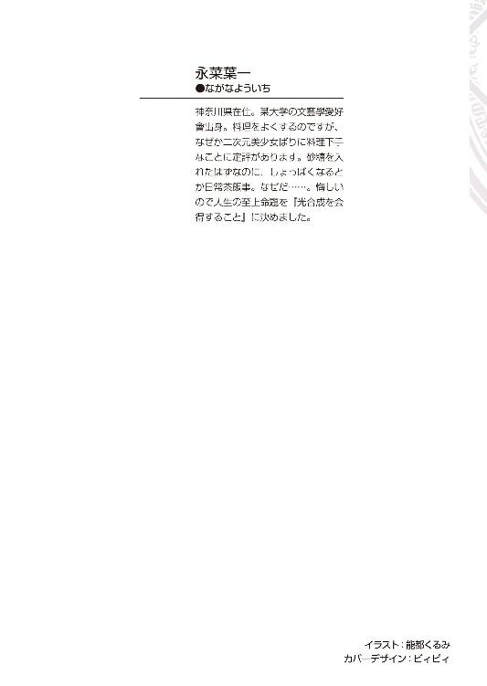
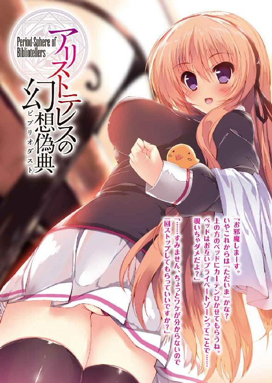
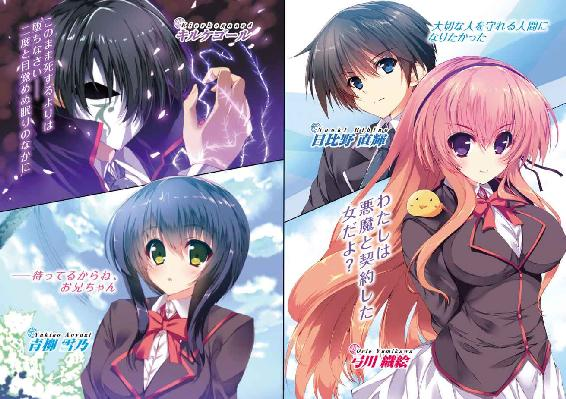
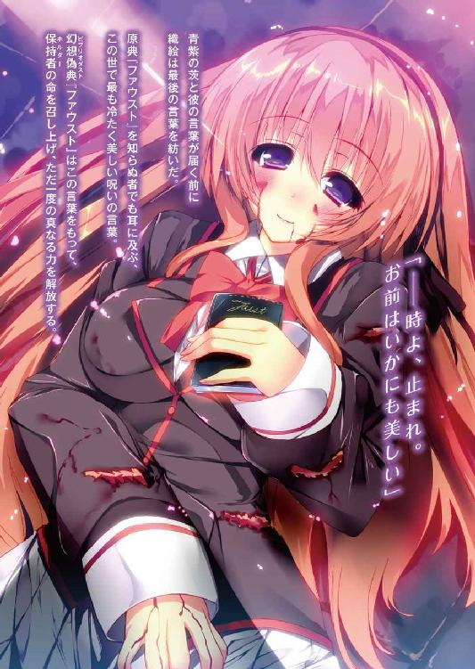
アリストテレスの幻想偽典
1．禁忌の八番目
永菜葉一

富士見ファンタジア文庫
本作品の全部または一部を無断で複製、転載、配信、送信したり、ホームページ上に転載することを禁止します。また、本作品の内容を無断で改変、改ざん等を行うことも禁止します。
本作品購入時にご承諾いただいた規約により、有償・無償にかかわらず本作品を第三者に譲渡することはできません。
本作品を示すサムネイルなどのイメージ画像は、再ダウンロード時に予告なく変更される場合があります。
本作品は縦書きでレイアウトされています。
また、ご覧になるリーディングシステムにより、表示の差が認められることがあります。
口絵・本文イラスト 能都くるみ
プロローグ
プラトンという人物がいる。
古代ギリシャの哲学者──らしい。
ソクラテスの弟子で、アリストテレスの師匠。正直、弟子や師匠の名前の方がまだなんとなく聞き覚えがある気がする。
哲学者プラトンは後世に多大な影響を与えており、その最たるものがかの有名な『イデア論』......なのだそうだ。
目に見える現実の不完全さを嘆いたプラトンは、すべての原初となるイデア界というものを考え出し、我々の生きる現実はその影でしかない、と唱えた。
だから我々は影でしかない現実界を越え、本質たるイデア界を想起しなくてはいけない。......と、そういうことらしい。
正直、なんのこっちゃと思う。数学の教師が微妙な滑舌で解説する公式の解き方の方がまだなんとか分かりそうな気がする。
ただ、なんとなく......本当になんとなく、理解出来そうな箇所があるとすれば。
プラトンという人は、きっと恥ずかしいくらいの理想主義者だったのだと思う。
師匠が冗談みたいな罪状で毒殺されたり、平和のために手塩にかけて育てた王族たちがあっと言う間に追放されたり、そんな無残な現実を何度も突きつけられてなお、いつか自分の理想に届くと信じた。
じゃあ、翻って自分は──日比野直輝はどうだろうか。
たとえば、大事な妹は幻想偽典なんてワケの分からない力のせいで突然目覚めなくなった。その一つの『ファウスト』という偽典を持つ生徒会の先輩はまるで自分の身を捨てるようにして助けてくれた。それらを前にして何も出来ない、無力な自分がここにいる。
──大切な人を守れる人間になりたかった。
日比野直輝はいまだその理想に届かない。
一章 ─不死なる魔女に炎は廻り─
草木の間を縫うように、光が尾を引いて疾走していた。
それは少女が手にした一冊の本が放つ光だ。淡く赤い燐光を放つ本の表紙には独語で『ファウスト』という題字がある。
少女の体のいたるところには無残な傷痕が走っていた。制服の裾から覗く手足は赤く染まり、彼女の呼吸も喘ぐように荒い。
「織絵、もう限界だ！ 事ここに至ってはやむを得まい、偽典を開け。このままではジリ貧になるぞ!?」
織絵と呼ばれた少女のワイシャツの胸元からフゴフゴと彼女を心配する声がする。同年代の平均より大きく実っている少女の胸、その間で不自然にせり出している三つ目の膨らみ──そこに何かがいるらしい。
「ん、自覚はあるんだけどね。でも、次に偽訳解放してそれが解けたら、今夜はもう動けないかもしれないから」
「......っ、もうそこまで衰弱しているのか!? ふざけるな、妾は聞いていないっ。一旦退くぞ、お前はもう限界だ！」
「でもさ、ここって一年生の男子寮が近いんだよね。今わたしが退いたらまた犠牲者が増えるかもしれないから。だから逃げるわけにはいかないじゃない。ここで退くなら、最初からこんな生き方選んでないよ」
「......っ、この頑固者が！」
苦虫を噛み潰すような胸元の声に対して、ごめんね、と織絵は苦笑する。しかし、その表情とは裏腹に頬には冷たい汗が流れている。
そこに、第三の声が響いた。
「そむ、その覚悟は実に宜しい。しかし果たして貴女にここからの逆転の一手はあるのでしょうか、ファウストのお嬢さん？」
その声と同時に闇夜のなかから何かが飛び出して織絵へと殺到した。
それは、茨だ。
鞭のようにしなる赤錆色の茨が風を切って向かってくる。くっと強く息をはいて、織絵は迫りくるそれらを紙一重で躱した。
「ほう、お見事。さすがは歴戦の偽典詠士と言ったところですか。しかし無傷とはいかなかったようで」
迫ってきた時と同じように一瞬で茨が闇の向こうに還っていく。辺りに舞うのは切り裂かれた織絵の制服の断片と、避けきれずに受けた傷から染み出た血の匂いだ。
ふっと闇のなかから人影が現れた。
細く肉の薄い体。しかし身長はこちらの頭二つ分は高い。身に着けているのは織絵と同じく学園指定のブレザーだ。ここまでならばまだただの同級生で通るだろう。異質なのはその先だ。
男の身には夜を纏うような外套があり、その顔には表情を覆い隠すように白く不気味な仮面があった。そしてその手には青い光を放つ一冊の本がある。表紙には題字と著者の銘が刻まれていた。
キルケゴール『死に至る病』。
「彼の者は言いました。〝人生を空費した人間というのを定義するのなら、それはつまるところ人生の喜びや哀しみに欺かれて日を送り、永遠に、断固として、自分を精神として自己として、自覚するに至らず終わった無残なる人のことである〟と。ファウストのお嬢さん、貴女は自分が絶望していないと言い切れますか？」
織絵はあえて不敵な表情を作って口の端を上げる。
「それは負け惜しみってやつでしょう？ だってわたしはあなたの振るう『死に至る病』に侵されてなんていないもの。万人に自分の理屈が通じるとは思わないことよ、キルケゴール」
仮面の男は口のあるだろう位置に指を当て、ふむ、と頷いた。
「確かに一理ある。私の幻想偽典の起源たる十九世紀の実際のキルケゴール当人も、ついぞ他人の理解を得られない不遇な生涯だったようですしね。どうやら私と貴女はご縁がないようだ。ならば止む無し、試合に勝って勝負に負けにいくとしましょう」
キルケゴールの持つ『死に至る病』の青光がゴウッと強さを増す。
織絵の胸元から先ほどの声が焦りを表す。
「織絵、くるぞ！ あの痴れ者め、ここで決める腹積もりだ！ どうする!?」
こちらも偽訳解放で対抗するか、再びの逃走か。織絵の判断は一瞬だった。
逃げる。行けるとこまでどこまでだって逃げてやる。
もとよりこっちの狙いはキルケゴールにこれ以上の犠牲者を出させないことだ。ギリギリの一線までこちらは手札を切らずにいく。
動かぬ手足に叱咤して織絵が駆け出そうとしたその時だった。すぐ横の草むらから制服姿の男子生徒が一人、無造作かつどうしようもなく無防備に現れた。
なっ!? と織絵は言葉を失う。
「なんで一般人がこんなところに!? アリストテレスの共鳴結界はどうしたの!?」
「わからん！ しかしこのままでは......っ！」
「宜しい、ではご期待にお応えして貴女諸共といきましょう。彼の者は言いました。〝絶望を創れ！ 絶望を創れ！ それこそが唯一の救済者なのだ！〟」
キルケゴールの茨が赤錆色の軌跡を描いて織絵と少年に放たれた。
戦場に突如踏み込んでしまった形の少年は「は？」とぽかんとした顔をしていた。
「キミ、伏せて！」
その少年を庇うように織絵は彼へと目がけて飛び出した。
＊ ＊ ＊
高校に入って、直輝は三年ぶりに妹と再会した。
妹の今の名は青柳雪乃という。苗字は母方の旧姓だ。両親が離婚したのは、二人が小学校六年の時だった。母親が海外を転々としてる人なので、そちらについていった雪乃とは会う機会がほとんどなくなってしまった。
兄である直輝は四月生まれで、雪乃が生まれたのは三月の雪の日だ。だから兄妹で同学年になる。離れてからも連絡は頻繁に取り合っていて、直輝が高校進学を機に全寮制の私立リセリア学園に通うとメールした翌日、「ならあたしも兄さんと同じ学校にするね！」と返信がきた。学校案内を見ると世界中に姉妹校があるらしいので兄妹でお揃いにしたいのだろうぐらいに思っていたら、入学式の日にまさかの再会と相成った。
三年ぶりに会った妹は兄の贔屓目を抜きにしても、かなりの美少女になっていた。ついでに重度のブラコンにもなっていた。
名前の通り真っ白な肌に垢抜けたショートボブの柔らかい髪、そこに生来の活発さも加わって、一年男子のなかでは早くもファンクラブなんかが出来つつあるとか。
が、雪乃本人はそんな周囲の視線などには目もくれず、朝からこっそり男子寮に押しかけて直輝を起こしてみたり、わざわざ調理部のキッチンを借りて弁当を作ってきたりと、兄にべったりの有様だった。
直輝は直輝でそんな妹に困った顔をしつつ、三年間甘えさせてやれなかった分だと思って、クラスメートの「雪乃ちゃん可愛くて羨ましいけど、三年間の高校生活で直輝に彼女が出来ることはないだろうなぁ......」という深刻な表情の忠告も断腸の思いで受け止めていた。
そして入学から数週間、桜の花も散って青葉を見せ始めた頃。
突然、雪乃が目を覚まさなくなった。
妹は原因不明の昏睡状態に陥った。
「あと少し、よっ......と！」
男子寮の三階。窓から外壁に出た直輝は上下に伸びる排水管に掴まった。
夜十時を過ぎると原則的に外出は禁止になる。普段はそこそこ優しいが規則を破ると鬼と化す寮母さんの目を逃れるには、こんな捕虜まがいの脱走法しかないのだ。
「ちくしょう、なんて高さだよ。ああもう、下は見ない下は見ない......」
最初に雪乃の異変に気づいたのは相部屋の女子生徒だった。その日の朝、食堂へ向かう時間になっても雪乃は目を覚まさなかったらしい。大声で呼ぼうが肩を揺すろうが雪乃は反応せず、彼女は呆れて先に食堂で朝食を摂り、雪乃とはクラスが違うためにそのまま教室へ向かった。しかし放課後になって部屋に帰り、いまだに眠り続けるルームメイトを見て、ようやく異常に気づいた。
そして、一週間経った今でも雪乃は眠り続けている。意識は一度も戻っていない。
「地面までもう少し......よし、着地」
きっちり三階分の高さを排水管伝いに無事降りて、直輝はほっと肩を落とす。一応、制服を着ていたのだが、排水管の錆で汚れまくっていた。見回りの警備さんや教師なんかに見つかった時に怪しまれてしまいそうだがもう仕方ない。
頭を切り替えて、直輝は早足に歩き出す。
驚いたことに雪乃と同様の異変は他の生徒たちにも起きているらしい。直輝自身、この目で確認したわけではないが、雪乃と同じ眠ったまま目覚めない昏睡状態──生徒たちの間では眠り病と呼ばれている──に陥った生徒は一人や二人ではないようだ。
情報元のクラスメート、木坂夏生によるとこの学園ではそういった不可解な出来事が多いらしい。
曰く、生徒たちによる集団自殺未遂、大学部の実験棟の倒壊事故、他にも第二グラウンド横の溜め池が一晩で干上がったとか、果ては日食のように昼と夜が逆転したなんて話もあったとか。
さすがにそんなことが立て続けに起きていたらもっと大変な騒ぎになるはずだろう、と思ったし、実際にそんな体験をしたという人間には夏生も会ってはいないらしい。大学部の実験棟だって、寮のテラスから健在な姿が見てとれる。
だが、その話には続きがある。
まことしやかに囁かれる、『呪いの白い本』の噂。
学園の中央記念図書館には地下の大聖堂へ通じる扉があり、そこには人の欲望を叶える真っ白な呪いの本が安置されている。集団自殺未遂も実験棟の倒壊も溜め池の干上がりも突然の日食も、およそこの学園で起こる異常の裏にはその『呪いの白い本』が関わっている、と。
「そんな話、正直信じられないけど......」
けれど雪乃が眠り病に堕ちるその前日、直輝はその『呪いの白い本』のことらしき話を聞いていた。それは夏生ではなく、他ならぬ雪乃自身の口からである。
いつものように男子寮に忍び込んできた妹は、ベッドの上で丸くなり、直輝の枕を抱きながら言ったのだ。
──兄さん、願いを叶えてくれる白い本の噂って知ってる？ と。
雪乃の言ったそれが学園で噂されている『呪いの白い本』のことだと気づいたのは、あとになってからのこと。直輝の部屋で『白い本』のことを語った次の日の朝に、雪乃は目覚めなくなった。
学園が派遣してくれた医者にも診せたが原因は不明。教務課を通して母親に連絡もしているのだがいまだに音沙汰ない。
そして生徒たちの間では、この眠り病も『呪いの白い本』の仕業だという噂がずっと囁かれ続けている。
正直、怪談ともオカルトともつかない話だ。普段なら適当に聞き流していたと思う。けれど、もう他に手掛かりのようなものが何もない。
「怪談だろうがオカルトだろうがなんだっていい。それが雪乃が眠り続けてる原因だって言うなら......どんなものだって俺は知りたいっ」
決意を口に出して、寮の柵を飛び越えた。その足は噂の中心──『呪いの白い本』が安置されているという中央記念図書館に向かっている。
男子寮の裏から表通りを目指して林を抜けていく。山間部の高台に建設された学園なので、景観保存の名目で残された緑地帯がちょくちょくある。そういった街灯や人の目から外れた場所があることが妙な噂の発生元じゃないだろうか......そんなことを考えながら進んでいた直輝の足がふいに止まる。
──リィン、と鈴の音のようなものがした。
「......っ」
その音と同時に、急激な眩暈に襲われる。
いきなり水中に潜り込んだ時のような、あるいは陽の当たる場所から突然暗がりに放り込まれた時みたいな、世界が一転した感じの酩酊感。
「なんだ、今の......？」
上手く言葉に出来ない気持ち悪さがあった。軽く頭を振ってみる。たぶん......気のせいではない。
目を瞬かせる直輝の視界の端に、今度は奇妙な光が見えた。
青と赤。
林の奥で交差するように二つの光が舞っていた。
「......警備員のライト、じゃないよな？」
頭の隅に夏生と雪乃の話が蘇る。学園で起こる不可思議な出来事。
鬼火や人魂が飛ぶなんて話はなかったと思うが、吸い寄せられるように直輝の足は光の方へと向かう。
そして、少年は異常に遭遇する。
枝と草をかき分けて、最初に目にしたのは白い仮面をつけた男だった。
刹那の間、男は一冊の本を持っていたように見えた。しかしそれは一瞬で青い光となって弾け、代わりに夜の闇のなかから無数の棘を持つ茨が現れ──直輝へと向かってきた。
「は？」
何が起きているか分からず、ぽかんとした声が自分の口から漏れた。
本という情報に頭の隅が強く反応している。しかしそれ以上に飛来する凶悪な茨に本能が警報を鳴らす。だがすべては一瞬のことで、何の変哲もない高一男子である直輝には反応の仕様もない。
「キミ、伏せて！」
代わりに真横から突っ込んできた誰かが直輝を突き飛ばした。
突き飛ばされて回る視界と暗がりでその人影の姿ははっきりと見えない。だが最初に掛けられた声でそれが女子生徒だと分かる。わずかに見えたリボンは二年生のものだった。
そして瞬きが彼女の姿を隠したその一瞬で、
「......ぁっ！」
飛来した茨が鞭のようにしなって彼女の体を切り裂いた。
少女から飛び散った赤い液体が頬に当たり、直輝は目を見開く。血が舞い、制服が千切れ、そして彼女のブレザーに入っていたらしき一冊の本が地面に転がった。
大きさは文庫本ほどで、背表紙が金属のようなもので固く補強されている。それはページを開く側も同様で、これでは中身を読むことが出来ない。本の両側を封じた金属は多重構造になっていて、決して開かせまいとするようなある種偏執的なまでの意志が伝わってきた。
そして、その表面は無地。つまり、真っ白だった。
学園の不可思議な異常の裏側に存在する、呪いの白い本。
それは雪乃の眠り病に起因するかもしれない鍵だ。どくん、と直輝の心臓が鼓動する。
「キミ、ぼうっとしてないで逃げて、早く！」
少女の鋭い声にはっとして顔を上げる。
目に飛び込んできたのは少女の手元の赤い燐光。彼女も光り輝く本を持っていた。その視線は仮面の男の方を向いており、自分が地面の白い本を落としたことには気づいていない。
「な、なんですか、これは!? それに、その怪我、血がすげえたくさん......っ！」
「わたしはいざとなれば死なない体だから大丈夫！ それより逃げて、わたしじゃキミを守りきれないの！」
「し、死なない体!? 何を言って......っ、え、ってかこれ撮影か何かですか？ そうですよね？」
「御託はいい。舌にまわす分の血液を二本の足に注ぐのだな」
「は？ 今の声、どこから......」
目の前の少女のものではない声がどこからかした。少女のワイシャツの妙に膨らんだ部分から聞こえた気がするが、定かではない。
さらに言葉の途中で再び茨が宙を舞った。直輝と少女を挟んだ両側に二人の退路を断つように獰猛な赤錆色の風が吹き抜ける。ひ、と反射的に体に震えが走った。あれに触れればどうなるか、自分を庇ってくれた少女の体が如実に物語っている。撮影やドッキリではないと恐怖に震えた体が理解する。
「逃がすわけがないでしょう？ 守れるわけもありませんよ？ せっかく迷える子羊が自ら釜のなかへ舞い込んでくれたのです。歓待せずにはいられないのが、人情というものではないですか。ねえ、少年？」
闇に浮かぶような仮面がわずかに首の角度を変える。理屈ではなく、その視線がこちらの姿を捉えているのが分かった。搔き毟られるような悪寒が背中を這いずる。
しかしその悪寒の源を断つように、男と直輝の間に少女が立った。
「逃がしてあげるし、守ってみせるよ。キルケゴール、あなたの茨はこの彼には届かない。だからキミ、安心して。このわたしの命に誓って、キミを必ずこの死地から送り出すから」
言葉の後半は直輝に向けられたものだった。込められた意志の強さがにじむように伝わって、直輝の感情を大きく揺さぶる。自分のせいで傷だらけになった少女の後ろで胸が詰まる。なんでそこまで......と呟きかけた言葉を男の嘲笑が遮った。
「なるほど、痛ましい覚悟ではありますね。だが、口先だけで終わらずに結果を示せるかは大いに疑問です。実存の伴わない希望では決して人は救われない」
キルケゴールと呼ばれた男が右手を挙げると、ずるりと幾本もの茨が現れる。茨は光の届かない暗がりからキルケゴールの意志で現れているようだった。
それに対して、少女の唇がつり上がる。それはどこか自嘲めいた笑みだった。
「希望とか救いとか一体誰に向かって言ってるか、分かってる？」
その髪が跳ねるように夜の闇に舞う。引き結ばれた桜色の唇が扇情的に弧を描く。数多の人々の羨望を一身に集めるような蠱惑的な瞳で彼女は告げた。
「──わたしは悪魔と契約した女だよ？」
本が放っていた赤い燐光が爆発的に広がった。それは地獄の炎のように少女を包み込み、その唇からさらなる言葉が紡がれる。
「偽訳解放、ゲーテ・『ファウスト』！」
弾けるように本が開き、そこにあったすべてのページが飛散した。宙に舞った紙片は燐光に触れると、雪解けのように少女の体に溶けていく。
同時、少女の髪が光を伴って黄金に染まっていく。彼女を包む光のなかには陽炎のように揺らめく文字列が浮かび、細い両手首へと集まると一対の腕輪へと姿を変えた。そこから迸るのは紅蓮の炎。彼女を中心に赤い尾を引いて焰は円周軌道を描き出す。
熱と輝きに呼応するように少女の身には変化が起こった。全身に及ぶその傷が映像の逆再生の如く修復されていく──。
「朽ちた老学者ファウストはかの大悪魔と魂譲渡の契約を取り交わし、死を超越した肉体を手に入れた。たとえ千の槍に貫かれようと億の刃に刻まれようと、わたしは死を飛び越えて在るべき体を取り戻す！」
呼応するように焰と光が峻厳な鋭さで輝きを増した。その中心にいる彼女は瞳に意志を込めて言う。
「死なずの体は力無き人の盾となり、猛る業火は敵を葬る歌となろう。──伸ばしたこの手が届く限り、決して誰も傷つけさせない！」
明滅する炎の尾に照らされて、直輝は初めて彼女の横顔をはっきりと見た。整った鼻梁と涼しげな目元、そして輝くような黄金の髪。焰と光を従えた彼女の、まるで絵画の世界のようなあまりに現実離れした美しさに、目を奪われる。
意味はほとんど理解出来ないし、何が起こっているのかも分からない。
けれど誰も傷つけさせないと言いきった彼女のその意志は、妹を助けてやる術さえ持たない直輝にとって、強く心を揺さぶるものだった。
「死という摂理さえ無に帰す不死身の肉体......やれやれ、何度見ても常軌を逸した背徳的な体ですね、実に正視に耐えない！」
ずるり、と這い出た茨が風を切って直輝と少女に迫る。
「ひっ......っ」
しかしその悉くは、
「燃え散りなさい！」
彼女の腕輪から迸る炎によって一瞬にして灰へと変わった。
炎は少女の周囲で円周軌道を描いて舞っている。それはまるで燃え盛る星々の如くだ。
「す、すごい......」
猛る焰は彼女の意のままに動き、先ほどまであった体の傷もすでに跡形もない。常識では計れない事態が目の前で起こっている。呆然としていた直輝はしかしはっと我に返った。
（......ひょっとして、これ全部が『呪いの白い本』があって起こってることなのか......？ だったら地面に落ちてるこいつがあれば、俺にだって──）
目の前の少女のように、この異常のなかで胸を張って立てるだけの〝何か〟を手に入れることが出来るのだろうか。
思えば、キルケゴールと呼ばれた仮面の男もあの茨を出す前に確かに本のようなものを持っていた。脳裏に浮かぶ妹の顔がひょっとしたらという思いを加速させる。
しかし直輝の手が地面に伸びる前に、キルケゴールを睨んだままの少女が小声で囁いた。
「振り向かないで全力で走って。たぶん、わたしも長くはもたないから」
「え......っ？」
彼女は自分が本を落としていることに気づいていない。ただ直輝を逃がすことのみに全力を傾けようとしている。
「次に逢えたら一緒にご飯でも食べようね。わたし、お昼休みにすっごく快適な穴場を知ってるんだ」
「あ、あの......っ！」
常識から外れたようなこの夜のなかで、ふいに自分の日常と地続きなことを言われて、思わず直輝は手を伸ばした。しかし、その手のひらは届かない。
一瞬早く、赤い燐光を伴って彼女が走り出していた。
「なるほど、ここで攻勢に転じると。しかしながら同じ過ちを繰り返す貴女を私はこう評さずにはいられない。〝哀しいほど蒙昧な愚者である〟と！」
陶酔するような仮面越しの声と同時に少女に迫る茨の数が倍に増える。それはまるで張り巡らされた奇怪な蜘蛛の巣のように。
三次元的な囲いは少女の周囲を巡る焰の回転数を凌駕する。それでも彼女の炎は決して少なくない茨を焼き、傷を受けた先からその体は再生するが、やがて降りかかる茨に絡めとられてその前進は阻まれた。
「くぅ......っ！」
「いい加減、貴女も理解しているでしょう、ファウストのお嬢さん？ 不死身の体という貴女のその特性は私の与える絶望を無効化することは出来ても、直接私に害を及ぼす決定打には成り得ない。自身の周囲にしか発現しないその炎も決して私には届きはしない。私に対する相性はすこぶるいいはずなのに、やはりご縁がないのでしょうね！」
そして、惨いことに少女は痛みを感じていた。薄い唇から苦悶の声が漏れている。不死身の体が再生を繰り返したとしても、その神経が伝える数多の激痛は和らぐことなく彼女を責め立てている。
（おいおい、どうかしてるって......っ）
直輝の目にその光景は地獄の責め苦そのものに見えた。少女の再生と茨の勢いは拮抗している。だがその分だけ、延々と彼女は身を裂かれる痛みを受け続けるのだ。
そして、キルケゴールの口ぶりだと彼女はそれを分かりながらやっている。
（なんで、そんな自分から苦しむようなことを......っ）
それでもなお茨を焼き尽くさんとする彼女と一瞬、目が合った。赤い燐光越しのその瞳から意図が伝わり、直輝ははっとする。
（お、俺のため......っ!? まさかあの人、俺が逃げる時間を稼ぐためにあんな捨て身な特攻したっていうのか!?）
気づいた瞬間、頬に何かが流れるのを感じた。はっとして手で拭うと、それは先ほどかかった彼女の血だ。すぐ目の前に白い本が落ちている。それに後ろ髪を引かれながらも、
「......ちくしょうッ！」
直輝は身を翻して走り出した。悪夢のような惨状に背を向けて全力で駆け出す。
「おや、勝手に退席ですか？ それはマナー違反ですね」
「お生憎様、彼は今夜の招待客じゃないってことだよ。あなたこそ、主賓のわたしを前にして目移りしないでほしいな！」
鞭のしなるような風切り音が背後から響いた。しかし、それが直輝の背中を穿つことはなく、代わりに彼女の小さな呻きが聞こえた。直輝は振り向かずに走り続ける。
（ちくしょう、ここまで捨て身で守られたら、それを無駄になんて出来ないだろ......っ）
理由は分からないが彼女は自分を助けてくれようとしている。傷つき苦しみながらも活路を開こうとしてくれている。その彼女が逃げろと言うなら全力で逃げるしかない。
林を抜けた。あの酩酊感があった場所の直前までくる。ここを越えれば日常に戻れる、なぜか直感的にそう思った。あと一歩を踏み出して、この境界線を越えればいい。自分の無力さは正しく認識しなくてはいけない。
想いや願いだけではどうにもならない現実があることを、日比野直輝は知っているのだから。
けど。
けれども。
（──いいのか!? 女の子一人残して自分だけ逃げて、それでいいのか!?）
その一歩を越える直前で直輝の足は踏み止まった。
＊ ＊ ＊
織絵の荒い呼吸が林のなかに響いている。
キルケゴールの三次元的な蜘蛛の巣に両手両足を絡めとられ、完全に身動きを封じられていた。茨は明かりのない暗がりから伸びてきている。おそらく「絶望は人が知覚する闇のなかからやってくる」などの定義が『死に至る病』に記されているのだろう。キルケゴールの活動時間帯が主に陽が落ちてからなのは、おそらくこれが理由だ。
「自らが囮となって子羊を逃がそうとするとは......まあ貴女の意図は達したようですし、見事な特攻だったと言っておきましょうか。ところで私の歓待はいかがですか？ 見目麗しい少女が四肢を束縛されるというのはなかなかに芸術的な光景かと思いますが。まあ、正直私の趣味ではありませんが......背徳的な身である貴女にはお喜び頂けるのでは？」
「......悪いけど、わたしもそういう変質的な趣味はないかな。もうちょっと紳士的なエスコートを身に付けないと、一生モテないと思うよ？」
「はは、ご忠告は真摯に聞いておきましょうか。たとえ貴女が悪魔と契約するような醜悪な存在であっても、一応はね」
「あなたはよっぽどわたしのことが気に入らないみたいだね」
「いえいえ、ただ気持ちが悪いだけですよ。一体どんな精神の在り方をしていれば、ゲーテの『ファウスト』なんて歪さ極まる幻想偽典を引き当てるのか、とね」
「それはお互い様じゃないかな？ 考え方の違いってやつ。普通の感覚ならキルケゴールの『死に至る病』の方がよっぽど病的だよ。万人はみな絶望のなかにあるんでしょ？ どんな頭してたらそんな幻想偽典を引き当てるんだか......いっぺん病院行って出直してくれば？」
ギチッと手足の茨が締め付けを増した。織絵は出かかった悲鳴をとっさに飲み込む。体に食い込んだ茨が邪魔になって再生すら出来ない。
「それは俗に言う挑発というやつですか？ その程度で我を忘れて貴女に近づくような愚行は侵しませんよ。私には貴女のようなおぞましい再生力はないので、接近戦に持ち込まれたら厄介ですからね。常にこうして一定の距離をとらせてもらいます」
その言葉通り、キルケゴールは織絵の動きを封じた後も決して近づくような真似をしてこない。遠距離に対する攻撃手段のない織絵の特性を的確に突いている。
「さて、煩わしいその両腕の炎もだいぶ勢いを失くしてきたようですし、あとどれほど貴女の精神力は持つでしょうかね。たとえ偽訳解放中は不死身でも、それが解けたらただの生身の少女でしょう？」
愉悦を含んだ声と共に茨がさらに肌へと食い込んでくる。神経を直接すり潰すような痛みに意識と集中が途切れそうになる。だが、この状態でのそれが意味するのはすなわち死だ。
「はは、これは......切り札の使いどころかな？」
『待て！ 諦めるな、織絵。妾はそのような諦観を認めはしない！』
先ほどの声が織絵を叱咤する。偽訳解放した今、その声は織絵自身の口から発せられている。俯いた状態なのでキルケゴールからは見えないが、声が発せられる時、織絵の瞳はサファイアの赤から天鵞絨の青に変わっている。
「いやぁ、そうは言われましても......これって結構、絶体絶命だよ？」
『だとしてもだ！ 妾はまだお前の願いを叶えていない、こんなところで妾は終われぬ！』
「あはは、わたしの願いなんて......そんなのもう忘れちゃったよ。自分が何を願ってるかなんて、もうわたしには分からないもの......」
『諦めるな、まだっ、まだきっと手は......っ』
一人語りのような織絵のやり取りは、距離があるせいでキルケゴールの耳にまでは届かない。俯いたまま動かなくなった少女を目にして、仮面越しの声に愉悦の割合が増していく。
「そろそろ限界のようですね。いやいや生徒会のお仲間たちも不在のなかのまさしく孤軍奮闘、貴女は本当に頑張りました。慈悲深い私からのせめてもの労いです。このまま死するよりは堕ちなさい──二度と目覚めぬ眠りのなかに」
キルケゴールがその一言を発した瞬間だった。あらぬ方向から声が響いた。
「それは......、どういう意味だ!?」
織絵とキルケゴールが同時に目を向ける。そこにいたのは、先ほど逃げたはずの少年。
「目覚めぬ眠りに堕とすって......まさか、まさか雪乃が目覚めなくなったのは、お、お前の仕業なのか!?」
肩で荒く息をはく少年は必死の形相でキルケゴールを睨んでいた。おそらくここまで走って戻ってきたのだろう。紅潮した頬にとめどなく汗が流れている。
唖然とした織絵は言葉も出ない。
一体どうして戻ってきた？ 幻想偽典の存在を知らない一般人であっても危険なことぐらいはわかるはず。いや......誰かが目覚めないと叫んでいるところを見ると、彼の近しい人間が『死に至る病』の犠牲者なのか。だから戻ってきたということか。
（......いや、ちょっと待って。キルケゴールが犯人であることは今、奴の言葉で知ったみたい。......え、じゃあ、なんで？ なんでこんな危険な場所にわざわざ戻ってきたりしたの？）
「ふむ。ゆきの、ユキノ......残念ながらそのような名前に覚えはありませんね。しかしまあ、その方が決して目覚めぬ安らかな眠りについているというのなら......」
コツコツとキルケゴールが自らの仮面を指で叩いた。
「十中八九、私の救いの賜物でしょう」
「......っ！」
怯えを含んでいた少年の表情が一瞬で激昂に変わる。彼が冷静な判断力を失っていくのが目に見えて分かった。その足がキルケゴールへと向かって駆け出す寸前、その初動に割り込むタイミングで織絵は叫んだ。
「待ちなさい！ 幻想偽典を持たないただの人間じゃコイツには絶対に敵わない、なんで戻ってきたの!?」
躓くように足を止め、しかしその勢いだけは止まらずに少年は叫んだ。
「傷だらけの女の子一人残して、逃げたり出来るわけないっ！」
「──っ!? わたしの、ため......？」
思ってもいなかった答えに織絵は言葉を失う。
しかしその驚きを飲み込む間もなく、片目が天鵞絨の青に変わる。
『織絵、あの小僧の足元を見ろ！』
声の言う通りに視線を向けた先に、保持者が空白状態の幻想偽典があった。それは暫定的に織絵が管理していたものだ。目の前のキルケゴールに集中しすぎて、ポケットごとブレザーが千切れ飛んでいることに気づけてなかった。
そして、立ち止まった少年はその偽典を凝視していた。
『あの小僧、まさか偽典を手にするつもりではないだろうな!?』
「な!? でもあの偽典は特保やリードマンの選定を受けてないイレギュラーだよ？ 保持者になんてなれるわけ......」
『だが、どうやらあの小僧はアリストテレスの共鳴結界を抜けてきている。もしも偽典自体があの小僧を呼び込んだのだとしたら......っ！』
「......っ」
声のその危惧を裏付けるように、躊躇いと決断の間で少年の瞳が揺れている。彼は織絵が偽典を解放する瞬間を目撃している。もしかするとキルケゴールの時にも見ていたかもしれない。
ある程度の想像力とそこから飛躍する思考の瞬発性があれば、偽典と今の状況を結びつけることはたぶん難しくない。さらには学園内に誤解と憶測の入り混じった『呪いの白い本』の噂が流れていることは、織絵も知っている。
そしてその危惧の通り、決断を下したかのように少年の拳が握りしめられた。
「ひょっとして、これを手にしたらあなたたちみたいな力が使えるようになるのか......？」
「待って！ 幻想偽典は力を得られるだけのものじゃないの！ 引き出した偽典によっては一生を台無しにされてしまうものも──」
「彼の者は言いました。〝真に正しい隣人とは歪曲せんとする者がいる時、そのわずかな可能性まで須らくを甲斐々々しく摘み取ってやる者である〟」
織絵の言葉が終わらぬうちにキルケゴールの茨が飛んだ。「ダメぇ！」抵抗する力を持たない少年へと絶望を内包した暴力が殺到する。
＊ ＊ ＊
リィン、リィン、と鈴の音が鳴り響いている。それは眩暈を感じたあの時にも聞こえた音だ。
今ならその発生源が目の前の白い本からだとはっきりと分かる。
これを手にした後、どうなるのかは分からない。本当は未知なものに対する恐怖の方がずっと強い。指先がかすかに震えているのが自分でも分かる。
でも、と直輝は仮面の男と自分を助けてくれた少女を見る。少女の方は茨に全身を絡め満身創痍の有様だった。それでもまだ立っている。戦っているのだ。直輝を守るために。震えを振り払うように、ぎゅっと拳を握りしめる。
「ひょっとして、これを手にしたらあなたたちみたいな力が使えるようになるのか......？」
少女が何事かを叫んだ。同時、キルケゴールがこちらに向かって茨を放つ。その風切り音で少女の言葉は聞こえなかったが、その表情だけで疑問の是非は見て取れた。
迫る危機に竦みそうな体を歯を食いしばって動かし、直輝は地面の白い本を手に取った。
「オカルトでも怪談でもなんでもいい！ 俺に力を貸してくれ──ッ！」
その瞬間、広がったのは目も眩むような閃光。
迸った光が茨を弾き飛ばし、キルケゴールが「馬鹿な......っ!?」と息をのむ。
そして、頭のなかに鈴の音のような凜とした声が響いた。
『悠久にも似た時を経て、ついにアカデメイアは開かれた。ゆえに我はここに万物の真偽を問う──答えよ、汝の目に映る世界は真であるか偽であるか？』
思わず震え上がって跪いてしまいそうなほど、その声は厳かな響きを持っていた。声が持つその荘厳な響きだけで委縮し、気が遠くなりそうになる。
ワケも分からないまま恐怖に駆られてなんとか答えを返そうとして──その寸前、脳裏に雪乃と、そして自分を助けてくれたあの傷だらけの少女の顔が浮かんだ。
途端、沸き上がってきたのは抑えきれないほどの怒り。投げかけられた壮大な問いは、馬鹿みたいに見当違いだ。その迸る感情に任せて、直輝は叫んだ。
「はあ!? 世界がどうのなんてどうでもいいんだよ！ そんなモン考えてるより先に、守らなきゃいけない大事なものが俺にはあるんだ──ッ！」
言葉は光のなかで反響し、木霊する。それが沁み入るような一瞬の間を置いて、声は応えた。
『世界の規定をも穿つ意志、受諾した。汝、終焉を司る禁忌の八人目として認めよう』
そして、光に色が生まれた。迸るのは、赤、橙、黄、緑、青、藍、紫の七色の輝き。
本を掴んだ右手から物凄い勢いで何かを吸い尽くされる感触がした。自分の記憶や感情や魂までも、誕生してから蓄積されたあらゆる情報が本へと写し取られていく。
そして、開くことを封じるようにつけられていた多重構造の金属が弾け飛んだ。枷を外されたページが鳥の羽音に似た音を立てて歓喜する。
「......っ」
直輝のすべてを飲み込んだその本は、まるで元からそう在るべきものであったように不思議と手に馴染んだ。
ゆっくりと落ち着いていく光のなかで、炙り出されるようにその表紙に文字が現れる。それは見知らぬものだったが、意味するところは自然に頭に入ってきた。
「──プラトン・『イデアの片翼』」
直輝が漏らした呟きに少女が大きく目を見開いた。
「......っ、アリストテレス以前の二大賢者プラトン!? そんな、ありえないよ！」
『いや待て、問題はそれだけではない......っ！』
直輝の視線の先で仮面の奥からキルケゴールが戦慄く。
「人越のすべてを内包する七色の輝き、『世界を規定せし書』を引き当てたというのですか......!? 馬鹿な、予見された七冊すべてが世界に揃っている今、これ以上の現界などありえないはず......っ」
「よく分からないけど、これで俺もあなたたちと同等ってことだな......っ！」
少女が腕輪によって炎を操るように、キルケゴールが闇から茨を生み出すように、自分にもなんらかの力が生まれるはず。
確信なんて何もなく、ただ直感に従って、直輝は手にした本を振り上げた。
──途端、深い海の底に手を差し入れたような感覚。
少女の時と同じようにページが弾け、紙片が直輝の体に溶け込みながら、その手に一つの形が具現する。
『偽訳解放だと!? 特保の訓練もなしにか!?』
現れたのは、氷柱を鍛え上げたような美しい結晶の剣。その刀身は多面体の様相を見せ、外から取り込まれた光が刀身内部で乱反射を繰り返す。
「綺麗......」
その呟きは茨に絡めとられた少女のもの。
そして、天高く伸ばされた直輝の両腕が勢いのまま剣を振り下ろす。
「いっけぇ──っ！」
指向性を与えられた七色の光が夜の闇に走った。
「くっ、生まれたての雛鳥如きがなんと無粋な──っ」
キルケゴールが右手を振り上げ、闇から一斉に無数の茨が現れる。少女を捕らえていた茨も脈動し、仮面の男の前に出来るのは赤錆色の茨の壁。
だが──。
「馬鹿な──!?」
七色の光は築かれた壁を切り裂いた。斬撃は茨を蹴散らし、キルケゴールの外套を裂きながら右肩を掠め、夜の闇を疾走する。
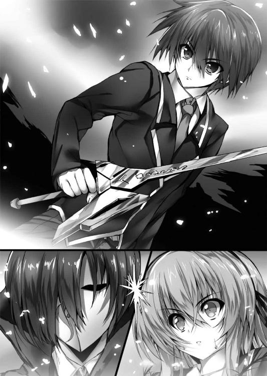
あとに残ったのは青い光に戻って消えていく茨の雨と、大地を大きく抉った光の爪痕だ。
「すごい、わたしの炎でも焼き尽くせなかったあの茨をたったの一撃で......」
思わず漏れたような少女の呟き。だがそれ以上に呆然としているのは直輝自身だ。自分でしたことながら、茨は弾け飛んで地面は抉れて、もうワケが分からない。
けれどそんな動揺を気取られないように押し隠して、直輝は仮面の男を睨む。
「今度は外さない。今のを自分の体に食らいたくなかったら......雪乃を元に戻せ！」
「......威勢のいいことですね。その割には剣を持つ手が震えているようですが？」
「っ!? そんなこと、ない！ 俺は本気だぞ!?」
「感情の高ぶりで偶発的に偽典の威力が増すのはよくあることです。大きな一撃を放って我に返った今の君に、もう一度同じことが出来るでしょうか？ 試して頂いても一向に構いませんが、まあ......そうは言っても『世界を規定せし書』か」
右肩を押さえたキルケゴールは逡巡するようなわずかな間を置き、唐突にトンと背後へ飛んだ。その身は外套を揺らしながら一瞬で林の奥へと消えていく。
「な!? ま、待て......っ！」
「一つ貸しにしておきましょう。新たなる幻想偽典の保持者、プラトン君。私としては世俗のつまらぬしがらみなどに捕らわれず、在るがまま伏して絶望することをお勧めしますよ」
「待てよ！ 雪乃を、雪乃を目覚めさせ──」
叫びながら駆け出した瞬間、ぐらっと視界が揺らいだ。踏み止まろうとした足が空回って地面が近づく。
「キミ、大丈夫!?」
痛みを覚悟して目を閉じた直後、誰かに抱き留められた。ふわりと舞った柔らかな香りが鼻孔をくすぐる。
『幻想偽典に基子情報の複写をされたことによる反動だ。加えていきなりの偽訳解放とあの斬撃。特保からの補助もなしに無茶をすればこうなるのは必然だ』
「冷静に言ってないでよ！ ねえ、キミ、しっかりして！」
意識が朦朧としてくる。たぶん支えてくれてるのは、助けてくれたあの少女だと思う。
「......あなたは、大丈夫、でした......？」
「へ、わたし？ わたしはほら偽典を使ってる時は不死身だから......あ、ねえ！」
「......あ、りが......と......う」
剣を持っていたはずの右手がふいに軽くなった。同時に意識が完全に落ちる。
その前にちゃんとお礼を言えたかどうかは、分からない。
＊ ＊ ＊
気を失った少年を正面から抱き留めたまま、織絵は小さく苦笑した。
「ありがとう、だって。とうとう切り札を使わなきゃいけないかもってところで間一髪助けてもらったのは、わたしの方なのに」
『まったくだ。さすがの妾も肝を冷やしたぞ。織絵の判断は時に蛮勇に過ぎる』
「失礼な。わたしだって別に嬉々としてやりたかったわけじゃないよ......本当に」
織絵の手がぽんぽん、と少年の背中を叩く。
「だからさ、キミが誰だかまだ知らないけど......こちらこそ、ありがとう」
二章 ─日常／温室─
都心からほどほどに離れた太平洋側の地方都市・白峰市の一角に私立リセリア学園日本校はある。山一つを切り崩して高台状にした広大な敷地には、幼等部から大学部まで一貫した教育機関が取り揃えられており、毎年四月にはその敷地の広さと雑多さから道に迷う新入生が多発し、対策本部まで設置されるほどだ。
その経営母体はヨーロッパ南東を本拠地とする国際的教育機関、リセリア財団である。
学園内は幼等部まで含めてほぼ完全な全寮制を敷いており、まだ物心つくかどうかの幼い子供を親元から離すことに時たま世間的に議論が起こるものの、世界中に姉妹校がある事実と海外に強いパイプやコネクションが存在することから、『国際的に特化した教育を施す名門』として毎年の受験者の数は増加傾向にある。
対外的にはそういう選ばれた者の学び舎のようなイメージの学園だが、実際に入学してみるとそんな雰囲気はまるでない。野心と向上心むき出しのエリートというよりは、なぜ自分が受かったのか分からん、というような至って普通の生徒たちが大半だ。
事実、直輝などはそこそこ都会な場所にあって寮があるから選んだだけで、実は試験も面接も当日まさかの風邪をひいて壊滅的だったのに、なぜか受かってここにいる。合否において学園の選抜基準の謎さ加減が入学当初の新入生たちが口にする最初の話題だった。
そんな名門という肩書きとは程遠い平凡な生徒たちが在籍するリセリア学園高等部普通科一年四組の教室には、昨日までと同じ穏やかな日常が流れている。騒がしい喧騒と、徐々に高校生活に慣れてきたことによる弛緩した空気がない混ぜになった、いつもの雰囲気。
そのなかで直輝は一限から四限までの授業を頭の整理に費やしていた。
今朝、直輝は制服姿のまま男子寮の自室のベッドで目を覚ました。
一瞬、昨夜のことは全部が夢だったのかと思ったが、しかしシワだらけになったブレザーとシャツには擦ったような錆がついていて、少なくとも排水管を使って男子寮から出たところまでは間違いなく現実なのだ。
けれど、いつの間にどうやって自分が部屋に帰ってきたのかわからない。ルームメイトがいれば何か気づいてくれたかもしれないのに、幸か不幸か今の直輝は二人部屋を一人で使っている。入学当初は夏生相手に自分のクジ運を誇ったものだが、今となってはその引きの良さがただただ憎い。
替えの制服を着て朝のうちに昨日の現場にも行ってみた。昨夜は闇の底のように感じた林も陽が出ていると驚くほど明るい。けれど、昨日の一連の出来事を示すようなものは綺麗さっぱり何もなかった。キルケゴールと呼ばれたあの仮面の男が放った茨や、他ならぬ自分がやったあの剣の一撃による地面の抉れすら、その痕跡が跡形もなかったのだ。
そして、あの時決死の覚悟で手に入れたはずの本もどこにもなかった。助けてくれたあの少女が持っていってしまったのか、それともやはり本当にすべて夢だったということなのか。
「プラトンの、『イデアの片翼』だったっけ......」
左手で机に頬杖をつき、あの時本を──そして剣を掴んでいた右手を見ながら直輝は呟く。
剣を振り下ろした時は無我夢中だったとしても、その前、自分の何もかもをあの本に吸い尽くされたような感触は生々しく残っていた。まるで腹の底や骨の髄、あるんだとしたら魂の形とかまで丸裸にされたようなあの感触だけでも、昨夜のことが夢じゃないと言える気がした。
「でも、なんの証拠もないんだよな......」
盛大にため息をついて直輝は机に突っ伏す。午前中いっぱい考えたがやはり結論はそこに行き着いてしまう。
「せめてあの人がどこの誰かってことが分かれば......」
机に頭を擦り付けたまま、自分を助けてくれた少女のことを思い出す。
緩くウェイブのかかった髪にはっとするほどの美貌。髪の色は途中から黄金になっていたが、呪いの白い本を使う前は赤みがかった色だった。格好はウチの学園の制服で、リボンは二年生のもの。気を失った前後の記憶はおぼろげだが、倒れかけた自分を支えてくれたのはきっと彼女だと思う。あの時に鼻をくすぐった柔らかな匂いが、胸の片隅にずっと残っている。
そんなことを考えていると、ふいに頭の上から声が掛かった。
「ど、どうした直輝......。じっと自分の右手を見つめてると思ったら、突然机に崩れ落ちたりして......あまりに彼女が出来る見込みがなさ過ぎて世を儚んだか？ 大丈夫だ、直輝！ オケラにだってミジンコにだって直輝にだって明日はあるさ！」
「いやいやいや、夏生のなかで俺って虫と同レベルなのか？ そこまで励まされると逆にすごく不安になってくる......」
顔を上げると、友人の木坂夏生が心配半分の呆れ半分といった調子でこちらを見ていた。そのまま前の席の椅子に跨るように腰かける。
「いやだって右手が恋人って顔してたぞ？ もう別れて新たな人生を歩みたいのに体の関係がよすぎて別れられないっ、みたいなそんな顔」
「どんな顔だよ!? まったく、人聞き悪いなぁ......」
夏生は高等部から学園に入学した直輝と違って中等部からのエスカレーター組だ。愛嬌のある顔立ちと物腰でちょっとした学園の情報通でもある。兄の世話を焼こうとする雪乃が入学時から何かと目立っていたので、学園内の騒ぎに敏い夏生と渦中の直輝の間も自然に近くなっていた。
「人の学園生活を勝手に無残なものにしないでくれ。俺だってもう少し未来に希望を持ちたいよ」
「だからそのためには直輝はもっと自分からアグレッシブに行かないとダメなんだって。黙って待ってるだけじゃ可愛い女子はゲット出来ないぞ？ ただでさえ直輝には雪乃ちゃんっていう万能型の妹がいて......って、悪い、配慮がなかった」
バツの悪そうな顔で夏生が口を閉じる。雪乃の現状は彼も知るところだ。
「いや、いいよ。夏生がそうやって明るくしてくれてると、俺も助かる」
ふっと直輝は小さく息をはいた。確かに黙って考えているのはこの辺にした方がいい。雪乃のことを考えれば、わずかな手掛かりでも今はとにかく動くべきだ。
「夏生、ちょっと訊いていいか？ 俺、会いたい人がいるんだ」
直輝は昨日会った少女の外見──呪いの本を使う前の方──を説明する。情報通の夏生なら何か心当たりがあるかもしれない。
「んー、すごい美人だってことと髪形だけじゃあさすがになぁ。わりとこの学園って可愛い子が多いんだぞ？」
「う......確かに情報が少なすぎるかもしれないけど。あっ、そうだ！ もう一つあった」
「ん、どんな特徴よ？」
「すごくいい匂いがするんだ」
「直輝......」
友人は大変気の毒そうな顔になった。
「いや、待った、ごめん違う、今のは俺が間違えた！」
「いいんだ、友よ。お前の飢餓感がここまで来てることを分かってやれなかった俺が悪い。これさ、俺が兄貴からかっぱらってきた秘蔵本。これで右手の恋人と素敵な夜を過ごしてくれ」
「いらないよ！ っていうか、なんでそんなものを教室にまで持ってきてんだ!?」
Ａ４サイズの謎の紙袋を無理やりに手渡された。いらんと言っても後生だから貰ってくれの一点張りである。そのやり取りが次第に教室中の視線を集め始め、とりあえず受け取っておいて放課後にでも夏生の机にそっと戻しとこう、と直輝は諦める。
「そうだ、夏生。もう一個だけ特徴あったかも。その人......腹話術？ みたいなのを使うかも」
「はあ？ 腹話術？」
「ああ、たぶん」
あまりちゃんと覚えてるわけではないが、なんとなく一人二役のような、そんなおかしな喋り方をしていた気がするのだ。腹話術というか二重人格というか、とにかくそんな感じだった気がする。
「ああ、それなら......一人だけ該当するなぁ」
「本当か!? 誰？ それって夏生の知り合いの人？」
「いや知り合いっていうか......むしろ、直輝こそ知らないのか？ 高校からの外部組だからってそろそろ入学から一か月も経つんだぞ？」
「......？」
直輝が首を傾げると、やっぱ知らないのか、と夏生はやや呆れ気味な顔をした。いいか、と間を置いて夏生が視線で窓の外を示した。
そこから見えるのは、空にも届かんばかりに立つ学園の時計塔だ。
あの場所を使っているのは確か......。
「生徒会？」
「そ、我らがリセリア学園生徒会執行部の花、二年の弓川織絵先輩。可愛い子揃いのこの学園でさらに美女ばっかりの生徒会にいながら、そっからさらに頭三つ分ぐらい飛び抜けた全男子憧れの的。入学当初からあらゆる有望イケメンが告白しまくるも軒並み玉砕に撃沈っていう才女だ。まあ、俺ら凡人には縁のない人だよ」
「おりえ、って名前なのか？ その先輩......」
一応言ってみたぐらいの感じで夏生は手を振るが、直輝は眉間に皺を寄せて黙り込んだ。
確かあの人が腹話術をしている時にそんな名前を呟いていた気がする。
真剣に考え込む直輝に夏生が「おいおい」という顔をする。さすがにそこはありえないだろう、と言わんばかりだった。
「あのさ、夏生」
どこに行ったらその織絵先輩に会える？ と訊こうとして直輝が顔を上げた時だった。
教室の後ろの方がざわっとどよめいた。昼時なのである程度の騒がしさは常にある。けれどそれとは違う感じの、まるで唐突に有名人でも現れたかのようなどよめきだった。
「よかったぁ、教室にいたんだね！ 食堂の方だったら人が多くて見つけられないところだったよっ」
背中の方からどこか聞き覚えのある声がして、ポンと肩を叩かれた。椅子に跨っている夏生がこちらの背後を見てあんぐりと大口を開けている。
まさか、と思いながら振り向く。そこに、渦中の人がいた。
「ゆ、ゆみかわ......おり、え......先輩？」
「お？ もうわたしの名前知っててくれてるんだね。ふふ、ありがとっ。キミは......日比野直輝クン、だよね？」
間違いなかった。自分を助けてくれたあの人だ。
こうして明るい教室で改めてその姿を見ると、やはり夏生が言っていた評判を一も二もなく納得させられるような圧倒的な美人だった。
そして、なぜだかやたらと距離が近い。息が掛かるほどとは言わないが、教室でここまで接近して話をする男女を直輝は長年の学生生活でも見たことがない。
硬直して口を開けずにいると、織絵先輩はこちらの顔を覗き込んだまま猫のように首を傾げた。
「あれ？ ひょっとして、名前間違ってた？」
「......っ、あ、いえ！ はい、そうです、俺は日比野直輝です！」
ガタンと席から立ち上がって直立不動で返事をする。距離が近すぎるので若干エビ反り気味である。
「ん、よかった。失礼なことしちゃったかと思って焦っちゃったよ。それじゃあ、直輝クン、行こっか」
「え？ 行くって、ど、どこにですか？」
「約束したでしょ？ 一緒にお昼食べようって。わたしの秘密の場所に案内したげる」
ざわっとまわりがまたどよめいて、刺すような視線が教室中から直輝に向けられる。
た、確かにそんなことを言われた気がするけど、あれは約束というより織絵先輩が一方的に言ってただけのような......という記憶の掘り起こし作業は見事に中断される。
「さあ、急いで！ 貴重なお昼休みが終わっちゃうよっ」
織絵先輩がこちらの手を取って駆け出した。その手の柔らかさにどきりとする。自慢ではないが、直輝は妹以外の同年代の異性に手を握られたことなどほとんどない。
生徒会の人が教室走って大丈夫なんですか、と言う間もなかった。
クラスメートたちの呆気に取られた視線と彼女の手の柔らかさに真っ赤になりながら、直輝は学園の全男子憧れの的と言われる美少女の先輩に連れ去られる。
一年生の普通科校舎を出て銀杏並木通りを西門側に向かう。何度か曲がったり校舎の間の路地を入って、辿り着いたのは小さな温室だった。オリエンテーションの時に園芸部の施設として似たようなものを紹介された記憶があるが、それとはまた別のものらしい。
「えへへ、どう？ 本当は使われなくて閉鎖されてた場所なんだけどね、会長にお願いしてわたしの管理にさせてもらったんだ。ここなら誰も来ないから、ゆっくりご飯が食べられるでしょう？」
「それって職権乱用なんじゃ......」
「ノンノン、役得ってやつだよ。頑張って働いてる人はちょっとくらい甘い汁を吸ってもよいのです」
ぼ、暴論だなぁ......と思いつつ、鍵を開けてくれた織絵先輩に「お、お邪魔します」と断って温室のなかに入る。
直輝の両手には途中の売店で買った二人分のパンがある。ついでにテンパってたせいでなぜか一緒に持ってきてしまった夏生の秘蔵本も。......こっちは万に一つも手離すことが出来ない。
「そこにテーブルあるから座って待ってて。今、お茶淹れてあげるね」
「温室にお茶を淹れられる設備まであるんですか？」
「んー、あったらカッコいいんだけど、残念、ただのポットとインスタントティーなのです。ミルクと砂糖は？」
「あ、大丈夫です。どうかお構いなく......」
温室は実際長い間放置されていたものらしく、ちょっとしたジャングルのようになっていた。一応、人が通るところはブロックで仕切られて舗装されているが、それ以外の場所は木が生い茂っていて外の景色さえ見えない。
その舗装された道の真ん中にテラス用のテーブルと椅子のセットがあり、直輝は言われた通りにその一角に腰を下ろした。少し待つとティーカップを二つ持った織絵先輩がきて、向かいに座った。
「さて、じゃあ何からお話ししようか。あ、食べながらにしようね。わたしはともかく直輝クンをサボらせちゃ悪いし」
「えっと......」
下の名前を君付けで呼ばれることにむず痒さを感じつつ、直輝はまず一番最初に確認せねばならないことを口にした。
「夢じゃなかったんですよね、昨日のこと......」
「夢だと思った？」
チョココロネのビニールを外しながら、織絵先輩は何がそんなに楽しいのか、にこにこと笑っている。
「それは、もちろん思いましたよ。昨日の痕跡は何もないし、気づいたらベッドの上ですし、あの本も気づいたらどこにもないし。あの、織絵先輩......が俺をベッドまで運んでくれたんですか？」
「うん、そうだよ。制服の内ポケットにキミの生徒手帳があったから。あ、ごめんね、勝手に見ちゃって」
「あ、いえ、それは全然構わないですけど......俺、重かったんじゃないですか？ しかも、三階ですし、どうやって......」
「まあ、ちょちょいとジャンプして」
「ジャンプして!?」
「うん、お姫様だっこで」
「お姫様だっこで!?」
映画のヒロインよろしく先輩に抱えられて宙を舞っている自分を想像して死にたくなった。もっと突っ込むべきところがたくさんある気がするが、思春期の羞恥心がそれに勝った。
「そんなに驚かなくても身体強化はわりと多い付加効果だから、たぶんキミも出来るようになると思うよ？」
「俺にも......？」
「うん、キミにも」
小さくかじったチョココロネを織絵先輩は紅茶で流し込む。
「キミも獲得したあの本のことをわたしたちはこう呼んでるの──幻想偽典、って」
「幻想偽典......」
「そう。略称で偽典って呼ぶことも多いけどね。そしてそれは──」
直輝の胸に先輩がトンとその細い指を当てる。びくっと思わず肩が跳ねる。
「別になくなったわけじゃないの。もちろんわたしが持ってるわけでもない。あれは──キミの『イデアの片翼』は今もここにあるわ」
「ここって......俺のなかに、ってことですか？」
「そう、正解。キミは飲み込みが早いね、いい生徒だ」
にこっと笑った先輩の手が胸から離れ、こともあろうか、直輝の頭を撫でてきた。
「ちょっ!?」
思わず真っ赤になって仰け反った。後ろ向きに椅子ごと倒れそうになって、慌ててバランスをとる。目の前の先輩は頭を撫でた姿勢のままで不思議そうな顔をする。
「あれ？ 嫌だった？」
「いえ、その、嫌っていう以前に、び、びっくりして......っ。お、織絵先輩って全体的に距離が近くないですか？」
「え、そうかなぁ。でもほら、直輝クンは後輩だし、わたし先輩だし。可愛い後輩は可愛がりたいじゃない？」
同意を求めるような口ぶりなのに、なんだか天然で有無を言わせないような笑顔だった。
「あのそれで、俺のなかにあの本......幻想偽典があるっていうのは、どういうことなんです？」
「うん、それについては直に見てもらった方が早いね」
そう言うと紙ナプキンで指を拭き、先輩はブレザーの胸ポケットから一冊の本を取り出した。どこにでもありそうな普通の文庫本だ。
「一度自分に溶け込んだ幻想偽典は想念──意味と情報の総体に変化するから、現界させるには同じように『本』の形をした媒体が必要なの。本の形をしていれば雑誌でも文庫本でも辞書でも大丈夫だよ。重要なのは自分が明確な意志とイメージを持つこと。慣れないうちは自分の偽典と同じくらいの形や大きさの方がやりやすいかな？」
そして織絵先輩は「見ててね」と言って文庫本を胸の高さに掲げ、言葉を紡いだ。
「──偽訳再現」
言葉と同時に赤い光が弾けた。昨日のように眩いものではなく、手持ち花火程度の光だ。
だがその弾けた赤色の光が収まった時、そこにあったのは文庫本ではなく、まぎれもなく昨夜に織絵先輩が持っていたのと同じ本──いや、幻想偽典だった。
現れた偽典の表紙が直輝へと向けられる。
「これがわたしの幻想偽典、ゲーテの『ファウスト』。さあ、直輝クンもやってみて」
「お、俺にも出来るんですか......？」
「百聞は一見にしかず、ってね。大丈夫、自信を持って」
「は、はい」
そう言われて、直輝は食べかけの焼きそばパンをテーブルに置き......はたと気づく。
「あの、先輩。俺、その......媒体？ に出来るような本を持ってないんですけど」
「んん？ その紙袋は違うの？」
「え？」
先輩が目で示した方を向く。そこにあるのは、夏生御用達の秘蔵本が入った紙袋。よく見ればご丁寧に『白峰書店』というロゴの入った本屋の袋だった。脳内で絶叫。
「てっきり中身が本だと思ってここまできちゃったんだけど、ひょっとして違ってた？」
「え、いや、なんと申しますか......っ、確かに中身は本だとは思うんですけど......っ！」
猛烈な勢いで冷や汗が滴る。この紙袋の中身によっては人としての尊厳まで奪われかねない。
「あの......先輩、後ろ向いてもらっててもいいですか？」
「へ？ どうして？」
「なんていうか、恥ずかしいので......」
「あはは、面白いね、直輝クンって。いいよ。はい、これでいい？」
「すみません、ありがとうございます」
頷き一つで頼みを聞いてくれた織絵先輩に感謝しつつ、直輝自身も背中を向ける。これでなんとか中身を見られずに済むだろう。色んな意味でドキドキしながら本を袋から出す。
「うわぁ......」
思わず声が出た。先輩に見られなくて本当によかった。そんな一品である。
眩暈を感じつつも、気を取り直して深呼吸。
本を両手に持ち、意識を集中する。不思議なほどイメージは明確に頭に浮かんだ。先輩の言っていた、自分のなかに溶け込んでいる、という言葉に実感が湧く。
そして、先ほど先輩がして見せてくれたのと同様の言葉を紡いだ。
「──偽訳再現」
昨夜と同じ七色の輝きが爆ぜた。だが先輩のようにすぐに落ち着くことがなく、光がスパークした。おうわっ、と声が出る。
「直輝クン、大丈夫？」
「へ、平気です！ 平気なのでこっちは見ずにいて下さい！」
秘蔵本と偽典がダブって見える光を隠すようにしながら直輝は叫んだ。ぱっと見だと後光の差すエロ本である。恐ろしい。力ずくで脳内から昨夜の偽典のイメージを引っ張り出し、どうやら触れるようなので力任せに両手で光を抑え込む。
「ええい、言うことを聞けえぇぇっ！」
パンッとほぼ物理的な要因で七色の光が弾ける。
そして閉じた手を恐る恐る離すと......そこに昨夜も見た題字と著者名が確かにあった。
プラトン『イデアの片翼』。間違いなくそう刻まれている。
「やった！ 出来ました、織絵先輩っ、俺にも偽典を出せました！」
「どこどこ？ お、本当だ。やったね、直輝クン」
我ながらテンションが上がっていたのか、先輩が差し出してくれた手に呼吸を合わせてパンッとハイタッチをする。......した後で急に恥ずかしくなって、ゴホンと咳払いして椅子に座り直した。
「......」
改めて、自分の手に出現した幻想偽典を見つめる。
やはり昨日のことは夢ではなかったのだ。普通に考えたら混乱しそうな事態だが、手のなかの偽典を見ていると戸惑いを上回るような実感が湧き起こってくる。目の前のことは確かに現実だと、偽典が溶け込んだせいで頭より先に魂が理解している、そんな感じだ。
「やっぱりプラトンなんだね......それに光も七色だった」
直輝の幻想偽典の著者名部分をなぞりながら先輩が呟く。
「あの、何かマズいんですか、俺の幻想偽典って......？」
「あ、ううん、そうじゃないの。えっとね......いや、この話はまたあとにしようか。まずは幻想偽典ってものがなんなのか、ってことを説明した方がいいと思うの」
小さく首を振って先輩も椅子に座り直した。なんとなく気になったが、確かにまだ直輝には分からないことだらけだ。
「俺も訊きたかったんですけど、これってつまりなんなんでしょうか？」
「力ある書って意味では魔道書って感覚が近いかな。実際そういうのに近い偽典も存在するし」
「はあ、魔道書......ですか」
「うん、ただし明確な定義としては『歴史に刻まれた大著に人々の想念を編み込んで創られた、偽りの書』って言われてる」
「歴史に刻まれた大著......って、つまり有名な本ってことですか？ ってことは、実際に存在する本がベースになってると？」
「うん。たとえばわたしの『ファウスト』は十九世紀のドイツの文人ゲーテが書いたものだし、直輝クンのプラトンも紀元前に実在した古代ギリシャの哲学者なんだよ」
「あ、そうなんですか。プラトンってあんまり聞いたことがないですけど......」
ソクラテスとかならなんとなく聞き覚えがあるんだけど......マイナーな人なのかな？ と思いつつ直輝は偽典の表紙をなぞる。
「幻想偽典を構成する要素は三つ。『ベースとなる大著』、わたしや直輝クンのような持ち主──『保持者の精神性』、そこに大元の力となる『学園の磁場』が加わってそれぞれの偽典は現界するの。そうして手にした偽典によってわたしたちは各々の偽典固有の力を行使することが出来る。どんな大著が引き出されるかは保持者の精神性に左右されるみたい。保持者の願いや欲望とかね」
「ね、願いや欲望ってなんかストレートですね」
「うん、だから人によっては自分の偽典を知られるのを嫌がる人もいるよ。内容からその人の人間性を邪推することも出来ちゃうし」
「え......っ」
改めて直輝は自分の偽典を凝視する。
まったく知らない本なのに自分のことを表したものだと言われると、ひどく奇妙な感じだった。いまだ閉じたままのページを開こうとして......しかしビビッて開けない。
「あの、その定義によれば、この本も俺が知らないだけで歴史に残る有名な本なんですよね？ 先輩はこの『イデアの片翼』がどんな内容なのか知ってるんですか？」
「ふふ、さあてどうかなぁ？」
テーブルに頬杖をついて先輩がからかうような視線で見つめてくる。頬にしだれている前髪が艶っぽくて、いろんな意味で落ち着かない。視線をさ迷わせていると、先輩がぷっと噴き出した。
「そんなに心配しないでいいよ。イジメてごめんね？ 偽典はね、原典である大著と全部が一緒ってわけじゃないの」
「え、そうなんですか？」
「現界する時に保持者の精神性に引きずられて、その中身は少なからず改変を受けてるんだ。ものによっては原典と比べて主張や結末がねじ曲がってるケースもあるよ。『偽りの典』で『偽典』って略称で呼ばれる理由がそれね」
つまり人としての大枠のようなものは偽典の銘で推測されてしまうが、実際のところは偽典自体を読まれない限り知られることはない、ということらしい。それなら普段の人間関係と同じか、と直輝は少しほっとする。
「でも、こんなものが存在するなんて実際に見たあとでも不思議ですね......」
今の説明に沿うなら昨日見た先輩の不死性や炎も彼女の持つ『ファウスト』の幻想偽典によるものなのだろう。実感はあったとしても、頭で納得するのはやはりまだ難しい。
「そうだね、わたしも初めてこの『ファウスト』を手に入れた時はしばらく信じられなかった。ひょっとしたら幻想偽典の存在自体がある種の奇跡なのかもしれないね。さっき少し話した学園の磁場のことなんだけど、霊脈とか地脈って言葉があるでしょ？ この学園ってそういう『力の塊』みたいなものが地下にあるの。幻想偽典を創り出す力の大元もそこからきてるんだ」
先輩は話しながらチョコレート入りの蒸しパンの包みを開ける。パクリと一口。ん～っ、とひどく幸せそうな顔をする。どうやら甘いものが好きみたいだ。
「その大元から創られる幻想偽典を管理・運用するために建てられたのがこの学園ってワケ。わたしはちゃんと調べたことはないけど、かなり歴史があるみたい」
「っていうことは幻想偽典に関することを学園も知ってるってことですか？」
「んー、その言い方は逆になるかな？ 初めに偽典を有するこの学園があって、そして保持者のわたしたちがいるってこと」
「はぁ......」
なんだか話が大きくなってきて、思わず気の抜けた声が出た。偽典が学園ぐるみということにも驚いたが、もう一つ気になることがあった。
「先輩、地下に力の塊みたいなものがあるってさっき言いましたけど、その地下って......噂の大聖堂のことですか？」
学園の中央記念図書館には地下の大聖堂へ通じる扉があり、そこには人の欲望を叶える真っ白な呪いの本が安置されている。そもそも直輝は昨夜、その噂によってダメ元のつもりで男子寮を抜け出したのだ。
「あ、やっぱり知ってた？ うん、その通り。地下の大聖堂ね、想像以上に立派だから見たらきっとびっくりするよ。滅多に入れないんだけど、機会があったら今度案内してあげるね」
事も無げに先輩は頷いた。
噂で呪いの本と言われていたものが幻想偽典のことを指すのだろうことは今ならわかる。だが、まさか大聖堂の噂まで真実だとは。しかしそれなら......。
「ひょっとして、集団自殺未遂とか実験棟の倒壊なんかの噂も......」
学園に流れる噂の続きだ。集団自殺未遂を始め、大学部の実験棟の倒壊やため池の干上がり、日食のような怪奇現象など、この学園には様々な異常が起こると。そしてそれらにはすべて呪いの白い本が関わっていると。直輝の質問に先輩は初めてその表情を曇らせる。
「事実だよ。どれも幻想偽典がきっかけで起こった事件。なかにはわたしが直接関わったものもある。直輝クンも直に触れたように偽典はとても大きな力だからね。今、噂として流れてるのはみんな過去の事件の名残みたいなものかな」
「事件......」
我知らず、直輝はその単語を反芻していた。そして硬くなった表情で続ける。
「先輩、じゃあ今学園で起こってる出来事......生徒たちが次々に眠り病に堕ちてるこの状況も、同じように幻想偽典による事件って考えていいんですよね？」
直輝の変化を敏感に感じ取ったのか、先輩の口調も明るさより真剣味の割合が濃くなる。
「そうだね。今月に入ってから......正確には四月の二週目から複数の生徒たちが昏睡状態になったって報告がきてる。そしてその犯人は今わたしが追っているあの仮面の男、キルケゴールだよ」
どくん、と胸が強く鼓動する。状況から推測するだけだった事柄が今、事実として確定した。すなわち、あのキルケゴールこそが雪乃を目覚めなくさせた元凶である、と。
「確認したいんですけど、先輩は......あいつを止める側の人ってことですか？」
「うん。この学園はその創設時から偽典と共にあるからね。偽典を悪用する人間を止めるための組織もちゃんと設置されてるの。わたしはそこの人間で、幻想偽典の存在を知らない一般の生徒たちを守るために動いているんだ」
「なら......」
直輝はテーブルの先にいる織絵先輩へとがばっと頭を下げた。深く息を吸って、一息に言う。
「俺も一緒に戦わせて下さい！ 俺はあいつを捕まえて、みんなを目覚めさせる方法を知らなきゃいけないんです！」
「やっぱり......そうなるよね」
浅く息をはき、織絵先輩は困ったように眉を寄せる。
「昨日はちゃんと聞く余裕もなかったけど、直輝クンは誰か身近な人が眠り病に堕とされてしまってる、ってことだよね......？」
「はい......。同じ一年の青柳雪乃って言います」
「青柳雪乃ちゃん......か。わたしが所持してるリストにはまだ名前がなかったかな。直輝クンの大切な人？」
「はい、そうです」
「そっか......」
雪乃は大切な妹だ。その問いに答えることに一瞬の間も必要ない。
直輝の返事を聞いた先輩は難しい顔のまま、しかしきっぱりと言った。
「それでも、ダメ。直輝クンをキルケゴールとの戦いに同行させることは出来ないよ」
「何でですか!?」
ほとんど反射的に声を挙げて身を乗り出した。対して先輩の方は冷静にこちらの目を見据えてくる。
「昨夜、直輝クンも実際に体験したように偽典の保持者同士の戦いはとても危険なの。なんの訓練も受けてないキミをそこに連れていくことは出来ないわ」
「だったらどうして先輩は偽典のことを俺に教えてくれたんです!? あのまま時間が経てば俺も昨夜のことは夢だって思い込んだかもしれない。でもそうさせずに教えてくれたのは、俺にも先輩みたいに戦う力があるからじゃないんですか!?」
「それは違うよ。むしろ期待させちゃったなら謝る。直輝クンにきちんと事情を説明したのは、キミが幻想偽典の保持者になったことと、それからキミを保護をする必要があるからなの」
「俺を、保護......？」
「そう。不運にもキルケゴールと出会ってしまったキミは、今後、奴に狙われる可能性が高い。だからわたしが責任を持って保護をする必要がある。それをきちんと説明して、理解してもらうために今日ここにきてもらったの」
「ほ、保護なんて必要ありません！ 俺はあいつと戦います！ 出来ます、やらせて下さいっ、俺だって......っ」
「──うぬぼれないで」
鋭い刃物のように先輩の一言が直輝の言葉を断ち切った。先程までとは打って変わった鋭い雰囲気に気圧される。
「キルケゴールはキミが考えてる以上に危険な人物よ。その偽典の強力さはもちろん、保持者本人も狡猾で頭が切れる。昨夜のあの男の言葉じゃないけど、昨日今日に偽典を手に入れたばかりのキミじゃとてもじゃないけど太刀打ち出来る道理がない」
「でも、俺はあいつに一撃入れました！ それは戦えるってことでしょう!?」
「じゃあ、出してみてくれる？ キミがあの時『イデアの片翼』から引き出した結晶の剣。それを今この場で顕現させることが出来たなら、多少は考えてみてもいいよ」
「......やってみます。昨夜だって出来たんだ。今ここで出せないわけがない」
そう言うと直輝は立ち上がり、淡く七色に光る自らの幻想偽典を宙に掲げた。あの時は無我夢中だったが本を偽典にすることは出来たんだ、剣を引き出すことだって出来るはず。そう考えてイメージを浮かべてみたが......。
「何も起きない？ な、なんで？」
手のなかにある『イデアの片翼』は偽典の状態のまま、一向に変化する兆しがない。
「やっぱり、そうじゃないかと思ったんだ」
その呟きに目を向けると、先輩は多少表情を和らげてこちらを見ていた。
「普通、偽典を各々の能力を発現出来る形......偽訳解放って言うんだけど、そこに至れるまでには学園の特保──特殊環境保持委員会って組織で相応の時間をかけて訓練するものなの。だから偶然キミが昨夜偽訳解放に至って剣を顕現させたのだとしても、次も同じように出来るとは限らない......わたしはそう予想してたんだ」
「......じゃあ、今の俺にはキルケゴールと戦う力がないってことですか......？」
「残念だろうけど、そういうことになるね」
「その、特保ってところで訓練してもらうことは!?」
「それぞれの保持者自体、本来は特保が選別するものなの。そういう意味でキミはイレギュラーだから、特別な承認が必要になる。それもちょっと事情があってすぐに出来ることじゃないんだ」
「そんな......」
無力感がじわじわと胸を締めつけていく。偽典を持ったままの腕が垂れ下がる。きつく噛みしめた唇から血が滲みかけた......その時だ。
ふいに声が響いた。
「後輩をそう苛めてやるな、織絵。妾はこの小僧、嫌いではないぞ。キルケゴールの討伐、手伝わせてやればよかろう」
突然の声に、直輝はそれを発した主を探す。すると意表を突くように織絵先輩のブレザーの外ポケットから何かがぽんっと飛び出した。
「ここだ、ここ。妾の見目麗しい姿、とくとその目で見るがよい」
「へっ？」
厳かな喋り方をするその声の主の姿を視界に納め、直輝は思考が停止した。
なんというか、ヒヨコだった。
手のひらサイズの丸っこいヒヨコだ。ほとんどマリモのように丸っこい。瞳はつぶらでお尻のところだけが可愛らしくピョコンとはねている。
「ヒ、ヒヨコ？ ヒヨコが喋ってる!?」
「うむ、いかにも妾はヒヨコだ。しかしただのヒヨコではないぞ？ とても高貴で耽美なヒヨコだ！」
「すみません、先輩。この生物は一体......？」
「ああ、うん、紹介するね。この子はメフィっていってわたしの相棒。『ファウスト』として顕現したわたしの幻想偽典の一部なの」
ひょこひょこと飛び跳ねて先輩の肩に移ったヒヨコは小さな羽をぱたぱたと揺らした。
「幻想偽典が起こす作用は主に合一・顕現・現象のいずれかあるいはそれらの複合として現れることが多い。妾の場合は『ファウスト』の力の一部が形として顕現したものと考えればよい。理解したか、小僧？」
額にシワを寄せてたっぷり三秒間かけて自分の常識が崩れていくのを受け入れて......なんとか直輝は頷いた。
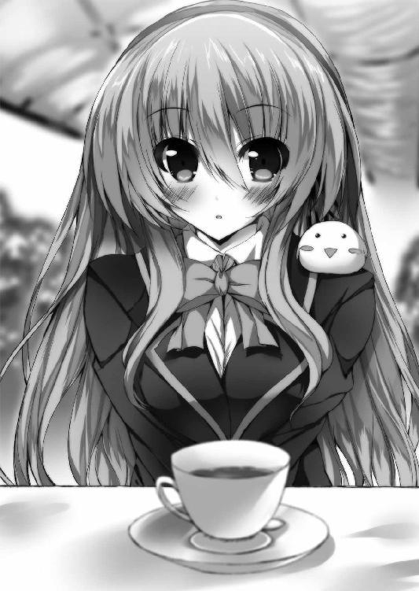
「えっと、あの、はい......目の前にある現実を頑張って飲み込んでみます」
「良かろう。努力とは人の子の成す素晴らしき美徳の一つだ。ちなみに妾のことは敬意を持ってメフィさんと呼ぶことを許すぞ」
「......りょ、了解です、メ、メフィさん」
ファンシーで可愛らしい見た目とそれに反する仰々しい口調に逆らい難いものを感じて、直輝は素直に頭を垂れた。
「あの、メフィさんは普段から織絵先輩のそばにいるんですか？」
「うむ、妾は織絵の想念そのものと深く繋がっていてな。偽典が現界していない状態でも常時顕現していられるのだ」
「普段はわたしのポケットとかに入ってることが多いよ。それ以外はぬいぐるみのフリしてたりとかかな？ たまに会話してる時に人がきて焦ったりするけどね」
「ああ、なるほど......」
夏生に織絵先輩のことを訊いた時、腹話術で引っかかった理由が分かった気がする。
「それでだ、織絵。この小僧も共に戦わせてやれ。偽典の使い方ならば特保に任せずともお前が教えてやればいい。偽典の恐ろしさを誰より熟知しているお前なのだから、教育を間違えることもなかろう？」
「何馬鹿なこと言ってるのよ、メフィ。ふざけないで。直輝クンにそんな危険な真似はさせられません」
「ちょ、ちょっと待って下さいっ。偽典の能力......ええと偽訳解放？ それって特保ってところじゃなくても身に付けられるものなんですか？」
思いも寄らなかったヒヨコ──メフィさんの言葉に思わず直輝は二人の会話に割って入る。藁にもすがるような表情の直輝を目にして、織絵先輩が「余計なこと言わないで」と言いたげにメフィさんへ厳しい視線を送る。しかしヒヨコはそれを気づかぬふりで直輝に向かって羽を振った。
「よく聞け、小僧。偽典の習得に特保が有効なのはアリストテレスの力を活用出来るからだ」
「ア、アリスト......え、なんです？」
「アリストテレスだ。まあ、さっき織絵の言った偽典の大元たる『学園の磁場』のことだと思えばよい。つまり特保での訓練は偽典を構成する三大要素のうち、その大元たる力の補助を意図して得られるため力が引き出しやすい、ということだ。だが逆に言えば、そのメリットがなくとも自力で成し遂げられるなら、我流でも習得は可能と言える。無論、正しき法則を知る導き手は必要だがな」
「導き手......」
呟く直輝とメフィさんが一斉に織絵先輩の方を見る。縋るような、期待するような二つの視線にさらされて、先輩は良心を突かれたように「う......っ」とちょっと怯んだ。
「......だ、ダメダメっ。そんな目で見てもダメなものはダメですっ」
仏心を断ち切るように先輩は首を振り、居住まいを正してから改めてこちらに向き直る。
「直輝クン、メフィに唆されちゃダメだよ。考えてもみて？ いくら雪乃ちゃんを助けるためだからって、キミがキルケゴールに向かっていって怪我でもしたら、きっと雪乃ちゃんは哀しむんじゃないかな？ 大事な人を哀しませるようなことをしたらいけない。だからキミは......」
言葉の途中で、昨夜の先輩の姿が脳裏に蘇り、かっとなった。今までで一番の大声で直輝は叫ぶ。
「それは、先輩だって一緒じゃないですかっ！」
声の大きさに驚いた顔をしつつ、視線の先の先輩は何を言われたのか分からないかのように、きょとんとした。
「え......わ、わたし？」
「そうです、先輩です！ 俺、忘れてないですよっ、先輩だって俺を助けるためにキルケゴールと戦ってあんなに傷だらけになってたじゃないですか！ 体を裂かれて血を流してあんなにボロボロになって、俺が傷ついて雪乃が哀しむなら、先輩があんなふうになって哀しむ人だっているでしょう!?」
「......わ、わたしはいいんだよ！」
直輝につられるようにして、先輩の声も跳ね上がる。
「わたしはそういうふうに生きるって決めてるから！ わたしはすでに道を選んでるの！ それに昨夜見たでしょ？ わたしの『ファウスト』の能力は炎を操ることと、そして偽訳解放中は不死身であること。だからどんなに傷ついたってすぐ治るもの！」
確かに先輩の傷が映像の逆回しのように一瞬で癒えるところを昨夜見た。本人の言う通り、それが先輩の偽典の能力なのだろう。でも、だけど。
「茨に絡めとられた先輩は痛みを感じてました。ひょっとして......傷が治るとしても不死身だとしても、痛いものは痛いし苦しいものは苦しいんじゃないですか!?」
「それも覚悟の上だから、大丈夫だよっ」
「大丈夫じゃないっ、あなたが大丈夫でも俺がっ、俺が見てられないんです！」
「......っ」
心底驚くように織絵先輩は大きく目を見開いた。
逆に直輝は無力感を噛みしめるように顔をそむける。何をどう叫んでも、現状で自分が無力で役立たずな事実は変わらない。こんなのは八つ当たりだ。
昏睡状態になった雪乃には何もしてやれず、傷だらけの先輩に助られた時も逃げるしかなかった。力を手に入れたのかもしれないと思ったら、頼みの偽典は剣に変わるそぶりも見せない。偉そうなことを言っても何も出来ないことは自分が一番分かっている。
──だがそれでも、先輩が傷つくことを良しと出来る理由なんてどこにもない。
黙った二人の代わりに口を開いたのはメフィさんだ。小さな羽の先が先輩の頬を突つく。
「だそうだぞ、織絵？」
「............」
「ついでに現実的な問題を言うのなら、現状、妾とお前だけではもはやキルケゴールを抑えきれん」
メフィさんが肩からテーブルへと舞い降り、直輝の側につくように先輩へ向き直った。
「なれば、賭けてみよう。小僧自身には戦うという強い意志が、そしてその幻想偽典にはプラトンの銘と七色の可能性がある」
先輩の表情が逡巡するように揺らぐ。直輝も頭を下げ、絞り出すようにメフィさんの後に続いた。
「......お願いします、織絵先輩。俺は雪乃を、眠り病に堕とされた人たちを助けたい」
それが直輝の今のすべてだ。だがそんな心情からこぼれ落ちるように、自分でも意識せずもう一言だけ言葉は続いた。
「それから......先輩一人が誰も知らないところで傷つくような戦いは、俺は嫌だ」
初めて織絵先輩の姿をちゃんと見た時の、あの黄金の光景が今でも瞼に焼きついている。それはとても美しいものだったけど、同時にとても哀しい光景だった。
しばらく押し黙っていた先輩は、やがてぽつりと呟いた。
「......そっか、そういえばキミは昨日もそんなこと言って、戦いの場に戻ってきたんだったっけ」
その口調からは今まであった厳しさや鋭さが消えていた。そして先輩はため息と共に苦笑する。
「まったく、しょうがないなぁ」
「......っ、織絵先輩、それじゃあ......っ」
「ここでわたしが断ってもきっとキミは一人で突っ走っちゃうんでしょ？ だったら下手な生兵法で無茶されるより、ちゃんと教えて目の届くところにいてくれた方が安心だもの」
もう一度ため息をついて、先輩は自分の偽典を教本のように脇に抱える。空気を変えるように髪をかき上げて、細い指が直輝に突きつけられた。
「ただし、わたしの命令には絶対服従！ 昨夜みたいな独断専行は言語道断だからね。破ったらお姉さんからのこわーいおしおき。オッケー？」
「はい、問題ありません！ よろしくお願いしますっ」
「ん、了解。わたしは厳しいから覚悟しといてね？ よし、それじゃあ早くご飯を再開しよう。そろそろお昼休み終わっちゃうからね」
にこっと笑って先輩はテーブルに座り直した。
その後、残っていた惣菜パンを片付けつつ、今後の予定などを話し合って昼休みはそれで解散ということになった。
「そうだ、先輩。これってどうしたらいいんですか......？」
温室を出る前に直輝はテーブルの上に置いたままだった『イデアの片翼』を手に取って尋ねた。わずかに本の縁で輝いている七色の光も、今は陽射しにまぎれるくらいに落ち着いている。それでもひとりでに発光する本なんて目立つだろうから、このままにしておくわけにもいかない。
「ああ、それなら簡単。イメージのオンオフだけで偽典状態はすぐに解除出来るよ。本を偽典にするよりずっと楽に出来るはずだから、やってみて。コツは集中を解いてリラックスする感じかな？」
「集中を解いてリラックス......はい、了解です」
言われてみれば確かに先輩と話してる時も、常に頭のどこかに目の前の偽典のことがあって、緊張感が持続していた気がする。自分の一部が外に出ている感じというか......おそらく精神的に繋がっているということなのだろう。
『イデアの片翼』を両手に持って、肩の力を抜くように深く息をはく。イメージのオンオフということなので、元の本に戻るところを脳裏に浮かべてみる。
......ん？ 元の本？ と頭の隅で何かが引っ掛かった。次の瞬間思い当たって、一気に血の気が引く。
「ちょ、ちょっと待って！ ストップストップ、ストッープ!! 止まれぇぇぇぇっ!!」
......が、持ち主の意に反して帯が解けるように七色の光は霧散していった。
一連の出来事のせいで元になった本が何なのかをすっかり忘れていた。一生の不覚である。大失態である。学生生活のトラウマとして一生残るほどの大惨事だった。
偽典の残光で光り輝くその秘蔵本は夏生の嗜好するゲームのノベライズ。
あえてタイトルを挙げるなら『聖処女学園～憧れの先輩からのご褒美は初エッチ♥～』である。いっそ今すぐ殺してくれと直輝は神に願った。
「へえ～、直輝クンってそういうのが好みなんだ～」
「ち、違います、これは友達のっ、友達の本で！」
「なるほどのぉ。活字派とは渋いな、小僧。美学というものが分かっておる」
「だから違うんですって！」
光の速さで背後に隠したが、バッチリ見られていた。ついでにガッツリ誤解もされてる。
「照れない照れない、オトコノコなんだから普通だって。でも、ふ～ん、そっかぁ」
「いえ、ですからっ」
すっごいニヤニヤしている先輩がふっと近くに顔を寄せてきた。ふわりと香る先輩の匂い。そして耳元で囁くように。
「──直輝クンのえっち」
「......っ！」
屈んだ先輩にこんな至近距離でそんなことを言われたら、心臓は止まる。厳密には止まってないが、絶対止まったと思った。織絵先輩は色んな意味で危険すぎる。
......教室に帰ってから夏生に「よりにもよって『年上の先輩モノ』ってどういうことだよぉぉっ!?」と半泣きで詰め寄ったのは言うまでもない。
＊ ＊ ＊
直輝が出ていった後の温室。
そこには真っ赤な顔でテーブルに突っ伏している織絵がいる。頭に乗っているヒヨコが心底愉快そうに羽を揺らした。
「いやまさかあそこで艶本を出してくるとは意外に座興の腕があるのう、あの小僧。時に織絵、お前あの手の本を見たのは初めてではないか？」
「う、ううううるさいなっ、ちょっと放っておいてっ、冷却時間をちょうだい！」
「それだけ耐性がないくせによく小僧の前ではあんなに余裕ぶった態度がとれるものじゃなぁ。ある意味、芸の域に達しておる。しかしよかったな、お前、小僧の趣味にストライクだぞ？」
「そんなストライク嬉しくないよ！ それに直輝クン言ってたじゃない、大切な子がいるって。青柳雪乃ちゃんだっけ？ 恋人がいるのにストライクしたらダメでしょ」
「道ならぬ恋は原典の老学者ファウストの十八番だろう？」
「ばかメフィ、わたしの幻想偽典はそういうところはちゃんと改変されてます！ そんなこと知ってるくせに」
「なあに、頑固なお前が珍しく折れて小僧の船頭役を引き受けたものだからな。お前、あの小僧のこと少し気になっておるだろ？」
「なってません！ わたしは......可愛い後輩を先輩として可愛がってあげたいだけだよ」
「ほお～、まあそういうことにしておくか」
ヒヨコ姿のくせに器用にニヤニヤ笑うメフィにツンとそっぽを向いて、織絵は椅子から立ち上がる。テーブルの方へ飛び移ったメフィは、二人分のティーカップを持って奥へ行く織絵の背中を見つめながら、ぽつりと呟いた。
「......しかしな、織絵。お前が不死と知ってなおその身が傷つくことに憤る、そんな不合理な馬鹿は今まで一人としていなかったぞ？ それだけでも妾のハートは小僧に撃ち抜かれてしまったがな......」
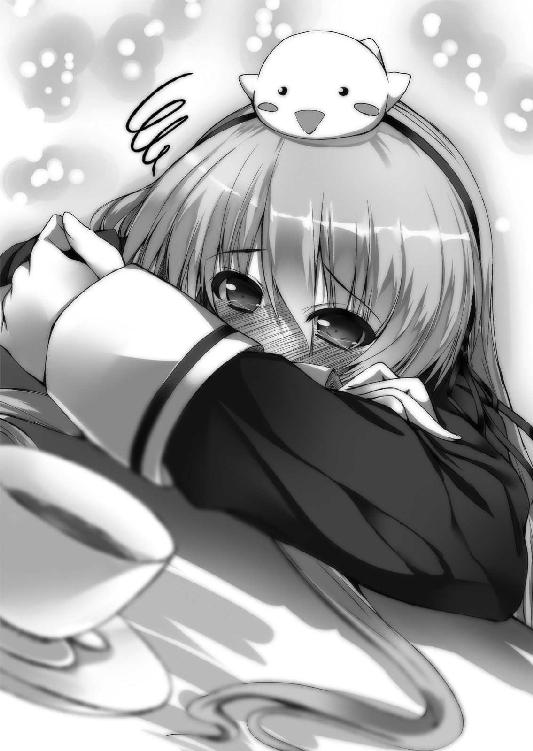
三章 ─八畳間の侵略者─
昼休みが終わるぎりぎり前に直輝は教室へ滑り込み、それから程なくして午後の授業が始まった。
窓際最後尾の自分の席で微妙な滑舌の教師による数学の授業を聞いていると、あまりにもいつも通りで逆に落ち着かなくなってくる。今現在、この学園で授業を受けたり授業をしたりしている大半の人間は、幻想偽典なんて物騒なものが学園に存在していることを知らない。無論、昨日までの自分もそうだった。
織絵先輩によると、生徒たちはもちろん教師陣においても偽典の存在を知っている人間はごくわずからしい。基本的に幻想偽典に関わる事柄はすべて秘匿されることになっている。
ただ、在籍してる生徒たちはみな学園によって『保持者に成り得る可能性あり』と適性を判定された者たちばかりなのだそうだ。どうやって測定してるのかは知らないが、試験も面接もボロボロだった自分が合格した謎はこれで解けたことになる。無論、雪乃が偽典の被害に遭った今では何一つ嬉しくない。
リセリア学園は高等部だけでも千人以上在籍するマンモス校であるため、身近に偽典の保持者がいるという可能性はおそらく低いだろう。だが、それでもゼロではないはずだ。
（ひょっとしたら、あのキルケゴールにだってどこかですれ違っていたかもしれない......）
そう思うと自然に奥歯がぎりっと鳴る。
「......直輝、どうした？ 顔色、悪ぃぞ？」
すると隣の席の夏生が小声で聞いてきた。この悪友とは何の因果か、席が隣同士な上に寮でも部屋が近かったりする。
「......ん、なんでもない。ちょっと考え事してただけだ」
直輝は小さく首を振って手元の教科書に目を落とす。だが読んでいるのは授業中の数Ａの教科書ではない。そこに立てかけた古代ギリシャの哲学者プラトンの解説書だ。
能力を扱える状態である偽訳解放を身につけるには、まず自分の偽典の内容を知らなければいけないらしい。そのためには偽典の元になった大著である原典にも触れる必要があり、その手始めとしてまずは著者のプラトンについてある程度知っておくように、と先輩に言われたのだ。なので温室を出てすぐ高等部の図書室へ行き、この解説書を借りてきた。
（......恥ずかしいくらいの理想主義者）
解説本で語られる彼の生涯を知って、直輝の抱いた感想はそれだった。
プラトンという哲学者は今からおよそ二千四百年前に古代ギリシャにいた人物だ。
若い頃は政治家を目指していたが戦争によってその職務に失望し、師であるソクラテスは『若者を堕落させた』という言いがかりのような理由で死刑に処された。その後、哲人政治を目指して王族たちを手塩にかけて育てたが、彼らはその実現前に追放もしくは暗殺されて、プラトン自身も一時は軟禁までされている。
挫折の連続のような人生だ。けれど、彼は決して諦めることはなかった。
プラトンは自身が設立したアカデメイアという学園とその著作によって人々への啓蒙を続け、その魂はアリストテレスを始めとする彼の弟子たちへと受け継がれていった。
（アリストテレス......）
確かメフィさんが偽典の大元たる『学園の磁場』を差して、そう言っていたのを思い出す。あの時は咄嗟に思い出せなかったが、一応、哲学者アリストテレスの名前ぐらいは直輝も聞いたことがある。メフィさんの口ぶりだと何か重要そうな感じだったが......しかし、それよりも今はプラトンだ。キルケゴールと戦う力を得るためにまずはこの理想主義者のことを知らなくてはいけない。
そして件のプラトンが生涯をかけて目指した理想、その教えが何かというと──。
「......難しくてよくわからない！」
「なんだ、日比野!? そんな頭を抱えて絶叫するほど先生の授業難しかったか!? 数学的にはまだ基礎の基礎だぞ!?」
教育者としての存在意義を問われたような教師の焦った声に、机に突っ伏していた直輝は「す、すいません！ 大丈夫です、ぜんぜんついてけます！ 俺、やれる子です！」と慌てて直立して首を振った。からかうようなクラスメートの笑い声と教師の「そ、そうか。ならいいんだ、悩み事があったら先生に言えよ？」というお言葉を頂戴しながら、赤面しつつ席に座り直す。
（は、恥ずかしい......っ）
心持ち肩をすぼめながら、開いていた解説書を一旦閉じる。
プラトンの掲げる哲学の中核は『イデア論』というものらしい。幻想偽典の銘にもなっていることだし、このイデア論が理解出来れば偽訳解放へ大きく前進しそうな気がするのだが、小難しくて今の直輝にはさっぱりだったのだ。
「......おい、大丈夫か、直輝？ やっぱさっき弓川先輩に呼ばれた時に男子高校生の青春の何かを激変させるような何かがあったのか？ いい加減、ノーコメント戦法はやめて俺に白状──いや、相談してみろよ。な、親友？」
隣から心配してるんだか、この機に乗じて情報通の野次馬根性を全開にしているのか、おそらく後者の夏生がまた小声で話しかけてくる。
夏生には教室に戻ってきた時に「それで全男子憧れの美少女な先輩とご一緒にランチってどういうことなんよ!?」と詰め寄られかけたのだが、その倍する速度で直輝が例の秘蔵本に関して授業開始寸前まで食ってかかっていたので、昼休みの件に関してはとくに説明していないのだ。
まあ、幻想偽典のことは一般人には口外しないように、と先輩に言われているので適当に誤魔化すことになるだろうが、それはさておき。
「うるさいぞ、雑食系男子。お前のような下賤の輩に話すようなことなど何もない」
その全男子憧れの美少女な先輩にあらぬ誤解を受けた身としては、二次元三次元問わず愛好するこの悪友に有意義なコメントをする気は当面ない。無論、例の活字系秘蔵本はすでに本人に返却済みだ。顔面に叩きつけるという形で。
「......ちっ、口の堅い奴め。言っとくが、そんなスキャンダルの真っただ中にいて俺から逃げられると思うなよっ。ガードが堅ければ堅いほど、腕が鳴るっての」
そう言うと夏生は教師が板書をしてるタイミングで、実際にぐりんと右腕をまわしてみせる。別に鳴ったりはしなかったが、やる気十分という意志は伝わってくる。......と、腕をまわした姿勢で夏生がちょっと顔をしかめた。
「......夏生、どうかしたのか？」
「ん？ いやちょっと肩が重いっていうか......別になんともねえよ。あー、いや、さっきの直輝の秘蔵本ビンタが効いたのかも。だからお詫びにぜひとも直輝と弓川先輩の昼下がりの情事のことをだな──」
とりあえず、無言で脛を蹴った。悲鳴を上げて仰け反る夏生に教師が「今度は木坂か!? なんだ、そんなに先生の授業は難解なのか!?」という声を聞き流しつつ、直輝は何食わぬ顔で窓の外の空を眺めた。
そして、放課後。
授業終了直後に夏生から報復のクロスチョップを食らいつつ、クラスメート全員から「まさか放課後も弓川織絵と会うのか......？」という物理的圧力を持ちそうなほどの視線を受けながら、しかし直輝は真っ直ぐに男子寮の自分の部屋へと帰還した。
元々、放課後になったら自室で待機しているように言われていたのだ。何やら準備などがあるらしく、それが整ったら織絵先輩の方からきてくれるらしい。直輝としてはそんな悠長なことでいいのかと思うのだが、織絵先輩には絶対服従の約束をしている上、現状自分は無力な役立たずのままなので反論は出来ない。
部屋は八畳ほどの広さで壁際に二段ベッドがあり、反対側の壁には学習机が二つと本棚や私物用のチェストがある。今は直輝一人だが本来は二人部屋なのだ。惨憺たる有様の他の男子部屋と比べて小綺麗なのは、寮母さんの目を盗んでやってくる雪乃がちょくちょく片付けていたからである。
そして現在、机に置いて凝視しているのは授業中に読んでいた解説本ではなく、購買で買ってきた文庫本を元に現界させた『イデアの片翼』だ。帰ってきてから何度か試してみて『偽訳再現』は問題なく出来るようになっていた。コツを掴めば楽なもので、机の上の偽典は直輝が意図するわずかな光量で七色に輝いている。
しかし、厄介なのはその内容だった。
開いてみると、直輝の偽典の中身のほとんどは白紙だった。一応事前に聞いていたところによると、偽典と保持者自身が同調するほど記述は増えていくものらしい。そしてそれに比例して偽訳解放時の力は上がっていくのだ。
それを鑑みて『イデアの片翼』を見てみると、現状記述されているのはだいたい十ページほど。全体の一割にも満たない。しかも言語が日本語じゃなかった。どことなくアルファベットに似てるが、何やらミミズがのたくったような馴染みのない言語である。正直、学とかない自分にはお手上げだ。
「こんなことで本当に俺、キルケゴールと戦えるのか......？ ちゃんと雪乃を助けられるのかな......」
授業中のように机に突っ伏すと、情けなさの滲む言葉が漏れた。と、その時、部屋のドアがノックされる音が響いた。
あ、と思って直輝は偽典を文庫本に戻して椅子から立ち上がる。夏生や他の男友達ならノックなんてせずに入ってくる。おそらく織絵先輩がきて、寮母さんがそれを知らせにきてくれたのだろう。だとすれば、先輩は寮のロビーで待ってるはずだ。夏生やクラスの男子が目撃したら厄介なことになるので、早く行かねばと直輝はドアを開けた。
「やっほー、直輝クン。勉強ははかどってるかな？」
そこにいたのは、まさかの織絵先輩ご本人。なぜか大きなキャスター付きのバッグを持った先輩が女子禁制である男子寮の直輝の部屋の前にいる。
「お、織絵先輩!? 何してるんですか、こんなところで!?」
「うん、本当はもっと早くくるつもりだったんだけど、準備に色々と手間取っちゃって。あ、失礼するね。お邪魔しまーす。いやこれからは『ただいま』かな？」
「ほほう、ここが小僧の生活している居住区か」
「え、え？ ただいま？ ちょ、どういうことですか!?」
バッグを引きつつ、すごくナチュラルな感じに先輩が部屋に入ってくる。その胸ポケットには小さなヒヨコのメフィさんもいる。
「結構、綺麗にしてるんだねー。わたし、男の子の部屋ってもっと雑然としてるのかと思ってた。あ、二段ベッドは直輝クンどっち使ってる？ わたしは空いてる方で構わないから」
「ふむ、どうやら下の方が小僧らしいな。なので織絵、お前は上だ。妾はそうだな、いつもは織絵と一緒ゆえ、たまには気分を変えるのもよいな。小僧、特別に同衾することを許してやってもよいぞ？」
「じゃあ、上の方のベッドにカーテンひかせてもらうね。ベッドはお互いプライベートゾーンってことで......覗いちゃダメだよ？」
「......すみません、ちょっとワケが分からないので一回ストップしてもらっていいですか？」
バッグから水玉模様のカーテンと金具を取り出していそいそと付け始めた先輩に、待ったをかける。
「ええっと、色々と理解が追い付いてないんですけど、とりあえず先輩はどうやってここに？」
その大荷物を見る限りウチの妹のように寮母さんの目を盗んで隠密的な動きをしてくるのは不可能だと思う。
「どうやってって普通に許可とって正面玄関からだよ？」
「きょ、許可？ 許可ってそんな、女子は原則的に男子寮に入室禁止のはずですよ？」
「あくまで原則でしょ？ わたしを誰だと思ってるのかな？ リセリア学園生徒会執行部には超法規的権限が与えられているのです」
先輩は胸を張って宣言した。たわわな胸が大きく揺れて、直輝は目のやりどころに困って慌てる。超法規的権限と言われても、管理されなくなった温室を使うのとはレベルが違うと思うのだが......。
「というわけで今日からわたし、しばらくの間ここに一緒に住むことにしたから。よろしくね♪」
「はぁ......はあ!?」
言われたことの意味が分からず一瞬ぽかんとしてから、悲鳴じみた声を挙げる。遅行性で事の重大さに気がついた。
「い、一緒に住む!? 一緒に住むってここで俺と寝食を共にするってことですか!? なぜ!? どうして!?」
「なぜも何もあるまい。昼間に織絵が言った通りだ。お前はキルケゴールに顔を覚えられておるのだぞ。幻想偽典の扱い方を教えてやるのとは別にお前を保護をする必要がある」
「あ......」
そうか、そういえば織絵先輩が最初から偽典のことを教えてくれたのもそういう理由があったからだったっけ......と直輝は思い出す。だが正直、敵が向こうからきてくれるなら好都合だ、と思ったところで。
「はいはい、なーおーきークン？」
カーテンの取付けを行っていた先輩がベッドの上から降りてきて、じっとこちらの顔を見つめてきた。うっ、と直輝は無意識に後ずさる。
「今、なんか無茶なこと考えてたでしょ？」
「か、考えてませんよ、そんなことっ」
「ほほー、おねーさんにそういう薄っぺらいウソが通じると思ったら大間違いだからね？ 正直に白状しなさい、本当は？」
弟でも叱るような表情の先輩。ずずいっと綺麗な顔がまつ毛の長さまで分かるくらいさらに近づいてきた。先輩にこういう言い方をされると、なぜか逆らえる気がしない。長年、兄という立場だったので年上の女性に耐性がないのかもしれない。直輝は目をそらしつつ観念して白状する。
「......向こうからきてくれるなら都合がいい、と思いました」
「やっぱり、そんなことだろうと思った」
先輩は覗き込んでいた状態から距離を戻し、腰に手を当てて嘆息する。そして、ついっと細い指を直輝の胸に押し当てて眉を立てた。
「いーい？ 直輝クン。キルケゴールに無策で挑もうなんてしちゃ絶対ダメ。知らなかっただろうけど、あいつの茨に触れたが最後、キミまで昏睡状態に陥っちゃうんだよ？」
「......え!? そ、そうなんですか？」
「ん、そうだね。まずはそこから話していこうか。直輝クン、座って」
直輝をベッドに座らせて、織絵先輩はどこから取り出したのか細フレームのメガネをすちゃっと装着した。学習机の前にすっと姿勢よく立つ姿がやたらと様になっている。
「はい、それじゃあ織絵先生の『これでばっちり！ キルケゴール対策講座♪』を始めますっ」
「ちなみに織絵のこれはわざわざ購買で買ってきた伊達メガネだ」
「いいの。ようは気分が大事なんだから」
「は、はぁ......」
夏生辺りがやり出したら無言の右ストレートからの殴り合いが始まりそうなノリだが、織絵先輩だと納得してしまいそうになる。美人はすごいなぁ、と口を開けたまま思った。
「というわけで、授業を始めるよ？ 放っとくと直輝クンは何するか分からないから、まずは相手のこと──キルケゴールのその危険性をちゃんと理解して」
くいっとメガネの端を上げつつ、先輩の声音に真剣さが滲む。
「一番覚えておかなくちゃいけないのは、さっきも言ったけどキルケゴールのあの茨のことね。いい？ あれは即効性の毒のようなものなの。今、昏睡状態にされた生徒たちはみんなあの茨にやられた人たち。偽訳解放した保持者であってもあれを体に受ければ、想念を奪われて眠り病に堕とされちゃうわ。だからもしキルケゴールと対峙したら迫ってくる茨は必ず全部避けて。被弾覚悟の特攻なんて一番やっちゃダメだからね？」
「え、でも......」
あの夜、直輝を身を挺して逃がしてくれた時、織絵先輩は全身に茨を受けていたはずだ。するとこちらの疑問は想定済みだったのか、直輝が質問する前に先輩は頷いた。
「それを説明するにはキルケゴールの目的と、その幻想偽典について説明する必要があるね。あ、『キルケゴール』っていうのはあいつの正体が不明だから、偽典の著者名からの仮の呼称ね」
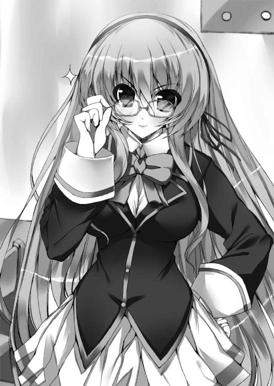
キルケゴールの目的、それは直輝も知りたいところだった。奴は一体何のために雪乃を、生徒たちを眠り病に堕としたのか。
「あの男の幻想偽典は『死に至る病』。聞いたことはあるかな？」
あまりに不吉なその銘に直輝は一瞬息をのんだ。
「な、名前だけはなんとなく......おぼろげですけど」
「原典の『死に至る病』はね、十九世紀にデンマークの哲学者キルケゴール......あ、これは歴史上の実在の著者の方ね。そのキルケゴールが記した哲学書が『死に至る病』なの。要約するとその内容は『絶望』についての記述。絶望とはどういうものであるのか、そして人はその絶望とどう向き合うべきなのか。それを記した書が原典の『死に至る病』ってワケ」
「それで、どうして生徒たちを昏睡させるなんてことになるんですか？」
「原典の『死に至る病』は今言った『絶望といかに向き合うか』って内容なんだけど、たぶんあの仮面の男の偽典はそこに改変が加わってると思うんだ。今までの経緯から見るとその目的はおそらく──絶望の蒐集」
「絶望の蒐集......？ それって、つまり他人の絶望を集めてるとか......？」
「うん、そういうことになると思う。キルケゴールは偽典の力を使って生徒たちの『絶望』を集めてる。人の想念を編み込まれて創られた偽典にとって人間の感情はエネルギーみたいなものだから。本来、自分だけでまかなうべき想念を他人から吸い上げることでキルケゴールは自分の偽典のページを異例の速度で増やしてるの。ページを増やすってことは、つまり偽典の力を増すってことね。一方、絶望という形で想念を奪われた人たちは精神力が削りとられて昏睡状態に陥る、おそらくはそういう図式」
ここまで説明を聞いて、直輝は腹の底に生まれていた不安を抑えきれなくなった。
「それって命に別状はないんですか!? 目覚めなくなった人たちがこのまま衰弱していって──死ぬ、なんてことは......っ」
「落ち着いて、たぶんそこは大丈夫だと思う」
「でも、死に至る病なんでしょう!?」
感情を乱してベッドから立ち上がりかける直輝を先輩が手で制した。
「原典の『死に至る病』で言われてる『病』ってね、つまりは『絶望』のことなの。〝絶望こそが死に至る病である〟って直接的な記述があるくらい。そしてその究極系は『死ぬことすら出来ないほどの絶望』。だからキルケゴールの能力が原典の記述と同様のものであるなら、最悪でも死ぬことはない」
そう言われ、もたらされた安堵に一瞬身を委ねそうになった。だが実際のところ、それはただの慰めだ。唇を噛みしめて直輝は絞り出すように言う。
「......でも、偽典には改変がされてる可能性がある」
「そうだね、だから楽観は出来ない。昏睡状態の人たちを確実に救うにはキルケゴールの持つ偽典を奪って中身を調べるか、偽典そのものを破壊してしまうしかないと思う」
「......」
直輝は無意識に拳を握りしめた。しかしその力みを解こうとするかのように、その上にそっと織絵先輩の手が乗せられる。
「激情に身を任せないで。それじゃあ、あいつの思う壺になるわ。いい？ もしキルケゴールと対峙することになったらまずは冷静になること。ここまででキルケゴールが人の想念を奪うことは分かったよね？ それを成すのがあいつの操るあの茨なの。さっきも言ったけど、つまりあの茨に触れたらそれで終わりってこと」
確かに頭に血が昇った今みたいな状態で突っ込んでいったら、一瞬で茨の餌食にされてしまうだろう。焦燥は消えない。しかしあえて意識して直輝は深く深呼吸した。
そして改めて先輩に尋ねる。あの茨に触れたら想念を奪われて眠り病に堕とされるというが、しかし──。
「でも、先輩はあの時......」
「そこは織絵の『ファウスト』と奴の『死に至る病』の相性の問題だ」
直輝の疑問に答えたのは、こちらの膝の上に飛んできたメフィさんだった。
「『死に至る病』は全編を通して『絶望』について記述された哲学書だ。それは全編であるがゆえ、保持者の精神性によりいかな改変が加わっていようとも変わりようのない大前提だと言っていい。一方、『ファウスト』も哲学書に近しい部類であるが、形としては物語の形式をとっておる。その筋書きは主人公である老学者ファウストが己が人生に絶望し、その絶望を捨て去るところから本章が始まるのだ」
「絶望を捨て去る......？」
「そうだ。理解出来たか？ つまり前提として『ファウスト』は『死に至る病』に蒐集されるような絶望を有しておらぬ。ゆえに織絵だけは奴の茨をその身に受けても昏睡させられることがない」
「だから先輩は俺には特攻するなって言うんですね......キルケゴールの蒐集を無効化出来るのは自分だけだから」
......けれど、だからと言って先輩が傷ついていい理由にはならない。温室で話した時のように納得いかないものがこみ上げる。だが、先に口を開いたのは先輩の方だった。
「──つまり絶望なんて面倒な感情、わたしはとっくに通り越しちゃってるってことなんだ」
その表情を見て、直輝は言いかけた言葉を飲み込んだ。出会ってから初めて、先輩の表情に影が差すのを見た気がした。
その瞳はまるでもうこの世界のどこをも見ていないようで......一瞬でも目を離せば目の前の人が霞のように消えてしまいそうな錯覚に駆られる。
「お、織絵先輩......？」
「ん？ なあに？」
だが、返ってきた言葉と表情は至って普通のものだった。その変化があまりにも自然すぎて、今見たものは気のせいだったのかと思いそうになる。
「やれやれ......」
膝の上のメフィさんが小声で呟いて羽を揺らした。それはどこか直輝にだけこっそり何かを伝えたいかのような調子で......気になって直輝は口を開こうとしたが、何を言っていいか分からず詰まっているうちに、先輩の授業が再開する。
「そういうわけで、もし一人の時にキルケゴールに出会ってしまったら戦わずにまずはわたしと合流すること。それが直輝クンがあいつに勝つための必須条件だからね」
「で、でも逃げるだけじゃ......っ」
先輩のさっきの様子が気にはなりつつ、目の前に提示された条件に思わず異を唱える。先輩は何食わぬ表情で、すちゃっとメガネの端を押し上げた。
「もちろん戦闘になった時の動き方......っていうか、考え方かな？ それはちゃんと教えてあげる。でも、いかなる場合でもキミの隣にわたしがいること。すべてはそれを前提にした戦術だってことを忘れずにいて」
ぱたぱたと羽ばたいて、メフィさんが直輝の肩に留まった。
「そして、そもそも分断されぬように常に共にいること。そのための今回の同棲だ」
「ど......っ」
物凄く直接的な表現に軽く仰け反った。同時に、はっと我に返る。
「そ、そうです！ そもそも先輩が俺の部屋に住むって、それダメでしょ!? いろいろマズすぎるじゃないですかっ」
「心配せずとも、そう長い期間になることではない。おそらくはあと数日で今回のキルケゴールの事件は幕が下りるだろう。それまでのごく限定的な期間だ」
「え......あと数日？ それ、どういうことですか？」
雪乃が目覚めなくなってから約一週間、織絵先輩が前に言っていた眠り病の報告が四月の二週目から始まったということだから、この一連の騒動はかれこれ二週間近く続いていることになる。それがあと数日で終わると断言出来るのはどういう理由なのか。
「あと数日でね、会長が帰ってくるんだよ」
「会長って......織絵先輩が所属してる生徒会執行部の会長ですか？ え、つまり会長も幻想偽典の保持者......？」
「会長もというか、織絵をはじめリセリア学園生徒会執行部の面々は全員が幻想偽典の保持者だ。それも偽典詠士と呼ばれるレアスキルを持った学園きっての精鋭たちでもある」
「そう、わたしの不死身って他に二つとない珍しい能力なんだよ？ これ、ちょっと自慢ネ。それで昼間に言った、偽典を悪用する人間を取り締まる機関っていうのは、ここリセリア学園日本支部では生徒会執行部のことなの」
そうなんですか、と驚きつつ直輝は頷く。今まで織絵先輩の背後関係はなんとなく謎の組織なイメージだったが、急に身近な感じになった気がする。
「......あ。っていうことは織絵先輩には生徒会に味方の人がいるってことですよね？ その人たちと力を合わせれば、一気にキルケゴールを追い詰められるんじゃ......」
「うん、確かにそう出来ればベストなんだけど......」
織絵先輩とメフィさんが顔を見合わせて、困った顔をした。
「残念ながらな、会長の天上寺紋芽以下、織絵以外の生徒会執行部員は全員出払っているのだ」
「え......な、なんでですか？」
「学園の外で大規模な事件が起こってね。こんなことは滅多にないんだけど......。今回、キルケゴールが動き出したのも会長たちが出向して生徒会が手薄になった隙をつこうとしたんだと思う」
「そして、それは見事に功を奏したわけだ」
「直輝クンをすぐ特保に紹介出来ないのも実は会長の不在が理由なの。特保ってすっごいお役所体質で、会長の承認がないと直輝クンの引き継ぎも受け付けてくれないから」
「ああ、そういうことなんですか......。あ、でもその会長さんが戻ってくれば、確実にキルケゴールを倒せるってことですよね？ つまりその人はそんなに......強いと？」
「強い。単純な強さと能力の強大さで言えば、ほぼ他に類を見ないほどに圧倒的だ。そもそもこの世に現存する幻想偽典の九十パーセント以上は『人越を規定せし書』と呼ばれる主に人についての記述を成したものに分類される。だが紋芽の持つ偽典はそれらを遥かに超越して頂点に君臨する『世界を規定せし書』と称されるものなのだ。これは現状、世界にわずか七冊しか......」
流暢に説明してくれていたメフィさんの言葉が途中ではたと止まった。その目がなぜかじっと直輝の顔を見上げてきている。見ると、織絵先輩も机にもたれて両腕を組んだ姿勢でこちらをじっと凝視していた。
「あ、あの......？」
妙な居心地の悪さを感じて直輝は目を瞬かせる。「うん、まあ......」となんとなく歯切れ悪く織絵先輩がメフィさんの後を引き継いだ。
「他には相性的なこともあるかな。わたしの『ファウスト』は『死に至る病』の絶望を無効化出来る程度だけど、天上寺会長の幻想偽典はキルケゴールにとってまさしく天敵に位置するもののはずだから。だからね、わたしたちにとって一番有効な戦術って実は持久戦なんだ。これ以上、キルケゴールに蒐集をさせることなく会長の帰還まで漕ぎ着ければ、それでわたしたちの勝ちってわけ。具体的な日数は分からないけど、でもあと数日程度なのは間違いないと思うの」
「なるほど......」
どこか釈然としないものを感じつつ、織絵先輩の言うこちらの勝利条件というのは理解出来た。それと同時に改めて緊張感が胃の底を圧迫してくる。
「もうすぐキルケゴールの天敵の会長さんが帰ってくる。だからこそ......この数日が本当の意味で危険ってことですね」
織絵先輩とメフィさんの表情にすっと鋭さが増す。それを見て自分の推測が間違いでないことを確信し、直輝は後を続けた。
「執行部が手薄になる瞬間をわざわざ狙ったキルケゴールなら、当然会長さんが戻るタイミングを一番気にかけて考慮に入れてるはずです。それがあと数日だって言うなら、この数日間こそが一番危ない。会長さんの帰還を目の前にしたあいつがどんな暴挙に出るか分からない。今は、そういう状況なんですね」
「......ふむ、鋭いな、小僧」
「もしも降りるっていうなら、今からだってわたしは承諾するよ。あいつの恐ろしさはキミもあの夜に肌で感じてるはずだもんね」
「ありがとうございます......でも、俺は戦います。そりゃ正直怖いですし、やらなくていいならやりたくないです。でも、俺に逃げ道なんてないですから」
雪乃はたった一人の妹だ。誰がなんと言おうとも、自分は雪乃を守るために行動しなくてはならない。たとえ無力であろうとも、どこからか颯爽と帰還した会長さんが奴を倒してくれるのだとしても、日比野直輝はその戦いの最前線にいるべきだ。怖くても、叫びだしたくても、自分は雪乃のたった一人の兄貴なのだから。
「......先輩、どうかよろしくご指導お願いします」
「やっぱりそういう結論になるよね。......うん、仕方ないか。キミがどういう子なのか、わたしもだいぶ分かってきたよ。教えるべきことはちゃんと教えてあげるから、頑張っていこうね」
「はい。先輩を信じてついていきます」
直輝がそう言うと、先輩はまた少し困ったように笑う。何か言いたげだったが、その言葉は飲み込んだようだった。切り替えるように「よしっ」と言って先輩は机の上に置いてあったプラトンの解説書を手に取る。
「じゃあ、話が一段落したところで授業の二時限目に入ろっか。今度は織絵先生の『かんたん・偽訳解放はじめて講座♪』ですっ。まずはプラトンの主張から勉強していこっか」
「はい、よろしくお願いします！ ......ん？ あっ！ ちょっと待って下さい、先輩がここに住むことに関しての話がまた有耶無耶になってる！」
すると、ぱたぱたと飛んできたメフィさんが直輝の頭の上に降りて言った。
「いい加減そろそろ諦めろ、小僧。すでに決定事項だ」
「いえ、あのっ、だから倫理的にマズいですって！」
先輩は生徒会の人ですし生徒の代表としての模範とか規範とかっ、と言おうとしたところに、大丈夫、という先輩の言葉が被さった。
「雪乃ちゃんには秘密にしといてあげるから」
「へ？ 雪乃？ なんでそこで雪乃が──」
その時、ノックもなしに部屋のドアが開いた。わりとイラ立った感じで顔を出したのは、寮母の矢塚楓さん（二十七歳・独身）である。
「うるさいぞ、お前ら！ 今何時だと思ってる!?」
詰んだ！ と直輝は心中で絶叫。ここ一年普通科男子寮でこの人の逆鱗に触れたが最後、五体満足で翌日の朝日は拝めないというのが寮生たちの共通見解である。ましてや今回の場合、血の繋がりすらない女子生徒が自室にいらっしゃるという前代未聞の異常事態だ。
だが織絵先輩は直輝のそんな胸中もどこ吹く風と、寮母さんへ解説書片手ににっこりと笑みを返した。
「すみません、楓さん。直輝クンの勉強中だったんですけど、ちょっと白熱しちゃって。以後、気をつけます」
寮母さんは、まったく......と毒づいたがその顔にはかつて直輝を含む夏生以下五名を半裸の逆立ちで寮外十周させた時のような怒りはない。
「弓川、お前の入寮は許可したが特例中の特例だからな。模範的な生活態度を心がけろよ」
「はい、肝に銘じておきます」
「日比野、お前もだ。不純異性交遊は即刻厳罰だからな。今度は半裸じゃ済まさんぞ？」
「し、しませんよ、そんなこと！」
じろりと睨まれ、反射的に高速で首を振る。
ならばいい、と一方的に言い放って寮母さんは出ていった。あまりに呆気ないそのお沙汰に直輝はぽかんとしながら閉じたドアを見つめる。
厳罰に処されなくて安堵した半面、それどころではないと脳の片隅が叫んでいる。非常に信じがたいことだが、どうやら織絵先輩は本当に入寮の許可をとっていたらしい。こうなると直輝にはもう本格的に拒否権がない。
呆然としているところに、ツツツと近づいてきた先輩が上目遣いな視線を向けてきた。
「残念だったね？ 楓さんがダメだって。これじゃあ、勉強がはかどってもご褒美はあげられないかな？」
「へ？ ご褒美？ な、何がですか？」
近さに動揺しつつ首を傾げる直輝に、先輩はからかうようにニコッと微笑んだ。
「んー、ふじゅんいせーこーゆー？ 直輝クン好みの言葉に置き換えると、初えっち？」
ボォッとこっちの頬が燃え上がった。
そうだこの人にはあの秘蔵本を見られてたんだっ、とか、残念ってどういう意味ですかっ、とかいろんな思考が一瞬で脳内を駆け巡り、結局処理限界を超えてぱくぱくと言葉が出なくなった直輝を見て、先輩がクスっと笑う。
「ふふ、可愛いなぁ。そういうわけで、今日からヨロシクね、直輝クン♪」
年上の人の余裕な笑顔を前にして、とんでもないことになった......と直輝は色んな意味で頭を抱えた。
＊ ＊ ＊
生徒会執行部の時計塔と並んで、学園内で最も空に近い建築物である中央記念図書館。ヘレニズム様式を思わせる尖塔の一角で織絵はメフィと共に学園の様子を睥睨している。
「やっぱり......キルケゴールの奴、今夜は動かないみたいね」
長い髪を夜風にたなびかせながら、制服姿の織絵は肩の上にいるメフィへと言う。時刻は深夜、全寮制とはいえ基本的に学生ばかりの学園のなかはすでに静まりかえっている。
ちなみに直輝はここへは連れてきていない。偽訳解放の実地を行って疲れ切った彼が眠りについたのを見計らって、織絵とメフィはキルケゴールの動向を見張るために外へ出た。
「思った通り、小僧のことを警戒しておるのだろう。奴も小僧がいきなり偽典を使いこなす可能性は低いと考えるだろうが、それでも小僧は偽典を手にしたその瞬間に偽訳解放を成してみせ、奴に一撃を入れている。用心深いキルケゴールのことだ、紋芽の帰還が迫っているとはいえ、おいそれと軽はずみな行動には出れまい」
直輝自身は自分を無力だと思い詰めている節があるが、実際のところ彼の存在は戦局に大きな一石を投じていた。昨日の時点で一気に攻勢に出始めていたキルケゴールは今夜に至っては鳴りを潜め、一時の膠着状態が生じている。
「直輝クンが引き出したのが一般的な『人越を規定せし書』ならキルケゴールもそこまで慎重にはならなかったと思う。でも彼が手にした幻想偽典が放つのは七色の光......」
会長を除く、この学園に存在するすべての保持者たちの幻想偽典が放つ光は単色だ。無論、織絵やキルケゴールも同様である。
『人越を規定せし書』が持つ赤、橙、黄、緑、青、藍、紫──そのすべてを備えた七色の輝きは『世界を規定せし書』の証だ。つまり日比野直輝が持つ力は最強の偽典詠士たる天上寺会長と潜在的に同等ということになる。
「予見された七人がいる状態で現れた、禁忌の八人目か......」
「ひょっとしたらあの小僧はとんでもない運命を背負っているのかもしれんな。ややもすれば、この短期間で偽訳解放も成すかもしれんぞ」
「......そうね。出来れば直輝クンは危険な目に遭わせたくないけど」
「紋芽とはまだ連絡は取れんのか？ キルケゴールのことは抜きにしても、小僧のことに関しては非常時であっても耳に入れておいた方がよかろう」
「わたしもそう思うけど、やっぱりあっちの共鳴結界が電波なんかを全部シャットアウトしちゃってるみたい。たぶん向こうは今頃、世界の位相そのものがズレちゃってるんだと思う」
「......となれば、やはり帰還を待つより他はないか」
「うん。でも、そもそも元からそのつもりではあったわけだし。それより今は敵方の戦力の方を精確に推測するべきでしょ。キルケゴールの記述、どこまでいってると思う？」
幻想偽典は記述の成されたページが増えれば増えるほど強大となる。他人の想念を蒐集している『死に至る病』の成長速度は凄まじいものがある。事実、初めて対峙した二週間前は織絵が奴を圧倒していたものだが、その天秤はこのわずかな期間で覆されたと言っていい。
「我らの『ファウスト』は第一部までとはいえほぼ記述が完遂されつつある。事実、近距離戦においては、この学園でお前に追従出来る者は片手で数えられる程度しかおるまい。だがそのお前すらキルケゴールは手玉に取り出している。不得手な中距離戦を強いられていることを差し引いたとしても、奴の『死に至る病』は成熟していると言っていいだろう。おそらく『死に至る病』の『終止符の地平』はもう間近だ」
「だよね......わたしもメフィと同意見」
『死に至る病』の記述を完遂させるため、必ずキルケゴールは会長の帰還前に最後の狩りに乗り出すだろう。自らの幻想偽典の完成、そしてその先にあるものこそがすべての保持者たちの目的であるが......だからと言って他者を犠牲にそれを成そうとすることは許されない。
「絶対に止めてみせる。たとえこの命が尽きたって......」
細くはく息に、ひゅぅ、と喉が嫌な音を立てている。胸の奥にも鈍い痛みがあった。
「......織絵」
「大丈夫。まだ、大丈夫だから」
「ならばいいが......だが、今夜はもはやキルケゴールも動くまい。早めに戻って睡眠をとれ。もう連日まともに横になってもいなかろう？」
「授業中に居眠り出来ないのが優等生の辛いところよね。でも平気、念のためもう少し見回るよ」
「寝不足がたたって、小僧の前でヘマをやらかさんといいがな」
「う......っ」
ぼそりと言ったメフィの呟きに、織絵のそれまでの平静さが一気に崩れた。
「いやぁ、相変わらずの見事な余裕っぷりだったがなぁ。よもや放課後すぐに寮に行けなかった理由が心の準備にグダグダ時間を要したためだったとは、小僧などは夢にも思うまい。ぜひとも見せてやりたかったのう、自室のベッドの上で『やっぱり無理ーっ、一緒に住むなんて緊張で死んじゃうっ、絶対死んじゃうーっ』とか叫んでたお前の姿」
「う、うううるさいなぁっ。言っとくけど、メフィ、それ絶対直輝クンに言ったらダメだからね!? 絶対よ、絶対なんだからね!?」
「そら、妾は言わんが......いずれお前が自分からボロを出して自爆しそうな気がするぞ？」
「そ、そんなことありません！ 可愛い後輩の前ではわたしはカッコよくて素敵な先輩なんだから、ボロなんて絶対出しっこないの！」
「どうだかのう」
ぷいっと髪を舞わせて身を翻す織絵の肩の上、メフィはからかうように羽を揺らした。
＊ ＊ ＊
その夜、直輝は夢をみた。
雪乃と再会してからはみなくなっていた、子供の頃の夢だ。
両親の離婚が決まって、兄妹離れ離れになるのが避けられなくなって、家を飛び出した日の夕暮れの公園。今はもう撤去されてしまったドーム型の遊具のなかで、窓のように開いた穴から見た夕陽が、哀しいくらいに綺麗だった。
「あのねあのね、兄さん。このまま二人で一緒に暮らそうよ。アパートとかさ、探したらきっと誰もいない部屋が見つかると思うの。そこにこっそり潜り込んじゃおうよ。お小遣い貯めてたからしばらくは食費もあるしっ。それにちゃんとお化粧したらね、あたしって高校生くらいに見えるよね、ね？ だからね、いざとなったらあたしが働いて兄さんのこと食べさせてあげる！」
雪乃の手を引いて飛び出したのは直輝の方だ。でも直輝以上に雪乃がそれを望んでいた。
くりくりした瞳をめいっぱい未来への希望で輝かせて、妹が服の裾を引っ張る。
「大丈夫、兄さんは何も心配しなくてもいいよっ。あたしが全部上手くやってみせるから！」
「......そうだな、それもいいかも」
「でしょでしょ！ 名案だよね!?」
嬉しそうに笑う雪乃は一冊の本を抱いている。下手くそな絵と下手くそな字で書かれた、手作りの絵本。家を飛び出す時に雪乃が持ってきた、たった一つのもの。
──それは、世界の裏側を見てしまった少女の話。
世界の本当の姿を知ってしまったがゆえに、世界でたった独りになってしまった少女の物語だ。
母親に連れられて一人も知り合いのいない海外へ行くと言われた雪乃のこれからが、絵本の少女の哀しい顛末と重なって、直輝は気づけば手を引いて飛び出していた。
「......うん。雪乃が作ってくれるシチュー食べられなくなると困るし。俺、シチュー好きなのに、嫌いなニンジン抜いて作ってくれるの、雪乃だけだし」
「だよねだよねっ。どこのお店だってシチューにニンジン入ってるし、お母さんもちぃーさく切って食べさせようとするもんねっ。でもね、あたしだけはそんなことしないの。兄さんのためなら世界中の畑からニンジンを根絶やしにしてあげるもんっ」
「それはやりすぎ」
褒めて褒めてっ、と甘えてくる妹の頭を直輝は苦笑しながら撫でる。
そうしながら......どうやって雪乃を納得させるか考えていた。
感情任せに飛び出してきたけれど、こんなことは長く続かないことも本当は分かっていた。きっと最後は泣かせてしまう。子供の自分たちでは結局どうにも出来ないんだということを言い聞かせて、雪乃の手を引いて自分は家へと帰るのだろう。
雪乃はきっと泣くだろう。自分のことを恨むかもしれない。でも、なんとかしてやれる力がこの手にない。悔しくて、情けなくて、でも雪乃を守る方法を思いつけない。
大切な人を守りたいのに、守れない。日比野直輝は今も昔も変わらない。
そうして、朝がきた。
手を繋いで外へ出ると、妹は何も言わずについてきた。
「お兄ちゃん」
呼ばれて、足を止めた。振り向くのが怖かった。
きっと雪乃は泣いてると思う。ひょっとしたら、恨まれるかもしれない。
「雪乃のワガママ、叶えてくれてありがとう、お兄ちゃん。もう困らせないから、もう大丈夫だから。だからね、ニンジンは......もうちゃんと食べなきゃダメなんだよ？」
雪乃は泣いていなかった。大粒の涙を浮かべてるくせに、必死に堪えて笑っていた。
お兄ちゃんと呼ばれたのはどれくらいぶりだったろう。確か五年生で同じクラスになった時、クラスの男子にからかわれていつの間にか雪乃が『兄さん』に変えたのだ。
「......分かった。もう、好き嫌いしないよ。もう絶対、雪乃に心配かけないから」
どうしたらよかった？ どうしたら妹にこんな顔させずに済んだ？
誰が悪い？ 何が悪かった？
決まってる。無力な自分が悪いんだ。
──大切な人を守れる人間になりたかった。
その日、日比野直輝は大切な人を守れなかった。これは、そんな日の夢。
意識がゆっくりと浮上していく。二段ベッドの下の段で次第に目が覚めていく。
（ああ......俺、また......あの夢みてたんだ......）
子供の頃の、妹を守ってやれなかった時のこと。
その妹は今、昏睡状態で眠り続けている。また、自分は守れなかったのだ。
（......そうだ、つい最近もひどかった......目の前に血まみれの女の子がいて、俺に逃げろって言って......）
そんなの、逃げられるわけない。
寝ぼけた頭であの時のことを思い出しつつ、目を開けると......。
「せっ......っ!?」
目の前に先輩がいた。
眠気が一気に吹っ飛んだ。どこかデジャヴのようなものを感じつつ、無防備極まりない先輩の寝顔から目が離せなくなる。先輩はなぜかブレザーを脱いだワイシャツ姿。スカートは穿いてない。ボタンが外れた胸元から真っ白な鎖骨と恐ろしく柔らかそうな丸みの上半分が覗いている。
「あ、あの......織絵先輩？ ど、どのような事情でこちらのベッドにいら、いらっしゃるのでしょうか......？」
「ん～？ はれ？ なおきくん......？」
どもりながら恐る恐る声をかけると、うっすらと先輩の瞼が開いた。
焦点の合わない瞳でぼんやりこっちを見ているかと思うと、ふいにその手が伸びてきた。
「よしよし～、いい子だからおねーさんとお寝んねしましょうね～」
「──ぁっ!?」
胸元に抱き寄せられた。
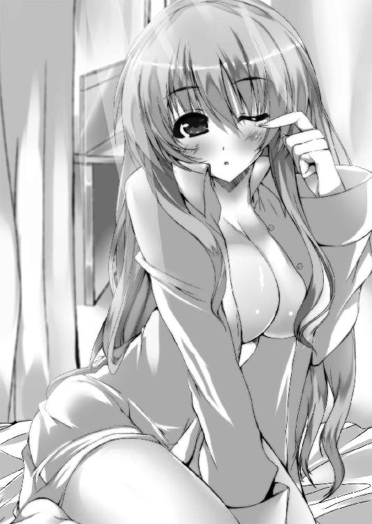
両腕に押し上げられた深い谷間が一瞬見えたかと思えば、その次の瞬間には口と鼻がとんでもなく柔らかい何かに塞がれて息が出来なくなる。
ふにゅぅっと両頬が左右から挟まれていた。先輩の匂いが容赦なく胸いっぱいに広がり、頭の奥が超痺れてくる。
「ひぇ、ひぇんぱい......っ！」
「ふぇ......？ んー......んん!? あれ!? 直輝クン!? わたしなんでどうしてぇ!?」
目が覚めた途端、見る見る先輩の顔が赤くなっていく。えっ、なんかいつもの余裕な感じの先輩と違う、と思った矢先、背後から鳥の羽音がした。
「ほら見ろ言わんこっちゃないと思いつつ、なんだかんだでフォローしてやる優しい妾の教育的指導ーっ！」
クチバシがスコーンと頭を突くいい音がした。
「いやぁ、ご、ごめんねー？ なんかベッドに行く途中で力尽きて直輝クンの方へ潜り込んじゃったみたい。ほら、今までわたし女子寮の部屋で下を使ってたからさ」
先輩は珍しく照れているようだった。笑って誤魔化しているが、まだ多少頬が赤い。ちなみに二人とももうきちんと制服を着ていて、直輝の頭にはメフィさんに一撃を頂戴したたんこぶがある。メフィさん、クチバシで打撃系もイケるらしい。
「いえ、あの......力尽きてって一体どういう......？」
昨日、一通りの話を終えた後に織絵先輩による偽訳解放の手ほどきが始まり、その途中で自分が力尽きて倒れるようにベッドに沈んだのは覚えている。だが先輩の方が制服姿のまま力尽きたという理由がよく分からない。
「いいからいいから、気にしないで。それよりさっきのことはお互い忘れるってことで......ね？」
「あ、は、はい。それはもちろん......っ」
「やれやれ、だからわざわざ忠告してやっていたというのに。妾があと一歩遅ければ織絵が見栄っ張りの猫かぶりということが小僧に──」
「メフィーっ、ちゃんと感謝してるから、ちょっと黙って！ っていうか、それわざと言ってるでしょ!?」
「え、先輩の......猫？ ってなんです？」
「ううんっ、なんでもないっ、なんでもないよ！」
「一応、寮から特例をもらっとるのだから自分たちで分別はつけんといかんぞ？ 今回は妾が両成敗で裁いてやったが、次は止めてやらんからな。なぜなら面白そうだから！」
「いや、そこは止めて頂かないと......っ！ いえ、もちろん繰り返すつもりはないですけども......っ」
「っていうか、おでこがすっごく痛いんだけど！ もうちょっと加減とかないの!?」
「ふむ、そんな繊細な挙動を期待されてもな。妾はヒヨコぞ？」
「こんな時ばっかり鳥類を気取るの......っ!?」
そんなふうに騒いでいると、バタンッとドアが開いて寮母さんがすんごい形相の顔を出した。
「朝から騒がしいぞ、お前ら！ とっととメシ食って教室行け！」
全裸にすっぞ!? と（主に直輝に）一喝する寮母さんから（主に直輝が）逃げるように二人と一羽は食堂へ急いだ。
その日の昼休み。
朝に脱兎のごとく飛び出したせいで忘れた五限の体育で使うジャージを取りに直輝は部屋へと戻った。昼は先輩と温室で待ち合わせをしているのだが、前の授業が早く終わったおかげでまだ少し余裕がある。
「よし、ジャージ確保。あとは......ああ、タオルも持ってくか」
この学園は資金が有り余っているのか、寮の個室にそれぞれシャワールームがついている。タオルがあるのはそこの戸棚のなかだ。何の気なくドアを開けると、なぜか戸の向こうから湯気が漏れてきた。
「あ、メフィ？ ちょうどよかった。わたしのトランクからタオル持ってき......きゃあっ、直輝クン!?」
「ええっ、お、織絵先輩!?」
瞬間的に目に飛び込んできたのは、ほんのり蒸気したピンクの肌。次の瞬間には湯気を立たせる大きな双丘にとっさに両手が添えられた。しかし規格外の大きさを持つ二つの丘は少女の細い腕ではとてもではないが抱えきれず、無理やり押さえ込まれた反動でむしろ勢いよくふるるんっと思いきり両手からこぼれ落ちる。ぜんぶ見えた。
「す、すすすすみませんでしたっ！」
両目に投射された映像を脳みそが保存するより一瞬早く背中を向けてドアを閉じる。湯気の向こうにいたのは言わずと知れた織絵先輩で、ついでに完全に一糸まとわぬ姿だった。
「ご、ごめんね！ 昨夜、外から戻ってそのまま寝ちゃったから、温室に行く前にシャワーだけ浴びようと思って......っ。っていうか、メフィ！ 外にいるんじゃないの!?」
「うむ！ だから次は止めんと言っただろうに！」
たぶんこういう事態を回避するためにいたはずのメフィさんが、ニヤニヤしつつ机の下から飛んできた。
「お、おおおお願いですから止めて下さいって！ あ、あのごめんなさい、織絵先輩っ。俺、ど、どんなことでもしますから！」
言いながら、とりあえず土下座だ、土下座するしかないっ、と心を決めかけたところで、あり得ないことにガチャッとドアが開き、いまだ生まれたままの姿のはずの織絵先輩が赤くなった顔を覗かせた。そして体をドアで隠したまま細い手が伸びてきて、ぺちんっとデコピンされる。
「えっと......お、おしおき。今のはメフィのせいだから、これで許したげる」
その照れた表情の先輩の可愛さに当てられて、直輝の耳がかぁーっと熱くなる。多角的に限界がきて、ほ、本当にすみませんでしたっ、と叫んで部屋から脱兎。開いたドアの隙間からタオルを咥えて飛んでいくメフィさんの姿が見え、次の瞬間先輩の泣き叫ぶような怒りの声が木霊したような気がしたが、すでにいっぱいいっぱいの直輝の頭には入ってこなかった。これから毎日こんな感じだとしたら、とてもじゃないが身が持たない気がした。
四章 ─彼女が好きになったもの─
午前授業だけの土曜日。授業終了のチャイムが鳴ると同時に、たゆたうクラゲのようにゆらゆらと直輝は机に突っ伏した。
「おお!? どうした、直輝!?」
「げんかいだ......」
隣の席から大声を挙げる夏生になんとか声を絞り出して応える。
織絵先輩と住むようになってから、すでに二日が経過していた。その間、キルケゴールに動きはない。直輝自身は見回ったりしてるわけではないが、織絵先輩とメフィさんの様子を見ているとそれが分かる。自分が偽訳解放の特訓で力尽きた後、二人がそっと外出してキルケゴールを警戒しているらしいことは直輝もすでに気づいていた。本心を言えば無理やりにでも同行したいし、そうすべきだという焦りが堰を切りそうなのだが、二人が出る時にはすでにこっちは意識を失っている上......現状では足手まといにしかならないこともさすがに分かる。今の自分に出来るのは、一刻でも早く戦力になるための努力しかない。
だから今は歯がゆさをなんとか自制して、偽典の理解と偽訳解放の特訓に集中している。それはいい。よくはないが、問題はそっちじゃない。
織絵先輩との共同生活が限界だ。
朝、目が覚めるとなぜか毎度のごとく必ず目の前に先輩がいる。もうメフィさんは本当に止めない。部屋のなかが先輩の匂いでいっぱいだ。なんかもうくらくらする。先輩が入浴中のシャワーの音とか色々思い出してほんとヤバい。着替え中の衣擦れの音とか神経が焼き切れそうになる。っていうか、なんでウチの寮は各部屋に風呂がついてるんだ。男子寮なんだから共同浴場でいいじゃないか、変なところに設備が行き届きすぎなんだよ。
「そうか、直輝は限界なのか」
そんな一言と共に、後頭部にゴスッと無言のかかと落としが炸裂した。
机ごとぶっ倒れた直輝は後ろ頭を押さえて体を起こす。
「何すんだ夏生、この野郎!?」
「うっるせぇぇぇですよぉぉぉ!! これは俺の怒りじゃねえ、この学園に存在するすべての男子の熱き魂の咆哮だぁぁぁっ！」
「うおっ!?」
逆に襟首を掴まれて、がっくんがっくん揺さぶられた。
「なんかいい匂いのする人探してるとか性欲溜まりまくりな発言したと思ったら、あの超絶美人の弓川先輩にお誘いされて連れてかれて、一体どうしたなんだと思った矢先になんかその日のうちに校則ぶっちぎって同棲しちゃってるじゃねえですか!? しかもお前様ってば一向に事情の説明も弁明も致しませんし!? それでここにきて限界って何!? 初エッチか、初エッチなのか!? 憧れの先輩からのご褒美なんだな、そうなんだな!? 毎晩毎晩ハッスルしちゃってアタシもう体力限界♪ ってことですか!? お前はなんだ!? 神様か!? お供えでもなんでもするから、そのご利益分けてくれぇ──っ！」
「本音だだ漏れすぎだろ!?」
涙ながらに絶叫する夏生の腕をなんとか振り解いて、もうぐったりする。
ちなみに女子生徒がいきなり男子寮に住みだした件に関して、さすがに色々問題になるんじゃないかと思っていたのだが......ならなかった。びっくりするくらいにならなかった。
なんでも聞くところによると、執行部権限──というよりそのバックにいる生徒会長の威光には本気でなんぴとたりとも逆らえないらしい。まあ、偽典に関することは学園ぐるみとのことなのでその辺りで裏側から織絵先輩が強権を発動させたのかもしれないが、一般生徒にまでそこまで言われてる会長って何者なんだ、と思わなくもない。
と、そんなふうに騒いでいると──。
「やっほー、直輝クン、いるかな？ 迎えにきたよ♪」
またすごいタイミングで織絵先輩が教室にやってきた。共同生活が始まってからこのお迎えは毎日である。無論、登校時も教室まで送ってくれる。
一応、まわりに二人が近しいと周知させることで直輝を狙うかもしれないキルケゴールへの牽制としてる、ということなのだが......その前に夏生以下、学園中の男子たちに謀殺される気がする。
「弓川先輩、こんちはーっす！ 直輝なんか放っといて俺とデートしませんか!?」
「んー、ごめんね？ 木坂くんは楽しくてとても良い人なんだけど、わたしにとって直輝クンが特別だから」
「......っ」
さらっとそんなことを言われると、どきりとする。ついでに教室中の男子の殺意がざわっと増して、びくりとする。
そしてその中心たる夏生が織絵先輩の手前、明るく冗談めかして、しかし奥底にドス黒い何かを内包しながら、たっはー、と陽気に額を叩いた。
「ちっくしょー、羨ましいぜ、直輝！ いずれぜってぇ屠る。それはもう惨たらしく屠る」
「うん、なんか俺も今そんな未来が見えた......」
共同生活の他に明るい高校生活も限界な気がする。
刺すような無数の視線を背中に受けつつ、先輩と一緒に教室を出た。なんとなく無意識に背中を小さくしながら先輩のすぐ後ろを歩く。登下校の時の先輩は鞄を胸に抱くようにして歩くことが多い。鞄にぬいぐるみのフリをしたメフィさんがキーホルダーのようにぶら下がってるためだ。
直輝の位置からでは上手く聞き取れないが、今も二人はひそひそと小さな声で会話してるようだった。
「......『わたしにとって直輝クンが特別』か。ほほう、そーかそーか」
「な、何よ。カモフラージュのためなんだから、ああいうふうに言った方が自然でしょ？ それだけのことだよ。別に変な意味なんてないし」
「ふむぅ？ まぁ、そういうことにしておくか」
「な、何さ、言いたいことあるならはっきり言いなさいよ、ばかメフィっ」
先輩の声のトーンがちょっと上がってきて、すれ違う生徒たちが若干不思議そうな目で見ている。ああ、先輩の腹話術の噂ってこういう感じで広まってるのかー、と思った。
「あの、織絵先輩。会話の声、ちょっと聞こえてますよ？」
「えっ!? うそっ!?」
なんだか最近たまに見かけるようになった焦った感じで先輩が振り向いた。どうしたんですか、と首を傾げると、先輩は心なしか誤魔化すように前を向く。
「ああ、うん、なんでもないよ？ 全然なんでもないんだからっ。それより早く温室に行こう！ 時間が勿体ないもんね？ ね？」
「......？ はい、了解です」
横に並ぶと鞄にぶら下がったメフィさんがなぜか微妙にニヤニヤしていた。
温室に着くと、直輝はそのままテーブルへ行って自分の幻想偽典を現界させる。その間に先輩がお茶を淹れてくれるのが放課後の流れになっていた。
「さて、じゃあ今日は理論の復習からいってみようか。直輝クン、プラトンの提唱した『イデア論』について、どんなものか説明してくれるかな？」
「あ、はい、分かりました」
直輝は手元の『イデアの片翼』を開きつつ、ごほんと一つ咳払いをする。まだまだ微々たるものではあるが、最初の時よりは記述されたページの数は増えていた。それはつまり、それだけ偽典への理解が深まったことを意味する。
また、先輩とメフィさんに見てもらったところ、直輝の偽典が扱っている文字は古代ギリシャ語であるらしい。初見で読めなかったのは当然だが、それでも偽典への理解が深まると自然にその内容が頭に入ってくるようになっていた。
「ええと、目に見える世界を不完全なものだと嘆いたプラトンは、この現実を補完するためにより完全で調和した『イデア界』というものを考え出しました。プラトンによれば、『イデア界』こそが真なる世界であり、俺たちのいるこの現実はその『イデア界』をコピーした影でしかない、とそういうことらしいです」
直輝の幻想偽典のページには今のところそういった『イデア』に関する説明だけが記述されている。偽典に書いてある内容に目を通しつつ、直輝はなんとか理解出来ている事柄を自分の言葉に変えて説明していく。
「じゃあそのイデアというのは一体何なのか。その定義をプラトンは『万物を形作る永遠の理想状態、その本質』と言いました。これがまた分かりづらいんですが......たとえば紙に三角形を書いたとします。それを見れば誰もがそれを『三角形』だと認識します。でもそれをよくよくミクロな視点で見ていけば、インクがかすれたり線が完全には直線ではなかったりして、厳密には完全な三角形ではありません。現実の世界には『本当の意味での三角形』は存在しないんです。にも拘らず、人々は三角形という存在を認識することが出来る。よく幽霊とかＵＦＯの話で『見たことないものは信じない』って意見がありますが、それは実際まったく逆で俺たちの世界やら社会やらは『厳密には見たことがないはずのモノ』を受け入れた上で成り立っているんです」
先輩が淹れてくれた紅茶を一口飲んで、続ける。
「では、俺たちはなぜその『見たことがないはずのモノ』を知っているのか。そこで『イデア界』が登場します。なんだか非現実的な話ですが、プラトンは人々はみな生まれる前にはイデア界にいて、そこですべての存在の完全な形──つまりは『本質』を知っていたのだ、としました。だから俺たちは『見たことがないはずのモノ』を当たり前のように認識出来るのだ、ってことらしいです。ここで言う『本質』が『イデア』に当たります。プラトンによれば、イデア界には『完全な三角形』が存在します。現実のように線が直線でなかったり時と共に紙がほころんで消失したりしない、『永遠に理想の状態を保ち続けるモノ』、三角形の場合はつまりこれが『三角形のイデア』です。言ってみればイデアっていうのは劣化したり不完全であったりすることのない『存在の本質』であって......ええと、その、そう考えると人には『人のイデア』があったり、温室には『温室のイデア』があったり、紅茶には『紅茶のイデア』があったり......ってことになるのか？」
話している間に記述されているページの最後まできてしまった。この辺りまでくるとまただんだん理解が曖昧になってくる。
テーブルの向かいに座っている織絵先輩が、そうだね、と一つ頷いた。
「わたしも先生として色々勉強したけど、総称としてのイデアや個々のイデアのことになってくると、プラトン自身も中期と後期で考え方が変わってきたり、弟子のアリストテレスに否定や注釈をされたりもしていて、難しくなってくるね。そういう原典で曖昧な部分は偽典になる段階で改変が起こりやすいところでもあるんだ。銘にある『片翼』って単語もプラトンの著作には見かけないものだし、もしかしたら今後、直輝クン次第でその辺りの記述はオリジナルなものになっていくかもしれないね」
「あ、そうなんですか」
言われてみれば、イデアの理解にばかり集中していて、表題の半分を担う『片翼』の部分のことはあまり考えてなかった。イデアは片方だったり翼だったりするものではないから、そこが原典にない直輝だけの要素になるなら、そちらも留意する必要があるのかもしれない。
ちなみにプラトンの著作やその解説本を調べていて分かったことだが、先輩の言ったようにプラトンの書き残した本のなかに『イデアの片翼』という銘のものは現存していない。織絵先輩の推測によると、直輝の幻想偽典は複数の原典からイデアに関することが集められて現界したものらしい。珍しいことではあるが、研究が進んで解釈が変化する古典や地域によって偏りのある童話などの偽典には稀に起こることなのだそうだ。
「よし、それじゃあ次は偽訳解放いってみよう。やり方はもう覚えたね？」
「はい、大丈夫です。もう何度もやってますから」
偽典を手に取って直輝は立ち上がった。テーブルから少し離れて呼吸を整える。
偽典として一度外に現界した想念を、その記述ごと再び自分のなかへ取り込んで合一させるのが偽訳解放という現象だ。偽典の記述は保持者の精神性によって方向づけられたものであるが、厳密に言うとそれは原典が有する概念であって、自分のものではない。
それを偽典という形で一度外に現界させ、再び取り込むことでその記述──つまりは能力を保持者が使役出来る状態とする。それが偽訳解放の本質である。重要なのはいかに偽典の記述を理解し、それが自分のものだと認識出来るか、という一点に尽きる。
織絵先輩から教授してもらった要点を反芻し、意識を集中させて直輝は力ある言葉を放った。
「──偽訳解放、プラトン・『イデアの片翼』！」
七色の輝きを放ちながら偽典のページが舞い、紙片が体に溶けていく。キルケゴールと対峙して剣が出せた時とは異なるが、こちらが正しいやり方らしい。確かにあの夜に偽訳解放した先輩もこの手順で行っていた。
先輩のように髪の色が変わったりという変化はないが、七色の光が体の周囲を舞い、全身に力が漲ってくる。身体能力が強化されている感触はあるが、やはりあの結晶の剣は出現しない。
「うん、この二日で偽訳解放自体はスムーズに出来るようになったね」
「......ふむ、かなり異例の速度じゃな。やはり......と言ったところか」
先輩と、そしてメフィさんが何やら思案深げにそう言ってくれた。どうやら褒めてくれているようなのだが、直輝はまったく喜べない。
「でもあの時の剣がまだ顕現出来ません。......あの、今の段階で俺はあいつと戦えますか？」
「......難しいだろうな。身体強化は多くの偽典が持つ付加効果だ。当然、キルケゴールも備えておる。偽訳解放を持続出来る時間にしても、織絵やあやつと比べてお前はまだまだ短い」
「......」
メフィさんの率直な回答に直輝は唇を噛む。
偽訳解放はただ偽典を現界させるだけの時よりも圧倒的に集中を必要とする。加えて肉体的な消耗も激しく、慣れない直輝は偽訳解放を解除して元に戻った途端にほぼ動けなくなってしまう。もしその時、目の前にキルケゴールがいればどう考えても格好の餌食だ。
「剣に関してはそうじゃな......やはりプラトンのイデア論とあの時に出現した剣の関連性、それを紐解く必要があるのかもしれん。こればかりは小僧、お前自身でなければ到達出来ぬ問題でもある」
「はい、分かってはいるんですけど。でも、あの......何かもっと上手い方法はないでしょうか」
プラトンやイデア論について知っていけばいくほど、なぜ剣という形で自分の能力が発現したのか分からなくなっていった。『イデアの片翼』に関しても多少は記述を理解出来るようになったが、それが自分の精神性が方向づけて引き出されたものだという実感が湧いてこない。
もう今日明日にでもキルケゴールは動き出すかもしれない。なのに自分にはいまだ満足に戦う力が無い。教室にいる間は意識しないようにしているが、濁った灰のような焦りが胸に降り積もり続け、すでに限界にきていた。
「上手い方法か......織絵、お前は何か考えつくか？」
「そうね......」
すると、余裕を失くしている表情の直輝へ向かって、それまで黙っていた織絵先輩が「ん、分かった」と何やら決意を固めたように頷いた。
そして直輝と同じように立ち上がると、こちらへ向かってにっこりと微笑んだ。
「それじゃあ、直輝クン──これから、わたしとデートしましょ♪」
いや今はそんなことしてる場合じゃ......という言葉は織絵先輩の一言で黙殺された。正直、こんな時に何を言ってるんですかと思いもしたが「絶対服従だよね♪」と言われたら無理やり教えを乞うている手前、直輝としては何も言えない。そして先輩のその勢いに流されるまま半ば強引に駅前のロータリーで待ち合わせとなった。
白峰市を見下ろす学園の高台から、走り屋ならちょっとした峠攻めが出来そうなほど長い長い坂を下りた先、そこからさらに住宅街を抜けたところにこの街の繁華街はある。
ここ白峰市にはこの地方を代表するターミナル駅などがあって、中心地にくるとそこそこの賑わいがある。人通りの多いロータリー、目印のモニュメント前で私服姿の直輝は先輩を待っている。
ここにくるまで結構な距離があるので、その間に「ひょっとしたら先輩には何か考えがあるのかもしれない......」と若干思い直していた。おそらく今回は街中で何かしらの訓練を行うのだと思う。先輩のことだから『デート』というのも伊達メガネでの授業のような、言葉の綾というかちょっとした遊び心に違いない。
しかしそう考えると、今現在は同じ部屋で共同生活を送っているのだから、どうして待ち合わせなんかする必要があるんだろう......と疑問に思う。そういえば雪乃と買い物にいく時もこんな感じだった気がする。一応、デートという体裁上、ひょっとしたら男には計り知れない女性のこだわりというのがあるのかもしれない。
「お待たせー、直輝クンっ。待たせちゃったかな？」
「あ、いえ俺も今きたとこで......す」
反射的に出た自分のあまりにベタな返しに気恥ずかしく──なる暇もなく、目に映った初めて見る先輩の私服姿に舌がもつれた。
ひらひらとフリルの舞う肩の出たブラウスに、ふわりと広がる少し短めのフレアスカート。すらりと伸びる足をブーツで支え、手には片手用のトートバッグときらきらした細めのチェーンアクセがいくつか。
最近はようやく一緒にいることに慣れ始めてきたと思ったのに、改めて私服姿なんて見てしまうと先輩はやっぱりすごい美人だった。こんな人と待ち合わせしてる上に今回は何やら体裁的にはデートとかそういうものをするそうで、照れくさいんだかなんだかで直輝の頬は自然と赤くなる。
「ん？ どうしたの、直輝クン？」
「あ、いえっ、その......っ」
ふいに昔に......と言っても小学生の時とか再会してすぐの二、三週間前とかだが、妹から「せっかく兄さんのためにオシャレしてきてるんだから、ちょっとは褒めてよーっ」と怒られた時のことを思い出した。
（こ、これは男子として何か一言を言うべきタイミングなんだよな、やっぱり......っ）
唐突に訪れた不可避の使命感と凄まじいプレッシャーに若干挙動不審になりながら直輝は口を開く。
「あ、あの先輩......っ」
「なになに？」
「え、ええと、その......っ」
背中に変な汗をかきながら、たっぷり三秒溜めに溜めて──。
（やっぱり無理だーっ！）
「ええと、今日はこれからどうするんですか？」
思いっきり日和った。日比野直輝十六歳、高一の春のことだった。
「うん、とりあえずはウインドウショッピングかな？ 少し早いけど、夏物とかちょっと見たいんだ」
クスッと口の端に笑みを浮かべながら、先輩はこちらの挙動不審っぷりを咎めることもなく答えてくれた。......なんか、ぜんぶ見透かした上でスルーしてくれた感じだ。布団の上で転がりたくなるレベルの恥ずかしさが猛然とこみ上げてきて、もう穴があったら入って冬眠したくなる。
「よしっ、じゃあ行こっか。今日は思いっきり楽しむよっ」
「あ、せ、先輩っ......え？ あれ？ 訓練じゃ......わわっ」
手を引かれて連れられるままに街へと駆け出す。先輩の足取りは風のように軽やかで、このところずっと閉塞感で溺れそうだった胸のなかが、一瞬だけ軽くなった気がした。
まずは二人でショッピングモールを端から覗いてまわった。ちなみにメフィさんは例によってバッグのところにキーホルダーよろしくぶら下がっているのだが、さすがに学園の外ではあまり喋るつもりがないようで、本当に先輩と二人きりみたいになっている。
「どう？ これ、わたし似合うかな？」
「あ、はい......に、似合うと思います」
「んー、じゃあこれは？」
「と、とても良いんじゃないかと」
「もーっ、どれでも感想同じじゃないっ」
訓練じゃないのかというどでかい疑問と緊張でコメントが固まってる直輝に先輩がからかい半分のツッコミを入れる。そんなことを言われても、女性向けのショップなんて直輝には海外もしくは異世界と同義である。雪乃がこういう店に入る時は外で待ってるのが常だったので、現在の直輝はもう震える小鹿に等しい。一人になると店員さんの目が気になってキョドってしまうので、先輩が試着室に入ってしまうと物凄く心細い。
「......おい、織絵。脱いだ服の裾に黒光りするものが付いておるぞ？」
「ん？ 黒光りするもの......？」
「ああ、ゴキブリだな。こんな店にもいるものなのだな」
「ゴ......っ!? え、ちょ、ウソーっ!? た、助けて直輝クンっ！ こ、こっち！ こっち！」
「へ──？」
試着室が何やら騒がしくなったと思ったら、カーテンの間からいきなり手が伸びてなかに引っ張り込まれた。次の瞬間、目に映ったのは上下ワインレッドな下着姿の先輩である。
「おうわっ、せ、先輩っ!?」
試着室の中は外から見るよりずっと手狭で、勢いよく連れ込まれた直輝は先輩に抱きしめられるような形になる。
「な、直輝クン、ゴキ、ゴキ的なアレがすぐそこに！ なんとかしてぇーっ」
「いえ、あの、先輩それよりも、その......っ」
織絵先輩の肌と隙間なく密着している。こないだシャワールームで見てしまった豊かすぎる双丘が直輝の胸で窮屈そうにふにゅぅと形を変えていた。広範囲の面積で感じる、柔らかさとは別のわずかな固さは下着の刺繍だろうか。鼻先を掠める先輩の髪からシャンプーのいい匂いがしてもう意識が飛びそうだ。
「あ、すまん。よく見たらこれ、ただのブランドのタグじゃな。高級そうに黒光りしとるので、鳥類の本能がつい虫と間違えた」
「ちょ、メ、メフィっ!?」
「せ、先輩っ、それより距離を！ もう少し距離をとってもらえませんかっ」
「え、何、直輝ク......きゃあっ!?」
「......あのぅ、お客様？ どうかなさいましたか？」
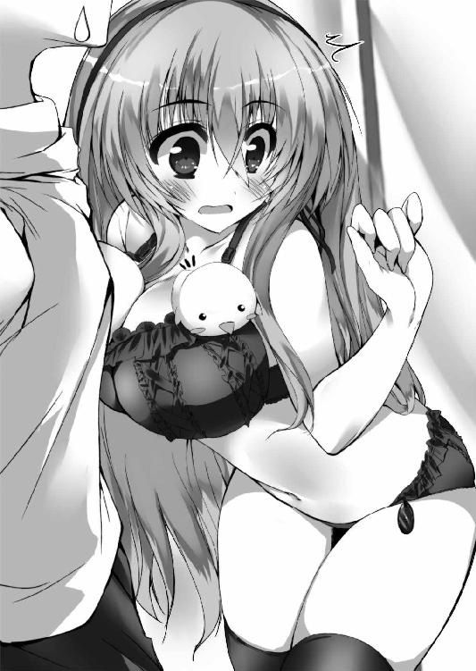
先輩の悲鳴を聞いた店員さんに外から不審そうに声をかけられて、密着したまま二人は息をのむ。
（ど、どうしましょう、先輩......っ）
（ひゃんっ。な、直輝クン、耳元で喋らないで......い、息がくすぐったいよ）
（す、すすすみません......！）
「あのぅ、お客様......？」
「あ、何でもないです！ ちょっとこのワンピが可愛いなぁと思ったら、思わず声が出ちゃって！ ごめんなさい、だから気にしないで下さいね！」
「はぁ、そうですか。では、何かありましたらお呼び下さい」
釈然としない声のまま店員さんが去る。それから他のお客がきたタイミングを盗んで、直輝、織絵先輩の順番で逃げるようにショップを脱出した。
「メ、メフィのせいで大変な目に遭ったわよ......っ」
「うむ、だからすまんと言っておる」
「ぜんっぜん！ 悪いと思ってないでしょ!?」
アーケードの隅ではぁはぁと息を整えながら、ふと先輩と視線が合う。う......っ、と互いに赤くなって目を逸らすが、ふいに先輩が堪えきれなくなったように噴き出した。
「なんか直輝クンと出会ってからこんなことばっかりだね」
「そ、そうですね」
直輝としては恥ずかしさと申し訳なさで死にそうなのだが、先輩はどこかツボに入ったのかクスクスと笑い続ける。
（せ、先輩が嫌じゃないなら、い、いい......か？）
いやでもどうなんだろう、と思いながら頬をかいていると、さっきよりもさらに楽しそうに「よしっ」と先輩が言った。
「次は映画館に行くよっ！ デートの定番って言ったらやっぱり映画だもんねっ」
それから十分後、映画館に着いて、先輩が好むものとなるとやっぱり甘ーい感じのラブストーリーとかなのだろうかと思ったらまさかのリバイバル・カンフーアクションで度肝を抜かれた。
「織絵......妾は今日ほどお前の感性を残念に思ったことはない。趣味丸出しすぎじゃろ」
「え、なんで!? 面白かったでしょ？ ラストでチュン老師の拳が唸りを挙げてボスのどてっぱらに風穴開けるところとかすごいカタルシスがさ！」
「そうかそうか、帰ったら妾が辞書で〝ムード〟という単語を引いてマーカーしておいてやるからな？」
そうこうしているうちに気づけば陽が落ちてきて、夕方近くになってしまっていた。結局今日のこれは本当にただのデートだったんじゃないか、と今更ながらに変な緊張がじわじわと滲み始める。そんな直輝の内心を知ってか知らずか、先輩の「一休みしよっか」という提案で生徒会の御用達だというモダンな感じの喫茶店に入ることになった。
先輩が「いつもの席空いてます？」と慣れた感じで訊いて通されたのは店の奥のテーブル席だ。角度の関係で他の席からちょうど死角になっていて、ここならメフィさんが喋っても目立たなそうである。
「えーと、わたしはティラミスを──五人分で」
「ご......っ!?」
飲んでた水を吹きそうになったのは直輝だけで、目の前の織絵先輩は至って普通、店員さんもいつものことだと認識してるのか別段聞き返すこともなく去っていく。
「す、すみません、五人分って......ええっと、あ、ひょっとしてメフィさんが四人分食べたりするんですか？」
「普段なら煉獄の炎で焼き尽くしてくれんばかりに無礼な物言いだが、今回ばかりは聞き流しておいてやろう。驚け、ぜんぶ織絵が食う」
「え......っ」
「だ、だって好きなんだもんっ。しょうがないじゃない？ だいじょーぶっ、わたしっていくら食べても太らない体質だから！」
「そういう問題でもなかろうに......常識の問題だ、常識の」
そうして運ばれてきた五皿分のティラミスを本当に先輩一人でそれはそれは幸せそうに食べ始めた。その様子はバックにお花畑でも出てきそうで、この世の幸せ独り占めという感じである。最初は慄然としたが、見てたらなんだかほのぼのしてきた。
「直輝クンも食べる？ 一口だけだったら分けてあげるよ？」
「一口だけとか自分でケチくさいと思わんか？」
「うっさい、ばかメフィ。直輝クン、はい、あーん」
「え、ええっと......っ」
やっぱりデートみたいじゃないかっ、と直輝の脳内は混乱の極みに達した。
（雪乃にはしょっちゅうされてたけど、でも今目の前にいるのは織絵先輩だし、っていうかこれ間接キスとかになるんじゃないのか......!?）
「ほら、直輝クン、早く。手、疲れちゃう」
「え、ああっ、は、はいっ......い、いただきます」
真っ赤になりながら、差し出されたフォークを一口で頬張った。つい今まで口にしていたコーヒーの苦みで痺れた舌に心地良い甘さが広がる。
「どうどう？ このお店のはわたしの一番のおススメなんだよ？」
「小僧、甘いものは大丈夫か？ 苦手なら無理に合わせんでもいいぞ？」
「いえ、美味しいです。動揺してたのそこじゃないんで......」
「ふふ、直輝クンも気に入ってくれて嬉しいよ。やっぱり美味しいティラミスは正義なのですっ」
「......お前の場合は度を越えた域だがな。小僧、いいことを教えてやろう。織絵のこれがどれくらい度を越えているかと言うと、その幻想偽典では主人公の老学者ファウストまでがティラミス食っておる」
「ちょ、メフィ!? それは誰にも言わない約束っ」
「え、それって保持者の精神性による改変ですよね？ そんなことあるんですか......？」
好きなケーキが好きすぎて偽典にも登場って。偽典についてまだ知識が浅い直輝からしても、ちょっとすごい。
「いや、普通にありえん。そんな前例聞いたこともない。そもそもティラミスが認知されてきたこと自体がここ十年ほどだからな。十九世紀の『ファウスト』に登場することがすでに噴飯ものぞ。まあ偽典ならではと言えばならではだが、それにしてものう」
「うー、会長や執行部のみんなにだって言ったことない秘密だったのに......。それに順番が逆っ。偽典のファウストがティラミス食べてるのを読んで、なんとなく気になってるうちにわたしも好きになったの。わたしの食い意地が偽典に影響したみたいな言い方しないでよっ。まったく、はぁ、飼い犬に手を噛まれるってこういう気持ちなのね......」
「ふむ、原典に沿うなら妾もヒヨコではなく尨犬こそが正しい姿だからな。その比喩は言い得て妙かもしれんぞ」
「あ、そういえば......」
二人の会話を聞いていて、ふと疑問に思ったことを直輝は口にした。
「織絵先輩とメフィさんの『ファウスト』ってどういう本なんですか？ 考えてみたら、ちゃんと聞いたことなかった気がして」
「そっか、そういえばちゃんと話したことなかったっけ。わたしの『ファウスト』、その原典はドイツの文人ゲーテが書いた長編の戯曲なの。それは老学者ファウストが悪魔と契約して、人の世のあらゆる享楽と悲哀を経験していくという物語ね。永久に続く旅路のなかでファウストがその生に満足をしたなら魂は悪魔へと譲渡されてすべては終わる、そういうあらすじ。わたしの偽典の場合は結構改変がされてるんだけどね」
「ファウストがティラミス食うようにな」
「それはもういいわよっ。で、わたしの能力の起点になっている記述は、ファウストがブロッケン山の頂で不死の霊薬を飲み干す箇所だね。これがそのままわたしの不死性に繋がってるの。おかげで偽訳解放中は斬られようが刺されようがすぐに元に戻るっていうワケ。あとはその不死の霊薬を満たした器には燃え盛る焰が上がってるって記述が原典・偽典の両方にあってね、それが炎を使役する能力を生み出してるんだ」
「そっか......元になる記述が明確にあって、先輩の能力は発現してるんですね」
「うん。偽典のファウストがブロッケン山に辿り着くまでは、わたしも今の直輝クンみたいに能力なしの偽訳解放だったよ。逆にそれを越えてからは記述が増える度に単純に能力が上がっていった感じかな」
「あの、一つ気になることが......。さっきの話、ファウストがその生に満足したら魂が悪魔に譲渡されてすべてが終わるって......そういうラストだとしたら、あの、先輩の偽典の記述が最後までいったら......それってどうなるんですか？」
一瞬、場の空気がしんと静まり返った。小僧、とメフィさんが口を開きかけたところで、そこに被せるように先輩が先に話し出す。
「そうそう、それを説明してなかったよね。偽典の記述をそのページの最後の最後まで行き着かせ、完遂させること。それこそが各々の保持者の目指すところなんだ」
それは有無を言わせない口調だった。何か不可思議な違和感を感じつつ、けれど直輝はその説明に聞き入った。
「幻想偽典が三つの要素が絡み合って現界することはもう理解出来てるよね？ 『学園の磁場』を土台に『保持者の精神性』を指針にして『ベースとなる大著』を引き出す。そして、それら三つの複合として幻想偽典は生まれるの。で、その二つ目『保持者の精神性』って具体的にはどんなものか、覚えてる？」
「えっと確か......願いや欲望、ですよね？」
「そう、その通り。そしてここからが重要。幻想偽典の記述が完遂される時、それはつまりね、そこに込められた願いが昇華される時なの」
「願いが昇華？ それって......」
「願いが叶うってことだよ」
あまりに直接的なその返答に直輝は息をのんだ。にわかには信じがたいが......しかしこれまで見てきた幻想偽典の奇跡とさえ言える力を思えば、それすらも不思議ではないと思える。
「ただ、原典の内容が保持者の精神性に引きずられて改変が起きてるように、願いの方も原典の影響によって歪められていることがよくあるの。そうでなくても『保持者の精神性』っていうくらいだから、願い自体が保持者の無意識下のものだったりして本人が思ってもいなかったものなこともあるし。けれど、そうであっても『願いが叶う』。この一点に魅了される保持者は決して少なくないわ。偽典に積み重ねられたすべての記述が一斉に力を放ち、そこに込められた願いが昇華される瞬間、それを保持者たちは『終止符の地平』って呼んでる。それがすべての保持者の目指す各々の到達地点ってわけ」
「自分の願いが叶う『終止符の地平』......なるほど、キルケゴールみたいに他人を傷つけてでも力を増そうとする奴がいる理由が、今やっと分かりました」
無論、直輝からしてみれば、ふざけるな、の一点だ。あの仮面の男が抱いているのが、どんな切実な願いかは知らない。だが、そのために雪乃や生徒たちを犠牲にしようとするなど許さない。
「あ、でもそれじゃあ......織絵先輩の『ファウスト』に込められた願いって、どんなものなんです？」
「わたし？」
「はい。あ、もちろん歪められてたり、無意識下だったりするのかもしれませんけど、織絵先輩が自分でこうじゃないかなって思ってるものはあるんじゃないかな、と思って......。それとも聞いたらダメなことですか？」
以前に、人によっては自分の偽典を知られたくない保持者もいる、と聞いていたのでひょっとしたらかなりデリケートな問題なのかもしれない。
一瞬、不安に思ったが、先輩が浮かべたのはふわりとした笑顔だった。ただ、それはどこか影の差したもので、
「──忘れちゃった。『ファウスト』は永劫ってくらい長い時間を流浪する物語だからね。わたしも偽典を手にしてからの慌ただしい日々のなかで、自分の願いなんてすっかり忘れちゃったんだ」
その言葉に先輩が人々を守り続けるために費やした時間の重さを感じて、直輝は口をつぐんだ。
──自分はこの人に追いつけるだろうか。
ふいに天啓のようにそんなことを思った。守るべき者を、守る力を持つ人。実際にそういう時間を積み重ねてきた人。あの夜、初めて見た黄金の姿が自然に瞼に浮かんだ。
「他人事のように聞いておるが、小僧、お前も偽典の保持者なのだからな。自分の願いがどんなものか、自覚はあるのか？」
「え？ あ、お、俺ですか？」
思わぬ問いかけをされて直輝は我に返る。
「そうだよ、直輝クン。たとえ正解じゃないにしても、自分の願いを自覚することは原典の知識を得るのと同じで、偽典の内容を理解することに繋がるからね。偽訳解放を成すためにも重要なことなんだよ。......って言っても、直輝クンの願いは決まってるか。雪乃ちゃんを助けることでしょ？」
「あ、えっと、それは......はい、きっと」
「それを再確認してもらえたなら、今日のデートも意味があったってものだよね」
「え？」
「どういうことだ、織絵」
直輝は元より、メフィさんも先輩の言葉に目を瞬いた。
「直輝クンの願いは雪乃ちゃんを助けること。それを今までよりもっと深いところで自覚すれば、偽訳解放に近づけるんじゃないかなって思ったの。雪乃ちゃんじゃない相手とのデートは逆に彼女のことを思い出させたでしょ？ 今日、直輝クンが何度も雪乃ちゃんのことを思い出してるの、隣にいて分かったよ。それがキミの願いの根本、その願いをちゃんと念頭におけば、イデアと剣を結びつけるきっかけも何か掴めるんじゃないかな？」
「そ、それじゃあ、何か？ お前が突然デートだのと言い出したのは、小僧の特訓の一環だったというワケか？」
「あれ？ わたし、最初からそう言わなかったっけ？」
あっけらかんとした先輩の言葉に、メフィさんが目をむいた。
「言っとらんわ！ なんじゃ、頑固者がとうとう素直になったかと気を遣っておった妾は見事に道化か!? あー、もー、まったくっ、一体物が分かるというのはともすれば自惚れと浅薄の別名に過ぎんなぁ！」
「何それ、なんで原典引用するほど怒ってるのよっ。っていうか、そんなこと考えてたの!? そんな的外れな期待して逆ギレされても困るわよ！」
何やらいつものように口ゲンカを始めた先輩とメフィさんを横目で見つつ直輝は、うーわー、デート中に妹のこと考えてたのバレてたんだー、っていうかそんなことまで分かるって女の人怖い、もうワケ分かんない......とわりとでっかいショックを受けていた。
というか、織絵先輩の言い方だと雪乃がまるで彼女みたいに聞こえて、二重に恥ずかしい。夏生の物言いじゃないがシスコンとか思われただろうか。
......しかしそれはそれとして、行き詰まっていた自分のことを先輩がここまで考えていてくれたことは、素直にありがたかった。だから──。
「あの、織絵先輩、メフィさん。デートの最後に俺も一つだけ行きたいところがあるんですけど、いいですか？」
そんなふうに二人にお伺いを立ててみた。
＊ ＊ ＊
織絵とメフィが直輝に連れてこられたのは、普通科一年の寮だった。ただし男子寮ではなく女子寮である。
「原則立ち入り禁止ですけど、今は雪乃が急病なので許可が下りたんです。ルームメイトの子も席を外してくれてるんで、楽にして下さい」
そう言って直輝はとある部屋、一人の少女が眠るベッドの前で腰を下ろした。まるで本当にただ眠っているかのように安らかな寝息を立てる少女のその頬は、蝋で出来ているかのように不健康に白い。彼女が件の青柳雪乃だそうだ。
「ごめんな、雪乃。ここんとこ様子を見に来なくてさ。でも、忘れてたわけじゃないんだぞ。雪乃を目覚めさせる方法をずっと探してるんだ。だから、もう少し待っててくれ」
彼女に語りかける直輝の表情はとても穏やかで優しかった。状況が状況だからだろうけど、織絵の前にいる彼はいつもどこかで張りつめている。でも今だけはそんな強張りはなく、とても自然に微笑んでいた。おそらく、これが彼本来の顔なのだろう。
織絵はなんだか落ち着かなくなって、何かを誤魔化すようにぐるりと部屋を見渡す。織絵が以前に住んでいた二年の女子寮とは間取りが少し違うようだ。
「綺麗な部屋だね。直輝クンの部屋とちょっと雰囲気が似てるかな？」
「ええ。雪乃って根は大雑把なんですけど、整理整頓がクセになってるみたいなところがあって......ルームメイトの子の持ち物まで勝手に整頓しちゃってたらしいです」
「あはは、それはすごいね。んー、察するところ雪乃ちゃんはそれにプラスして新しもの好き？ 置いてある小物とかインテリア、流行のモノが揃ってるよ。......と、これだけちょっと毛色が違うね？」
織絵が目を留めたのは、ベッドのサイドボードに置いてある一冊の絵本だった。トレンドと機能美を追求したような部屋のなかで、その一冊だけが妙に年代を感じさせるほど古めかしい。
「ああ、これですか。本当、最初はまだとってあることにびっくりしたんですけど、この絵本......俺が描いたものなんです」
そう言いながら手に取って、直輝が懐かしそうに苦笑した。
「直輝クンが？」
「はい。って言っても子供の頃のことなんですけど......。元ネタは雪乃がどこからか聞いてきた話だったんです。発祥がどこかも分からないその物語を読みたいって言うから、二人でいろんな本屋や図書館を探しまわって、でもどこにもなくて......もうどうしようもない、ってことで雪乃がかすかに覚えてた話を俺が絵本にしてやったんです。下手くそでしょ？ でもなんでか雪乃はすごく喜んで、それでいまだに持ってたらしいです」
「へえ、そうなんだ。ふふ、確かに個性的だけど、手作り感が満載で可愛いと思うよ」
そんな子供の頃から一緒だったってことは、二人は幼馴染とかだったのだろうか。物心つく頃にはもう一人だった織絵は二人の関係を少しだけ羨ましく思う。
「最初に幻想偽典......『呪いの白い本』の噂を俺に教えたのも雪乃だったんです。今ならそれが幻想偽典のことだって分かりますけど、あの時は妙に意味深な言葉でちょっと意味が分からなかったんですよね。なんて言ってたんだっけ、雪乃......」
途中から独り言のように呟いて考え出した直輝はやがて、ああ、そうだ、と顔を上げた。
「──それはみんなの願いを集めて、本当の世界を呼び寄せるための本」
「本当の世界？」
直輝の呟いた、かつて雪乃が言ったというその言葉に織絵はわずかに首を傾げた。学園に蔓延している噂のほとんどは把握しているが、そんな内容のものはあっただろうか。
（織絵......）
すると、胸ポケットにいたメフィが直輝には聞こえないほどの小声で話しかけてきた。
（何かがおかしいぞ）
（メフィ？ 何かって何が？）
（小僧の手にしているあの絵本......もしや幻想偽典ではないか？）
（はあ？ 何言ってるのよ、あれは直輝クンの手作り絵本でしょ？ 歴史的な大著でないものが偽典なわけないじゃない）
（想念の塊である妾には偽典の気配が感じ取れるのだ。この部屋には不自然なほど偽典の気配が満ちておる）
（ばか......眠り病の雪乃ちゃんが目の前にいるのよ。それってどう考えてもキルケゴールの『死に至る病』の残滓でしょ？）
（道理で言えば確かにそうだ。だが、しかしな......）
（今の話、直輝クンにしたらダメよ？ いくらなんでも気分よくないだろうから）
（むぅ、それはそうなのだが......）
そこで会話を打ち切ると、ベッドの前の直輝がちょうど口を開いた。その目はまだ古めかしい絵本を見つめている。
「......先輩、さっき喫茶店で俺の願いは雪乃を助けること、って言いましたよね。でもたぶんそれ、ちょっとだけ違うんです」
「......え、違うの？」
「はい。俺は雪乃がこんなふうになってから助けるんじゃなくて、雪乃がこんなことになる前に守ってやらなきゃいけなかったんです。出来るなら......俺は大切な人を守れる奴になりたかった」
手に持った絵本を指でなぞりながら、直輝がどこか遠慮がちな視線でこちらを見た。
「だから......俺の願いはひょっとしたら、『織絵先輩みたいになりたい』なのかもしれません」
「わたしみたいに......？」
「はい。先輩には守れるという自負があって、それを成せるほどの力がある。だからあの夜、先輩の言葉とその姿を見てその瞬間に、俺は憧れたのかもしれない。俺も織絵先輩みたいに胸を張って『自分は守れるんだ』って言えるようになりたい、って」
「......」
「だから俺の偽訳解放は剣として現れたんだと思うんです。大切な人を守るための力として。今日、先輩がその、デートに連れ出してくれたおかげでそれに気づけました。きっと剣の顕現にも近づけたんじゃないかと思うんです。織絵先輩みたいになれるようにって思えば俺は──って、せ、先輩っ!?」
直輝の言葉は途中で途切れた。その言葉が終わるより早く、堪えきれなくなった織絵が彼のことを抱きしめたからだ。
「......あー、もう、キミってやつは」
思わず染み入るように呟いた。ぎゅっと力を込めた両腕のなかで、彼が驚きで身を強張らせているのが分かる。でも、離してなんてあげない。彼女さんが隣りで寝てるけど......うん、あとで責任を持って怒られればいい。
「そんなこと言ってもらったの、わたし、初めてだよ」
偽典を手にしたその日からずっと戦い続けてきた。それはもう自分の願いなんて忘れてしまうほどに延々と。労いなんて求めてないし、感謝なんてされる謂れもない。全部自分で決めたことだから。
それでも、彼の言葉をちょっと嬉しいと思ってしまった。頑張ってきてよかった、と少しだけ報われた。
「ね、直輝クンっ。何かしてほしいことない？ わたし、今すっごく機嫌がいいんだ。今ならおねーさん、どんなお願いでもきいちゃうかもよ？」
少しだけ彼を解放してあげて真っ赤になってる顔を見つめながら言う。直輝はまだ目を白黒させてるが、やがて何かに思い至ったようにぽつりと言った。
「......じゃ、じゃあ、シチューを作ってもらえますか？」
「ん、シチュー？」
「はい、それで出来ればニンジン抜きで。それがあれば......この先も頑張れる気がして」
「手作り料理ってことね。んー......オッケー、任せて！」
「織絵の手作りだと......っ!? ちょっと待て、それは死人が出もがぁっ!?」
いらんこと言おうとしたメフィのクチバシを後ろ手に強制ロック。ガッツがあればきっと何とかなるはずだと織絵は己を信じる。
「よし、そうと決まれば今から調理室を占拠しなくちゃ！ 楽しみにしててねっ」
多少物騒なことをのたまって、織絵は彼へとやる気いっぱいに片目を瞑る。
＊ ＊ ＊
もう少しだけデートが延長になった、それから一時間の後。直輝の前に現れたのはこの世の終わりのように落ち込んでいる織絵先輩と、鍋の中でボコボコとドドメ色の泡を吐く『でろっとした何か』だった。イメージ的には絵本なんかに出てくる引きつった笑い声の魔女が大釜で煮詰めているアレに近い。
織絵先輩、意外にも料理は苦手らしかった。
「えーと、その......」
とりあえず何かフォローをせねばと直輝が口を開きかけたところで、何も言わないでっ、と言うように先輩がぶんぶんと首を振った。
「ち、違うのっ！ これはちょっと隠し味の分量を間違えちゃったというか、『弘法にも筆の誤り』的な、そうっ、言ってみれば『弘法な料理上手の先輩にも時たま微笑ましい誤り』的な感じ？ ねっ、そうよね、メフィ！ 普段はちゃんと出来てるものね!?」
「ねっ、ではないわ。いい加減に懲りんか、猫かぶり娘め。お前は隠し味に非合法な劇薬でも使っておるのか？ 手違いで済めば警察に危険物処理班など必要ない。その異臭を放つ鍋の始末をどうつけるつもりだ、一体」
「だいじょーぶっ、失敗作はスタッフのメフィがあとで美味しく頂きました！」
「殺す気か!? 動物虐待で訴えるぞ!?」
「ええと、先輩？ その、俺もいきなり手料理作ってほしいなんて図々しかったです。すみませんでした。あの、どうか気にしないで下さい」
「直輝クンやめてお願い謝らないで！ あ、そうだっ」
なんだか居たたまれなくなって頭を下げた直輝の前で先輩がぽんっと両手を合わせる。
「シチューは難しいけど、お菓子ならどうかなっ？ それなら材料とか分量が決まってるから万が一の失敗もなさそうだし、織絵先輩の手作りティラミスでティータイムとかどう、どう？」
「オチは見えてる気がするがな......」
「メフィ、うるさい！ 次はちゃんと勉強してからにするわよっ。そんなわけでえっと、ダメかな、直輝クン......？」
上目遣いでそう言われ、直輝はちょっとたじろぐ。最初に欲したのは幼い頃の記憶に残るシチューだが、先輩が自分のために作ってくれるということなら、ティラミスだってもちろん嬉しい。......コンロの上の鍋を見れば若干の不安はないではないが。
「えっと、楽しみにしてます」
「やった！ じゃあ、約束ね」
「あ、はい......約束」
先輩が差し出した小指に少し躊躇ってから直輝は指を絡めた。最後にそんな小さな約束をして、先輩とのデートは幕を閉じたのだった──。
五章 ─絶望ノ空─
明けて、日曜。
今日は朝から先輩とは別行動だった。午前中は偽訳解放の訓練を一人で行い、昼を過ぎてから直輝は待ち合わせ場所の温室に向かう。正面玄関から出ると、ちょうど寮の柵のところで向こうから歩いてきた夏生に出くわした。
「おっ、直輝。ちょうどいいや、今そっちの部屋に行くところだったんだ。昨日頼まれた本、料理研から借りてきて俺の部屋にあるから持ってけよ」
「あー、サンキュ、夏生。さすがこういうことは仕事が早いな。......と、でも今からちょっと出かけるから俺の部屋に入れといてくれ。くれぐれも先輩の私物には触れないように」
夏生に頼んでいたのはお菓子の作り方の本だった。そういう本の善し悪しは普段から料理に親しんだ人の方が詳しいだろうと思って、ティラミスの作り方が載ってて初心者にも分かりやすいものを、と夏生に昨日のうちに頼んでおいたのだ。
「けど突然お菓子の本なんてどういう風の吹き回しよ？ 直輝、そんな趣味あったっけ？」
「いやまあ、最近目覚めたんだよ」
ティラミスなんて難しそうだが、作り方さえ知っていれば横にいて手伝うことも出来るかもしれない。そんなふうに考えたのだ。
「ふーん、まあいいけどな。っていうか、今日は弓川先輩と一緒じゃないのか？ あ、もしかしてとうとうフラれたか!? だから青春の傷を忘れるために新たな趣味に目覚めた的な!? ようし、今夜はお赤飯だ！」
ちなみに夏生にはいまだに先輩が直輝の部屋に住んでることに関して、ちゃんとした説明はしていなかった。
「いや、あのな、フラれるっていうかそもそも......いや、えーと」
つい流れで否定しようとして、どう言ったもんだろう、とちょっと困った。一応、織絵先輩はカモフラージュのためにそれっぽいことを仰ってくれてるので、ここで自分が否定するのも違う気がする。とりあえず、いつも通り適当にはぐらかそうと思い直したところで、ふいに夏生が言った。
「雪乃ちゃんだろ？」
「え？」
唐突に妹の名が出てきて、顔を上げる。教室の席順も寮の部屋もすぐそばな悪友はやれやれと言った感じで苦笑していた。
「ここ最近、直輝と弓川先輩が四六時中一緒にいる理由だよ。眠り病が『呪いの白い本』の仕業じゃないかって噂は、学園の情報通である夏生様の耳にはちゃーんと届いているからよ。んで、今まで学園で噂に上った『呪いの白い本』の話を辿ってみると、ちょいちょい生徒会執行部の影がちらつくんだよ。で、それを踏まえて考えてみると、今の直輝の状況が綺麗に繋がるわけだ。まー、呪いのなんちゃらなんて与太話だと思うけど、そういう分かりやすい隠れ蓑の裏側に確固とした事実ってのがあるもんだしな」
「......なるほど、今回はその推測を根拠に俺に口を割らせようってか？」
「いや、正直今のはこじつけ」
夏生は大げさに肩を竦めてみせた。
「単純に、雪乃ちゃんが大変な時にえろえろな青春を謳歌出来るほど、直輝は大物じゃねーだろうな、ってのが序盤から一貫した俺の解答」
そう言うと、夏生はぽんとこちらの胸に手帳のようなものを押しつけてきた。
「これ、俺が集めた学園の『呪いの白い本』の噂大全集バージョン２・５最新版。ちょうどお菓子の本と一緒に今から直輝の部屋に届けようと思ってたんだ。正直、役に立つかは分かんねえけど、持ってってくれ」
「は......？ な、なんだよ......え、これ、俺のためにわざわざ調べ上げたのか？」
「直輝のためじゃねえですよ、雪乃ちゃんのためだ。『呪いの白い本』の噂の裏にどんな事実があんのかは知らねえけど、もしその噂に何か意味があるなら俺に出来るのなんてこれくらいだからな。雪乃ちゃんが目覚めたら、デートの一つくらいはセッティングしてくれよ、お兄さん？」
一方的にそう言うと、夏生は手帳を押し付けて寮の方へ歩いていく。直輝は苦笑してその背に振り向いた。
「デートは分かんないけど、雪乃の手料理が出た時はこっそり呼ぶよ」
「期待してるぜー」
後ろ手にひらひらと手を振って、なんだかんだで人の良い悪友は去っていく。
＊ ＊ ＊
そうして直輝と別れた後、寮の玄関前。ちょうど木立の影で暗がりになった場所。
「ええ、期待していますよ......」
夏生の右肩から、ずるりと赤紫の茨が現れた。
＊ ＊ ＊
夏生と別れた直輝は表通りを進み、旧校舎通りに入った。
校舎の他にも様々な施設や実験棟のあるこの学園には便宜的に名付けられた道が多くある。旧校舎通りもその一つで、もう使われていない解体中の校舎を右手に温室へ向かっていると、路上の自動販売機の前に人が蹲っていた。
「あの、どうかしたんですか？」
「いえ、大したことではないんです。どうかお気になさらず......」
物腰の柔らかい、背の高い男子生徒だった。知的で気さくな雰囲気なのだが、なぜか直輝の方ではなく思いっきり自販機に向かって喋っている。
「あの......こっちです」
「ああ、すみません。コンタクトを落としてしまったようで、何も見えてなくて」
「えっ、大丈夫ですか？ 俺、探します。この辺りですか？」
「ちょうど飲み物を買おうとしていたところなので、自販機の近くだと思うのですが......ご親切にありがとうございます」
「いえ、困った時はお互い様ですから」
なんとなく行きがかりでしばらく地面を這うようにして探したものの、落ちたコンタクトを見つけることは出来なかった。役に立てなかったことを謝ると、男子生徒は「気にしないで下さい」と言って、探してくれたお礼代わりだとコーヒーを奢ってくれる。
「すみません、なんだか逆に申し訳ないです」
「いえいえ、必死に探して下さった貴方の気持ちが嬉しかったですから。申し遅れました。私は緒方成一と言います。工学科の三年生です」
「あ、日比野直輝です。普通科の一年です」
成り行きで同じベンチに座って缶を開けた。織絵先輩との待ち合わせ時間にはまだ少しあるので、多少時間を潰してもいいだろう。
緒方と名乗ったその三年生は驚くほど話しやすい人で、よく聞く音楽や好きな本に始まり、中学の思い出や成績のこと、果ては両親が離婚してからの苦労話をして、そして気づけば目覚めなくなった雪乃の話までしてしまっていた。
「......そうですか。まさか日比野君の妹さんが眠り病の被害者だったとは。私の知り合いにも何人かいますよ。非常に痛ましいことですね。早く事態が改善すればよいのですが......」
「はい、俺も早くなんとかしてやりたいって思ってるんです、けど......」
喋っている途中でふいに違和感がして直輝は言葉を止めた。今、目の前の三年生はなんと言った？
──眠り病の被害者だったとは。
夏生がそうであるように、眠り病の噂自体は一般生徒も知るところだ。だがしかし......被害者というその言葉は加害者がいることを知っている人間だけが口にする言葉だ。
「おや、どうしました、日比野君？ ......ああ、なるほど」
目を見開いている直輝の様子を見て、緒方成一は一つ頷いた。
「私の言葉尻の差異に気づいたのですね。君はなかなか洞察力に優れた人のようだ。失礼、確かに私も眠り病の噂の裏側を知るものです」
そう言うと、緒方はブレザーの裏ポケットから一冊の本を出して、呟いた。「──偽訳再現」と。現れたのは、青い光を放つ一冊の本。
「──っ」
がたっと直輝はベンチから立ち上がる。だが同時に、落ち着け、と脳内で必死に自制する。全校生徒の絶対数と比べればごく少数だが、学園内には何人もの保持者が存在する。だから、光の色だけで目の前の人物がキルケゴールとは決めつけられない。
むしろ、織絵先輩のいないこの状況で緒方成一がキルケゴールならば、直輝の命運は完全に尽きている。
「あなたは、一体......っ」
現状、直輝の側からは青い光を放つ幻想偽典の裏表紙しか見えない。表紙に刻まれている銘と著者名が何か、それが問題だ。
「申し訳ない。もう少しゆっくりお話をした後で、こちらも正体を明かすつもりだったのですが。すでにお気づきでしょうが、私が今ここにいたのは偶然ではありません。君と接触するきっかけを作りたかっただけでね、探して頂いておいてなんですが私の両目は裸眼で２・０です」
「そんなことは聞いてない......っ、その偽典の表紙をこっちへ向けろ！」
「まあまあ、落ち着いて。それよりまずは君も幻想偽典を現界して頂けませんか？ 昼間ですからこんなにきらきら輝く本を持っていたら目立ってしまうでしょう？ 共鳴結界による人払いが必要です」
「く......っ、──偽訳再現」
共鳴結界とは幻想偽典を行使する際、学園の磁場と共鳴して発生させる結界のことだ。その場にある偽典の数が多くなるほど結界は力を増し、偽典を持たない一般人の無意識下に作用して人を遠ざけたり、偽典で破損した建造物の自動修復を行う作用がある。
相手のペースに乗せられるようで癪だが、偽典の保持者と対峙する際のセオリーとして織絵先輩からも教えられている。
直輝が七色に輝く『イデアの片翼』を現界させると、緒方の手にある偽典も一瞬だけボォとその青い光を呼応させた。二冊分の偽典によって共鳴結界が強化された証だ。
これで多少の騒ぎでは一般人はこの場に近寄ってはこないはずだ。たとえばそう、万が一戦闘になったとしても。
「ふむ、その表紙......プラトン。ああ、実によい著者です。素晴らしき理想主義者ですね、私も共感しますよ」
直輝が偽典を出した後も緒方は表紙をこちらに向ける気配を見せない。まるで焦らすようにその言葉は続く。
「いえ、実は私の幻想偽典の著者も似通ったところがありまして。彼の者は実父から引き継いだ妄執的な感情と不義理を背負いながら、しかし懸命に生きました。それはそう、ただひたすら正しき人の在り方を模索して。君のプラトンもそうでしょう？ 不運と悲劇の連続、それでも理想を求めて生き続けたプラトンに君も感銘を受けたはずだ、違いますか？ プラトンが世界の本質を『イデア』と呼んだように、私の偽典の著者も人の真価の所在を『自己』という概念に求めましてね。両者はまるで寄り添う雛鳥のように似通っている。日比野君、私はこう思うんです。私と君は分かり合える。今日、君に会いに来たのはそれが理由です」
演説めいた緒方の言葉を聞き流しながら、直輝は必死に考えていた。この男が動くより前に先手を取って正体を知る手はないか。もしもキルケゴールだと確定すれば、その瞬間になんとしてもこの場を離脱して織絵先輩と合流しなくてはならない。千載一遇の好機だと本能が叫んでもいるが、それでも一人で向かってはいかないというのが先輩との約束だ。
（やっぱりこの手しかないか......っ！）
一瞬の隙を狙って直輝はベンチへ座る緒方へと飛び掛かった。向かう先は右手の幻想偽典。
「私がこうして君に面と向かっ......おっと、会話中に唐突に手を伸ばすとは無粋ですね。ですが偽訳解放前の偽典はあらゆる保持者にとってのアキレス腱。そうおいそれと奪われるわけはないでしょう？」
直輝の手が届く寸前で緒方は腕を振り上げて躱してみせた。だが、こちらの意図はその先だ。
「人違いだったら弁償するよ！」
躱された手が緒方のシャツを掴み、そのまま力任せに引っ張り上げる。ボタンが弾け、緒方の半身が露わになった。
偽訳解放時の多くの偽典には身体強化の付加効果があり、それには回復力も含まれる。ゆえにある程度のダメージでは致命傷に至りはしないが、しかし織絵先輩の不死ほどの超復元は無論望めない。つまり緒方成一がキルケゴールなのだとしたら、その右肩にはあの夜に直輝のつけた傷痕があるはずなのだ。
──果たして、そこにあったのは上腕から肩先にかけて走る、裂傷痕。
「......っ、やっぱりお前がキルケ──」
「そのような確証を得たなら、喋るより対処が先ではないですかね？」
緒方の手のなかの偽典がふいにこちらを向く。その表紙が直輝の目に映るより先に、異口同音に力ある言葉が放たれた。
「「──偽訳解放！」」
互いの偽典が紙片を舞わせて弾けた瞬間、緒方の痛烈な蹴りが直輝の腹へと直撃した。
「──っ!?」
悲鳴を挙げる間もなく、後方に跳ね飛ばされる。両者共に偽訳解放の中途だったのが幸いしたのか、飛ばされた距離は長いがダメージ自体は大きくない。
「──プラトン・『イデアの片翼』！」
歯を食いしばる間も惜しんで、力ある言葉の続きを口にして偽訳解放を完了させる。全身を覆うように七色の輝きが舞い、手のなかに剣状の結晶が生まれかけるが、それは形になることなく一瞬で霧散した。
（......クソッ、まだダメか！）
織絵先輩のようになりたい、という願いを自覚したことで能力発現に近づいたという感触はあった。それは確かに剣へ近づく一歩となっていたものの、まだ完全な顕現には足りないらしい。
「──キルケゴール・『死に至る病』」
数メートル先のベンチの前で緒方も立ち上がり、偽典から紙片を舞い散らせていた。それらの青い光は緒方の体へ溶け込みながら、同時に闇のような深い色の外套とあのおぞましい──真っ白な仮面を形作った。決して見間違いようもない、あの夜に見た仮面の男がそこにいた。
「キルケゴール......っ」
「ええ、いかにも。私が幻想偽典『死に至る病』の保持者、君とファウストのお嬢さんがキルケゴールと呼ぶ男です。息災でしたか、プラトン君？」
そう言って緒方──キルケゴールは恭しく一礼してみせる。
本来なら肩に傷痕があることを確認した瞬間に殴るでもなんでもしてその隙にこの場を離脱するつもりだった。だが敵の方が一枚上手だった。間髪いれずに蹴りを入れられて機を逃し、その上おそらくすでに彼我の距離はキルケゴールの得意とする間合いになっている。
「幻想偽典に手を掛けると見せかけて、肩の傷を確認しにきたのは良い機転でした。この傷だけは私も隠したくても隠しようがない。正直に言うとね、私はこんなクリティカルな一撃を受けたのは初めてなのですよ。この数日、じくじくとこの傷は痛みました。無論、君を恨めしく思ったこともある。だがいつしか痛みは君への執着となった。そして気づいたのです。ひょっとしてこれは、私と君を繋ぐ運命なのではないかと！」
「耳にするだけで気持ち悪い話だな」
「いえいえ少しゆっくりと話を聞いて頂きたい。というより、途中から私がキルケゴールであることはすでに承知の上かと思っていたのですがね？」
「そのわりに表紙を見せないようにして勿体付けてくれたじゃないか」
「ふふ、瀬戸際のスリルをご用意するのもホスト側の務めと心得ているのでね。では、次はこのような趣向はいかがです？」
パチンとキルケゴールが指を鳴らすのと同時、青い光が辺りに散った。それらが地面に下りると同時に黒鋼色の茨が伸び始め、寄り集まり、瞬く間に人型を形成する。
「な......っ」
「有り体ですが、命名するのなら茨人形と言ったところですか。とりあえず君が退席しないよう、辺りを囲ませて頂きました」
キルケゴールの言う通り、青い光から生じた十数体の茨人形は直輝を取り囲むように円陣を組んでいる。完全に退路が断たれた。
「馬鹿な、お前の茨は闇から出てくるもの！ こんな明るい昼間には使えないはずじゃ......っ」
「その推測は間違いではありませんよ。ただし、該当するのは赤錆色の茨だけです。あれは私自身の絶望を顕現したものですから。茨人形を形成する黒鋼色の茨は、ご覧の通り。ああ、安心していいですよ。これらは赤錆色のものと違って、触れても眠り病に堕ちることはありませんので」
言葉と同時、周囲の茨人形が一斉に迫ってきた。
「クソ──ッ」
目の前にきた一体に破れかぶれで拳を突き出す。偽訳解放によって強化された拳は直輝自身、今までの人生で経験がないほどの速度と膂力を持って突き進む。だが、
「──っ!?」
殴りつけた端から手の皮が裂け、血が噴き出した。茨人形の方は顔の形をしていた部分が多少めり込んだだけだ。
「おやおや、なんと痛ましい。それはただ人の形をしただけの茨の塊ですよ？ 触れれば傷つくのは君の方です。子供でも分かる理屈だと思いますが？」
「くっ......この！」
痛みに歯を食いしばって腕を引き抜き、今度は足を振り上げて蹴りを狙う。だが、それより早く茨人形の振るった腕が直輝の腹を引き裂いた。
「が......っ!?」
茨人形の動きは人間と遜色ないほどに早い。茨自体が刃物ほど鋭くないのと偽訳解放の身体強化によって致命傷には至らないが、肌をこそぎ取られる痛みに一瞬で意識が刈り取られそうになる。
（織絵先輩はこんな痛みにずっと耐えてたのか......っ）
「ふふ、良いですよ。君も存分に痛みを感じて下さい。それは私への執着になり、やがては二人で明日を創る絆となるでしょう！」
距離を取ろうとしたところに背後から別の茨人形が襲い掛かってきた。鞭のようにしなる茨の腕を屈んで避けると、すでにそこに別の茨人形が突っ込んできている。
（こんなの、さばき切れるかよ......っ!?）
左肩に茨を受けて痛みに仰け反り、体勢が崩れたところに膝めがけてもう一撃食らった。思わず倒れかかった瞬間にいくつもの茨人形が殺到する。
「おや、もうギブアップですか？ ああ、いや、まだ粘りそうですね？ では君が落ち着くまで少し講釈でもしましょうか。いいですか？ あらゆる悲劇と不幸は外部からやってくるのではありません。そのすべては我々の内側にこそあるのです。そう、絶望とは自身の闇のなかにこそ存在する。だが間違えてはいけない。それは決して私たちの存在自体が絶望そのものであるということではないのです。我々のなかには『自己』という真なる形が存在します。自己とはつまり無限性と有限性の意識的な総合関係のことです。『本来そうなるべき自己になる』というその努力を無限にし続けることで人は実存することが出来るのですよ。ただそこには大きな痛みが伴います！ 宜しいですか？ 『死に至る病』によって定義される絶望とはおよそ三種類に分類されます。すなわち、自己を持っていることを意識していない場合、自己自身であろうと欲しない場合、そして自己自身であろうと欲する場合、そのすべてにおいて絶望がつきまとう！ 我々が真に実存しようとする限り、絶望は尽きない！ なればプラトン君、君はどうすればよいと考えますか!?」
朗々と演説するように熱っぽく語っていたキルケゴールが手を向けると、直輝に殺到していた茨人形たちが一斉に離れていく。あとに残ったのは気を失わない程度に加減して全身を切り刻まれたボロボロの直輝だ。倒れた状態から地面を指で抉り、歯を食いしばって立ち上がる。全身の意地という意地をかき集めて立ち上がり、直輝は言った。
「......知るか、このクソ野郎！ 絶望するなら一人でしてろッ」
「......ふむ、ファウストのお嬢さんを彷彿とさせる口の悪さですね。まったく悪影響も甚だしい」
「──そういうのは教育が行き届いてるって言うのよ、キルケゴール！」
ため息をこぼすように仮面の男が言った刹那、聞き慣れた人の声が響いた。それは遥か頭の上、空の方から。
「──直輝クン、受け止めて！」
え、と顔を上げた瞬間にはもう間近まで迫っていた。空から先輩が降ってきた。全身傷だらけなことも忘れて「せ、先輩っ!?」と叫びながら受け止める。
「ん、ナイスキャッチ！ 息ピッタリだね、わたしたち！」
いわゆるお姫様だっこの形ですっぽりと腕の中に納まった先輩は、こちらの首に手を回した姿勢でにっこりと微笑んだ。突然の登場と密着状態に状況も忘れて顔が茹で上がりそうになる。
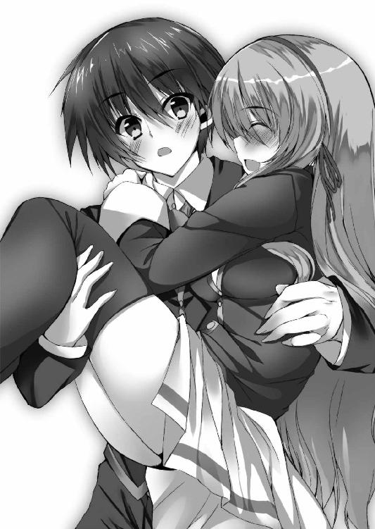
「うん、やっぱりお姫様だっこはするよりされる方がいいね、女の子的に」
「う......、気絶した俺を寮の部屋まで運んでくれた時の話ですか？ そのことは忘れて下さい......じゃなくてっ、どっから現れたんですか、先輩は！」
「ほら、向かいの特別教室棟の校舎から。さっきまで調理室にいたんだけど、メフィが偽典の力を感じ取ってね。メフィって想念の塊だから、偽典の気配にすごく鋭いの。それで慌てて廊下の窓から見たら直輝クンがいたから、そのまま五階からダイブっ」
「ダイブ......って、先輩、偽訳解放もしてないじゃないですか!? 俺が受け止め損ねてたら大変なことになってましたよ!?」
「だいじょーぶ、信じてるもんっ」
本当に信頼しきっている表情で笑いかけられてしまって、それ以上言葉が続かなくなる。ストンと直輝の腕から降りた先輩は鋭い視線を仮面の男へと向けた。
「さあて、わたしの可愛い後輩をわたし抜きで随分可愛がってくれたみたいだね、キルケゴール」
「今日はプラトン君──いいえ、日比野君にお話があって参上した次第なので、貴女は本当にお呼びでないのですがね、ファウストのお嬢さん」
「お生憎様、招かれざる饗宴にしゃしゃり出てこそってものでしょう？ ──わたしは悪魔と契約した女だよ？」
妖艶な笑みを浮かべた先輩はすでに偽典化している赤い本を掲げ、「メフィ！」と高らかに相棒の名を呼んだ。飛来するは「承知！」と返す鳥。その到着を待たず、先輩は力ある言葉を宙に放った。
「──偽訳解放、ゲーテ・『ファウスト』！」
直後、赤い燐光と共に『ファウスト』のページが弾け、飛び散った紙片が先輩の体に溶け込んでいく。同時、飛んでいる勢いそのままにメフィさんが先輩へと吸い寄せられる。羽が生えかわるように黄色の体毛が金色へとその姿を変え、紙片と共に先輩の胸へと溶けた。すると先輩の髪がメフィさんの羽と同色の黄金へと染まっていく。
黄金の髪が風に揺れ、両手の腕輪から赤い業火が吹き荒れた。直輝は声もなくその光景に魅入られる。あの夜と同じ、燐光をまとった美しい少女がそこに立っていた。
「さあ、ここからはわたしがお相手するよ。灰も残さず焼き尽くしてあげるから、かかってきなさい！」
「やれやれ、私は貴女のその姿にはいい加減うんざりしているのですがね。茨人形、かかりなさい！」
キルケゴールの一声で距離を取っていた茨人形たちが一斉にこちらに向かってくる。
「先輩っ、マズいです、こいつらは......！」
「大丈夫、任せといて。おねーさんがちゃんと仇をとったげる♪ さあ──」
茨人形が直輝と先輩を挟み込むように二体同時に飛び掛かってきた。せめて一体だけでも相手取らなくてはと身構えた直輝の目の前で、流星のような炎が左から右へ猛烈な勢いで迸った。
「──燃え散りなさいッ！」
ほんの瞬きほどの刹那。その一瞬で先輩を中心に円周軌道を取る炎は一巡し、両側からやってきた茨人形を蹴散らした。圧倒的な熱と轟音を伴って二体の茨人形が崩れていく。直輝が「え......っ」と呆気にとられている間に炎は更に回転数を増していく。
「直輝クン、伏せて！」
先輩に肩を掴まれ、されるがままに身が沈む。一瞬前まで頭があったはずの場所に唸る茨の腕が二本。「う、後ろから!?」と叫んで振り返る間もなく、炎が眼前で舞い踊る。直輝が視認するより早く高速で三巡した炎がそこにいた茨人形を消し炭にした。
「す、すごい......っ」
「まだまだ！ 回転上げてくよッ！」
織絵先輩の周囲を回っていた炎の円周が狭まり、その軌道が両腕へと収束していく。そうして螺旋状に凝縮された力は前方へと射出された。ゴォッと放射状に迸った熱波が一気に三体の茨人形を吹き飛ばす。まさしく圧倒的な火力と制圧力だ。
「こ、これが織絵先輩の力......」
『当然だ。こと近距離戦において織絵と妾に追従出来る者など、この学園には指を折る程度しかおるまいて』
偽訳解放状態の先輩の左目がふっと天鵞絨の青に変わって、そんな言葉が返ってきた。
「え？ メ、メフィさんですか......？」
直輝の呟きに応えた声は確かにメフィさんのものだった。だがその言葉は目の前の織絵先輩の口から発せられていて、その声も耳で聞くというより頭に直接響いてくるような不思議な感覚だった。
『うむ、偽訳解放をした時、妾もまた織絵の力の一部としてこの肉体に宿るのだ』
「そういえば、直輝クンの前でちゃんと偽訳解放するのはあの夜以来だったっけ。どう？ 先輩さんの面目躍如なのですっ」
瞬き一つで今度は右目がサファイアの赤になり、聞こえたのは織絵先輩の肉声だった。どうやらどちらが喋るのかによって瞳の色がスイッチするようだ。
「ふうむ、やはり茨人形ではファウストのお嬢さんの相手には成り得ませんか。まあ、そうだろうと予測していたので今まで使いはしなかったわけですが」
円陣の向こう、旧校舎を背にしたキルケゴールが思案するようにコツコツと仮面を叩いていた。半分近くの茨人形を先輩の炎が減らしたが、それでもまだ包囲は崩れていない。
周囲を警戒したまま、仮面の男へ鋭い視線を向け、先輩がこちらにだけ聞こえるほどの小声で囁いた。
「......直輝クン、隙を見てキルケゴールとは逆方向に包囲を崩すから、そこから一度離脱するよ」
「え!? ちょっと待って下さいっ。あいつ、先輩が予想してた通り、赤錆色の茨は夜じゃないと使えないみたいなんです。今いる茨人形は先輩が圧倒してるし、あいつを倒す絶好の機会じゃないですか！」
『小僧、自分の体のことを考えろ。偽訳解放してるとはいえ、そこまで手傷を負っているお前をそのままに戦うことなど出来ぬ。それに奴のことだ、この黒鋼色の茨と同様まだどんな手札を隠しているか知れたものではない』
「で、でも......っ」
「キルケゴールを前にしたらまずは冷静になりなさい、って言ったはずだよ？」
「だけど......っ」
「直輝クン。はっきり言うけど、キミが足手まといなの」
「......っ。......わ、分かりました。先輩の指示に従います」
そう、きっぱりと言い渡されたらこちらはもう頷くことしか出来ない。織絵先輩は直輝の手綱の引き方をよく心得ていた。
「ん、いい子。素直な子はおねーさん大好きだよ」
巡る炎が先輩の意志に呼応するようにその勢いを増す。わずかに空気が歪む陽炎の向こうで、仮面の男が肩を竦めるのが見えた。
「日比野君、私は本当に君と分かり合えると考えているのですがね。私の執着は別にしたとしても、奇しくもプラトンとキルケゴールという似通った著者を持つ君と私なら──」
「......黙れ！ 雪乃を傷つけたお前と分かり合うことなんて絶対にない！」
「構ってたらダメ。行くよ！」
キルケゴールを睨んだまま、先輩の炎が後方の茨人形を消し飛ばした。こちらの離脱の意図はそれで明確になったはずなのに、動じる素振りも見せず、仮面の男はなおも直輝へと言葉を続けた。
「一つ、誤解があるようなので解いておきますが、私は眠り病に堕ちた人々を不幸にしているわけではありません。私が奪うのは『絶望』という想念です。つまりそれを失くした人々はみな哀しみのない穏やかな眠りのなかにいるのですよ。いいですか？ 私が行っているのは、言わば救済なのです」
「救済、だと......？」
先輩の背を追って包囲を脱しかけていた直輝の足が思わず止まった。仮面の男の発した、いっそ冗談かと思えるほどに不釣り合いな表現に脳の中心が突き刺されたように痺れた。
「......お前、今、救済って言ったのか？ 意識が戻らないほどの深い眠りに雪乃を堕としたことを、お前は今、救済と言ったのか......？」
「落ち着いて、あいつの口車に乗せられないで！」
「ええ、申しましたとも。彼の者も言いました、〝人々のなかに絶望が現存するという事実のために私は永遠に泣いても泣ききれない思いがあるのである！〟。私が行っているのはその絶望すべてを須らく甲斐々々しく奪い去る行為、それを人はなんと呼ぶでしょう!? 決まっている、それは──救済だッ!!」
自制する理性が一瞬ですべて消し飛び、本能のまま体が反転した。偽訳解放によって強化されたあらゆる力を振り絞って、その足が大地を蹴る。叫びは獣の咆哮のように大気を震るわせた。
「お前だけはこの手で──ぶち殺すッ!!」
「直輝クン、ダメ！ 戻りなさい！」
直輝の跳躍は一歩でおよそ数メートルに及び、続く二歩目が茨人形の頭を踏み砕く。茨に引き裂かれて足から血が噴き出すが、もうそんなことに意識を割いてはいなかった。茨人形を蹴散らすようにして直輝は前方──キルケゴールへと肉薄する。すでに引き裂かれて血まみれの拳をさらに握りしめ、仇敵の顔面へと突き出した。
「そんなにも熱烈に私の元へきてくれるとは嬉しい限りですが、いささか常軌を逸した表情ですね。君が何に対してそれほどの怒りを抱いているのか、私には分かりかねる。私はただ君に友になってほしいだけなのに。友となって人々に救済を与える私の行いを手助けしてほしいだけなのに」
包み込むように広げられた手のひらによって、直輝の拳は止められた。不思議そうに首を傾げるキルケゴールの、その喉笛に噛みつかんほどの勢いで直輝は吼える。
「──お前は俺に雪乃を昏睡させたのと同じことをやれって言うのか!? 他人を不幸にする行いを俺に手伝えって!?」
「ですから、不幸ではなく救済です」
「ははッ、いっそ笑えるよ！ それならまずは自分が脳みそ飛び散らせてから同じことをほざいてみせろッ！」
叫びながら、掴まれていない左手を力任せに振り下ろす。しかしその拳が届くより先に──視界が反転した。
「な......っ!?」
「......ああ、なるほど。一部、理解が行き届きました。つまり君は、私の友にはならないと、そう意思表示をしているのですね」
掴まれた手を起点に真上に向かって投げられていた。体勢を立て直す暇もなく、待っていたのは風のような速度で繰り出されたキルケゴールの右足。先程の偽訳解放途中のような中途半端なものではない。一瞬ですべての酸素が肺から絞り出され、一直線に吹っ飛ばされた直輝の体は旧校舎のむき出しのコンクリに叩きつけられた。
「が──ッ!?」
意識と視界が明滅する。麻痺したように体が動かなくなったところに、さらに数体の茨人形が全身を押しつけるようにして直輝の自由を奪いにきた。
「......まったく残念です。七色の輝きを持つプラトンである君と、真なる自己を自覚するキルケゴールの私が友となれば、あのニーチェの会長閣下とさえ渡り合えるほどの真理に至れると思ったのですが......やはり理解は得られませんか。いや、これも『キルケゴール』という名の宿命か。『死に至る病』というものは、ついぞ理解されないものらしい」
壇上で楽団を導く指揮者のように、キルケゴールの手が高々と上がった。
「では、君には別れの鎮魂歌を。ほぼ終止符近くまで記述を網羅した私の幻想偽典が手に入れた新たな力です。彼の者は言いました。〝真に自己となるためには内面に向かって前進しなければならないはずなのに、我が友人たちは常にその内面への方向からすっかり逸れて突き進むのである。ゆえに私は常に泣くのだ〟。名残惜しいですが、私は孤独を抱いて前進すると致しましょう」
虚空を穿つようにその指が鳴った。途端、視界に映る辺り一帯が一瞬でさっと陰った。反射的に空を見上げて、直輝は絶句する。
「な......っ!?」
青紫の色をした茨が上空を覆い尽くしていた。まるで茨の天蓋だ。そして、夜の帳が下りるような抗い難い圧力を持って、それらが一斉に落ちてくる。
──これは、無理だ。
怒りに身を焦がした直輝をしてそう思わせるほどの、圧倒的な絶望。
「直輝クン......っ！」
茨人形たちの包囲網を突破した織絵先輩が必死にこちらに向かってくる。この世の終わりのように落ちてくる青紫の空を見つめながら、......それでも、不死身の先輩ならきっと生き残れる、と直輝は頭の片隅で思った。
「......っ、メフィ、切り札を！」
『ダメだ、もう間に合わん！』
「それでもお願い、直輝クンを守って──っ！」
直輝や先輩たちの様子にはすでに関心を失ったかのように仮面の男が静かに言った。
「戯れに名付けるとするならば、この青紫の茨は『教会の庭』。人の身では決して克服しきれぬ、『死に至る病』その三番目にして究極の絶望です」
そして、青紫の雨が降る。
刻々と、刻々と。
この世を絶望で塗り尽くさんとするように、暴力的なまでの無慈悲さで、それは少年と少女の上に降り注いだ──。
＊ ＊ ＊
直輝は、おかしな夢をみた。
安楽椅子に座った老人の夢だ。大きく開いた窓の横で潮風に耳をそば立てるその老人の顔はとても幸せそうだった。
その横には悪魔がいた。とても美しい悪魔だった。悪魔は老人の魂を取り立てにきたのだ。老人は知に長けていて長らく悪魔の甘言を退けていたが、長い長い流転の果てで、とうとうかどわかされてしまった。そういう筋書きの物語だ。
だが、直輝にはどうしてもそうは見えなかった。
きっと悪魔は老人の魂なんて奪いたくなかった。老人も悪魔のそういう本心を分かっていた。この物語にはそういう改変がされていた。
だとすればこの結末はひどい茶番だ。彼らが本来在るべき自分の心を守れるように、誰かが指摘してやらねばならない。だから直輝は一言言ってやろうとして......。
──ふいに目が覚めた。
「な......っ」
そして瞼を開いた瞬間、飛びこんできた光景に絶句する。辺り一帯が瓦礫の山と化していた。取り壊し中だった旧校舎は鉄骨をはみ出させながら半ばから崩れ、遠方にあった自動販売機すら横倒しに倒れており、広場の地面などは放射状にめくれ上がっている。
「なんなんだよ、これ......次元が違いすぎる......」
辺りにはすでに仮面の男の姿はない。だが、これらすべてがキルケゴールの『教会の庭』によるものだと思うと、もはや言葉も出なかった。
しかし不思議なことに、周囲がこれほどまでの崩壊にさらされながらなぜか直輝の身は決定的な傷を負っていない。それを怪訝に思って辺りを見回す直輝の横に──一人の少女が倒れていた。
「──っ、織絵先輩!?」
蒼白になりながら直輝は先輩を抱え上げる。だが先輩の顔色は直輝のそれよりなお白く、ぞっとするほど冷たかった。絶望的なまでの『教会の庭』の攻撃から先輩が自分を守ってくれたのだと、ようやく気づく。
「先輩！ 目を開けて下さい、織絵先輩ってば、ねえ......っ」
直輝の呼び声もむなしくその黄金の髪から色が抜けていく。偽訳解放の状態が解け始めているのだ。直輝の『イデアの片翼』も一度気を失ったせいですでに元の文庫本になっていた。
キルケゴールも去っており、すべての偽典がこの場から消えたことで共鳴結界の修復作用が発動する。学園に充満する不可視の力によって、瓦礫と化した周辺の復元が始まるのだ。辺りに地響きが鳴り出した。すぐに退避しなければ瓦礫の脈動に巻き込まれる。
だがそれに気づく余裕もなく、先輩と分離して再び顕現したメフィさんが無理やりに立たせるまで、直輝は泣き叫ぶように彼女の名を呼び続けた──。
六章 ─荘厳の間に光は満ちて─
男子寮。直輝と、織絵先輩の部屋。
とうに陽は落ちているが、明かりは点けられていない。先輩は二段ベッドの下、直輝の寝場所で体を横たえている。その呼吸は本当にかすかで、顔色は死人のように真っ白だった。直輝はそのすぐ横、悔しさとか哀しさとか惨めさとか、そんなものが全部入り混じった顔で先輩の冷たい手を握っている。戦慄く唇からは押し殺した声が漏れた。
「──すみません、俺の、俺のせいで......っ、俺が我を忘れて先走ったから......っ、先輩は何度も止めてくれたのに、何度も冷静になれって言ってくれたのに......っ！」
瞼を強く閉じ、血を吐くように直輝は喉を震わせる。
「何やってんだ、俺......っ!? 先輩が傷つくのが嫌だなんて言っといて、大事な人を守りたいなんて言っといて、結局、結局......っ！ 俺が一番その人を傷つけてんじゃないか......っ！ 何やってんだよ、何回繰り返すんだよ......っ」
その直輝の肩の上から、静かに口を開いたのはメフィさんだった。
「そう気に病むな、小僧。きっと本望だったろう。......元々、織絵の寿命は残りわずかだったのだ」
「は......？」
告げられた言葉の意味がとっさに分からなかった。
メフィさん曰く、先輩の今の状況はキルケゴールによる眠り病とはまったく別の現象らしい。あの青紫の茨から直輝を守るため、ずっと封じていたはずの『ファウスト』の本来の力を使ってしまった代償なのだ、とメフィさんは言った。
「織絵はな、もうずっと自分の死に場所を探していた」
──弓川織絵が幻想偽典の保持者となったのはリセリア学園中等部にいた頃だった。
生まれつき体が弱かった織絵は、幼少の頃から長くは生きられないだろうと言われていた。それを押して普通の学生生活を送ろうとしていたのは、彼女なりの意地だったのだろう。
しかし、やがて転機が訪れる。
寮への帰り道、突如襲ってきた発作。混濁する意識と止まりかけた呼吸。そこに現れたリードマンという不可思議な男。彼が所属するのは特殊環境保持委員会、通称・特保。織絵は空白の幻想偽典を手に入れた。彼女は選ばれたのだ。
「幻想偽典は保持者の願いや欲望を指針にして現界する。その時、織絵が抱いた望みは『死にたくない』だった」
「じゃあ、どうして......？ どうして織絵先輩は今、こうなってるんですか......？」
「妾の、『ファウスト』の偽典のせいだ。織絵が引き出した幻想偽典は強大過ぎた。本来、指針でしかない保持者の願いを『ファウスト』は現界した瞬間、『終止符の地平』すら飛び越えて本当に叶えようとしたのだ」
さらには『ファウスト』は願いの成就と引き換えに織絵の命を奪おうとした。それはあたかも老学者から魂の取り立てをする原典の悪魔そのままに。
「しかしそれは『死にたくない』という織絵の願いと矛盾する。その矛盾によって妾が生まれた。お前にもキルケゴールにも妾のような外部装置は付属してなかろう？ 妾は幻想偽典と保持者が抱えた矛盾の顕現という稀有な例だ」
それは言わば矛盾を誤魔化すための安全装置。『ファウスト』の力のほとんどはメフィへと移譲され、織絵の命が幻想偽典に食われることはなくなった。
「しかしそれゆえに願いも半端な形でしか叶えられなかった。偽訳解放した織絵は不死身だが、そうでなければいつ発作がきて朽ちるともしれん体だ」
「......っ、そんな、そんなのあんまりだ......っ。結局、先輩の願いは何も叶えられてないじゃないですか......！」
「そうだ。だから織絵もいつしか自分の本当の願いを忘れてしまった。『死にたくない』なんて追い詰められた望みを口にするさらに前、きっとあったはずの原初の無垢なる願いを、織絵はどこかに置き忘れてしまった。......だから織絵は決めていたのだ。もはやいつ消えるともしれない自分の命を偽典の脅威から皆を守るために使おうと。妾には結局願いには使われなかった幻想偽典『ファウスト』の本来の力が眠っている。織絵はそれを切り札と呼んでいた。その使いどころを織絵はずっと探していたのだ」
「でも、それを使うってことは......」
「ああ、織絵の命そのものを燃やすのと同義だ」
「じゃあ俺を助けるためにその切り札を使って、先輩は......っ！」
メフィさんは直輝の肩から羽ばたいて先輩の顔の横に着地した。
「正しくは今回織絵が使ったのは力の一部だ。おかげで妾の存在もいまだここに残っている。すべての力を引き出す時間がなかったことと、それでもなんとかお前を守れたことは、不幸中の幸いだった」
「............織絵先輩はどうなるんですか？ まさかこのまま......」
「......それをわざわざ明言することに妾は価値を見出せん」
遠まわしに突きつけられた事実に泣き出しそうな顔で直輝は唇を噛み締める。けれど堪えきれなくなったようにその口から苦渋の声が漏れ、頭をかきむしった。
振り乱した腕が机にぶつかり、その上にあった一冊の本が床に落ちた。おそらく夏生が置いていってくれたものだろう、それはお菓子作りの本だった。落ちた拍子に開いたページを前に、なぜか直輝の両目が見開かれる。
「......メフィさん。俺を助けに駆けつけてくれる前って、二人は調理室にいたんですよね。それって......」
「ああ。織絵はティラミスを作っておった。妾は逸るなと止めたのだが、お前を元気づけられるなら早い方がいい、と聞かなくてな」
「......」
くしゃくしゃになった顔で直輝は床に落ちた本を手に取った。落ちた拍子に開かれたそのページには、掲載されているそれぞれの菓子について、その発祥が書かれている。
そして、そこには誰も知らなかった真実があった。
「............メフィさん、『ティラミス』の語源ってなんだか知ってますか？」
「......いや、妾も織絵もそれは知らんが」
手にした本を破けんばかりに握りしめる。後悔が嵐のように全身を駆け巡った。
──ああ、俺は本当に織絵先輩のことを何も知らなかったんだ、と。
「......俺、なに調子に乗ってたんだ。......先輩がどんだけ大変で、どんだけ辛いの我慢して、それでどんな願いを心の底に持ってたかも知らずに、軽々しく『先輩みたいになりたい』だなんて......っ」
本当は心のどこかで気づいていたはずだった。だってあの夜、あの黄金の光景に憧れながら、自分は同時にそこに一抹の哀しさを感じていたのだから。
「本当、どうしようもない馬鹿だ。本当、本当に......何やってんだよ、俺は──ッ!!」
そのままベッドの縁に思いきり頭を叩きつけた。頭蓋を揺さぶる音が響いて目のなかに星がちらつく。だが、こんなものでは全然足りない。馬鹿な自分を殴り飛ばして、それでも前に進む力が必要だった。
「こ、小僧!? どうした、落ち着け！」
歯を食いしばる直輝へメフィさんが驚いて声を挙げる。だがそれには応えず、少年は決意を持って顔を上げた。
「メフィさん、俺の『イデアの片翼』は使えませんか!? 『ファウスト』が例外的な強さで織絵先輩の願いを叶えようとしたのなら、俺の『イデアの片翼』にだって似たようなことが出来る可能性がちょっとでもあるはずだ。だから......！」
「......なるほど、『世界を規定せし書』の力か」
いつかも言っていた言葉を呟いて、メフィさんが黙り込む。だが『世界を規定せし書』とは会長が持っている世界に七冊しかない偽典を指すもののはずだ。なぜ今それを呟いたのかを問う前に、メフィさんが、しかし、と言葉を返した。
「妾ではその問いに答えることは不可能だ。生徒会の面々や特保の人間でも同じだろう。もしもその問いに答えを持ち得る存在があるとすれば、それは......」
「何かあるんですか!? 手掛かりが！」
「うむ......。もしかしたら、プラトンの幻想偽典を持つお前の呼びかけになら応じるかもしれぬ」
「呼びかけに応じる？ 一体、誰が......？」
メフィさんの瞳が静かにこちらを見た。
「学園の中央記念図書館、その最奥──地下大聖堂に繋がれた、アリストテレスだ」
リセリア学園の大学部、正面通りとため池の間に中央記念図書館はある。白亜の意匠で彩られたその建築は重厚で泰然としており、白峰市の有形文化財にも指定されている。
夜半を過ぎて無人となった司書室の横を抜けて、直輝は地下書庫への階段を下りた。行き着く先は闇にも不思議と映える白く長い廊下。資料の保管だけを目的としたここには普段は人の出入りはないそうだ。
メフィさんに教えられた通りに直輝は白い廊下を進む。左右に並ぶ第一から第十二までの地下書庫。その四番目の扉を開ける。
そこは少し埃っぽかった。無機質な書架がずっと奥まで続いている。メフィさんは織絵先輩についてもらっていて、ここにはいない。独りきりの書庫で直輝は偽典を取り出した。
「──偽訳再現」
途端、七色の光に呼応するように書架の一つからボォと白い光が漏れた。直輝の偽典に呼応して共鳴結界が張られたのだ。逆説的にそこに別の偽典があることが分かる。
書架の並びに入ると、整然とした本の列のなかで白く光る一冊がすぐに見えた。近くに保持者の姿はない。
「これがメフィさんの言ってた地下大聖堂への入り口......」
結局、詳しいことはほとんど教えてもらえなかった。ただ、行け、と言われたその言葉に従って、直輝は白く輝く保持者不在の偽典へと手を伸ばす。
──リィン、リィン......。
触れた瞬間、鈴の音が響いて、目の前が真っ白になった。天と地が入り混じるような酩酊感。偽典の光が弾けて、『イデアの片翼』が元の文庫本に戻ったのが分かった。眩暈に似た感覚がやがてさざ波のように引いていき、直輝はゆっくりと目を開ける。
「これは......っ」
そこはもう書庫ではなく、広大な金色の空間──大聖堂だった。
整然と並んだ着座椅子、四方を照らす煌々たる燭台、天井は吹き抜けになっていて、円形の空洞になったその天井は高すぎて奥まで見通せない。真っ直ぐに延びる主廊の行き着く先、祭壇にはそびえ立つように鎮座するパイプオルガンがある。いつか織絵先輩が『想像以上に立派だからびっくりするよ』と言っていたのを思い出す。けれど本当に直輝を圧倒したのは大聖堂それ自体ではなく......。
「なんだよ、あれ......」
パイプオルガンのさらに上、無数の鎖に絡めとられた──少女の姿だった。
鎖は聖堂の外周から伸びている。先が見えないほど高く続く吹き抜けにはその階層ごとにぐるりと取り囲むように扉があり、そのノッカーの部分に鎖の端は繋がっていた。それが何十何百何千、下手をすればそれよりさらに多く存在し、そのすべてが少女を絡めとる鎖へと合流して、その体を中空に束縛している。
少女は直輝や織絵と同じか少し下くらいの年に見えた。純白のドレスに首に巻かれた赤いリボン、そして胸元に何かを抱いている様子が鎖の間から覗いている。その髪は星屑のような銀に輝き、長く、途方もなく長く伸びている。その一部はオルガンのパイプに絡みつき、長い年月を経て伸びる蔦のように見えた。
「彼女はアリストテレス。幻想偽典を生み出したすべての奇跡の担い手、始まりの姫君さ」
背後からしたその声に、はっとして直輝は振り向いた。
そこにいたのは、着崩れた執事姿の男。一見して高級そうなジャケットははだけていて、金縁のベストのボタンは外れている。その面相は秀麗ながら、周囲を小ばかにしたようにどこか皮肉げな表情が貼りついていた。上等なものを台無しにすることに意義を見出す、そんな信条を全身で表現しているような男だった。
「あなたは......」
「ああ、失礼失礼、それじゃあ僕から先に名乗ろうか？ 学園の特殊環境保持委員会という組織を聞いたことは？ あるね？ 僕はその組織の代表兼使いっぱしりのようなことをしているんだ。名はペリパトス・リードマン。以後お見知りおきを、我が主君アリストテレスの親愛なる待ち人、プラトン様」
「俺が待ち人......？ いや、そんなことはどうでもいい。アリストテレスってあの鎖に繋がれた女の子のことですか？」
「無論、その通りだよ。我が主君たる彼女は永劫に似た時、プラトンの再来を待って......って、プラトン様、何をする気だい？」
いつの間にか偽典状態から戻ってしまっていた文庫本を握りしめた直輝へリードマンが問いかける。
「──助けます」
目の前で女の子があんな目に遭っていて見過ごせるはずがない。簡潔に答えた直輝は文庫本を握りしめて「──偽訳再現！」と力ある言葉を放つ。だが、その直後。
「な......っ!?」
七色の光を放ちかけた文庫本が直輝を拒絶するように手から弾け飛んだ。
「あーあ、駄目だよ、プラトン様。プラトン様の『イデアの片翼』はこの世で最も我が主君の寵愛を受けた幻想偽典だぜ？ 今の未熟な腕じゃあ、目の前に主君がいたら力を制御しきれずに逆流するのは道理ってものさ」
「だったらその制御ってのが出来るまで何度だってやるだけだ！」
面倒そうに文庫本を拾い上げたリードマンから奪うようにそれを取り返し、直輝は偽訳再現を繰り返す。だが、何度やっても文庫本は弾けるように手から逃げていく。
「クソ......っ、なんでだよ！」
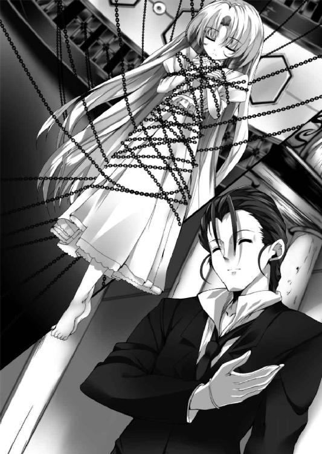
「いやいやもう結構だよ、プラトン様。その心意気は十分に伝わったからさ」
「結構なわけがないでしょう!? 俺は、俺はもう誰のことも......っ」
「一つ言うと、彼女は人間ではない。だからプラトン様が向けている感情はいささかお門違いな向きがあるんだよ」
「は？ 人間じゃない......？」
「そう。あのアリストテレスは記録によればすでに数百年以上に亘ってここに鎮座している。それでもそれを人間というのなら、まあ個人の勝手だけどね」
「す、数百年!?」
「そうさ。だいたいファウスト女史がこの聖堂のことを説明した時も、女史は至って平静だっただろ？ もし我が主君がただの人間で、その上であんなふうに呪縛の鎖に縛られているのなら、人助けに命を懸けてる女史が黙ってないとは思わないかい？」
「そ、それは確かに......」
釈然としないものを感じつつ、直輝は文庫本を持つ手を下ろした。どうやら『アリストテレス』というのはキルケゴールやファウスト、プラトンなど、保持者を幻想偽典の銘で呼ぶのとは違った意味があるようだ。
「いや、っていうか、なんで先輩が俺に大聖堂の話をした時のことを知ってるんですか!?」
「ふふ、特保はこと学園のなかのことにおいてはなんでもお見通しなんだよ。ついでに言うなら、プラトン様が今日ここにきた理由も僕はすでに存じているよ」
「......っ、じゃあ『ファウスト』に命を奪われかけた先輩を助ける方法が何かあるんですね!? どんな方法ですか!?」
「......さあ？」
「はあ!?」
やたらと気楽に肩を竦めたリードマンに直輝は目をむいた。しかし着崩れた執事姿の男は平然としまりのない笑みを返してくる。
「いやだって『ファウスト』関連のことは女史の願いの結果だろう？ 悪いけど、僕は人の気持ちとか分かる方じゃないしね。そんな面倒なこと訊かれても困るってもんさ」
「この、あんた一体なんなんだよ......っ」
「いやほら、僕なんかに出来るのはあらかじめ定められた事柄だけなんだよ。だからそうだね、プラトン様の幻想偽典に関して誤解を解いて差し上げることは、実は出来たりする」
「誤解？ 俺の『イデアの片翼』に......？」
「そうさ。プラトン様は幻想偽典がどうやって生まれるか、きちんと理解してるかな？」
喋りながら主廊を歩き始めたリードマンの背中を目で追いながら、直輝は答える。
「『保持者の精神性』を指針に『ベースとなる大著』を引き出して......あと土台として『学園の磁場』が......」
「そう、『学園の磁場』。ファウスト女史らしい、遠回しな比喩だね。確かにそちらの方が理解は容易いだろうけど、まずはその比喩を解体しよう。女史の言った『学園の磁場』、つまりは幻想偽典を創り出すすべての力の源、それが──我が主君アリストテレスだ。ご覧、今もまた新たな幻想偽典が生まれるよ」
リードマンに言われ、アリストテレスの方に目を向ける。
よく目を凝らすと、アリストテレスはその細い両腕に不思議な光を抱いていた。偽典のように色のある光ではない。何にも染まらない、言ってみれば透明の光のようなものが周囲に文字列を形成しながら輝いている。
「あれがプラトン様も手にしたことのある、空白の幻想偽典の元さ。今はまだ力の塊でしかないけれど、外に出ると本の形をとるんだ」
「......外？」
直輝が首を傾げると同時に透明な光が動き出した。それはアリストテレスを縛る鎖の一つを伝って彼女から離れ始める。行き着く先は鎖のもう一方の端だ。光は大聖堂の中空を逆向きの流星のように飛んでいき、扉の一つに吸い込まれるようにして消えていった。
「あの扉はおそらくカナダ支部だろうね。リセリア学園の姉妹校の一つさ。世界中の姉妹校はこの大聖堂を通じて繋がっていてね、ああして旅立った幻想偽典はその先の特保が確保して、保持者の選定をするという次第さ」
リードマンが言うには共鳴結界にもアリストテレスの力が使われているらしい。織絵先輩が『磁場』と表現したのは、つまりそういった自然現象と同じくらいのレベルで大元としてのアリストテレスの力が満ちている、ということだったようだ。
「古代ギリシャの哲学者アリストテレスは『万学の祖』と歴史に謳われている。哲学に始まり、文学、政治学、心理学、天文学に物理学、現代的に言えば社会科学や自然科学に至るまで、およそ学問と名のつくものはすべてアリストテレスに端を発するんだ。歴史に刻まれた大著も、それらをベースに現界する幻想偽典も、すべては我が主君に繋がっているというわけさ」
「それはいいですけど......つまり、アリストテレスって一体なんなんですか？」
一周して直輝の疑問はそこに行き着ついた。おそらくは幻想偽典を巡るすべての根幹となるその問いに関して、リードマンはまたしても気楽な様子で肩を竦めた。
「......さあ？」
「ひょっとして何も知らないんじゃないのか、あなた!?」
「いやほら、むしろアリストテレスが何者かってことを調べるのが特保の責務の一つだったりするわけでね。保持者のみなさまに幻想偽典を好きにお使い頂いているのも、またそれが可能な環境作りをしているのも、その解明の一環という意味合いがあったりするんだよ」
どこか突き放すようなその言い方に直輝は引っかかりを覚えた。
「ちょっと待て。じゃあ、リードマンさんたちはたとえば......たとえばそう、偽典の保持者がまったく無関係の生徒に危害を加えたら......」
「建築物の破壊などに関しては共鳴結界が作動するよね。それに足らない部分は僕らが処理を行うよ。人的なフォローももちろん同様」
「だから、その人的なフォローって......」
一瞬、言い淀み、しかし語気を強めて直輝は詰問した。
「隠ぺい工作ってことか？」
「そのような意味合いで相違ないかと」
「それじゃあ、あなたたちは......っ」
「ご懸念されてるのはキルケゴール氏の行動への見解かな？ それであれば無論、我々は不介入。特保が心掛けるのはいつでも迅速なアフターケアだからね」
「全部分かってて放置してるってことか!?」
思わず胸倉を掴んだ。もっと言えば放置どころではない。特保はキルケゴールの行いが外部に漏れないよう、わざわざ隠ぺい工作までしてやってるということだ。
しかしリードマンの笑みは消えない。まるで能面のように変わらない。
「あー、ファウスト女史から愚痴の一つもお聞きではないかな？ 特保はいつでもお役所仕事だってね。我々はお膳立てと尻拭い専門なのさ。保持者同士の執行機関は生徒会の役目だからね」
「......っ、でもその生徒会の織絵先輩も今は......っ」
「そのためにプラトン様はこの大聖堂にきたんだろう？ 幻想偽典の記述の結果となると、さすがに会長のニーチェ様でも手の出しようがないだろうからね。話を続けるよ？」
まるで手品のようにぱっと直輝の手を振りほどいて、リードマンは今度は主廊を逆に歩き出す。苦虫を噛み潰す思いで直輝はまたその背を目で追った。
「あなたの幻想偽典は『イデアの片翼』。その銘は当然『プラトン』だ。ゆえに誰であってもこう考えるだろう、あなたは生粋の『プラトン』だと。だが歴史を紐解いてみてほしい。古代ギリシャの哲学者プラトンの『イデア論』はその後、弟子のアリストテレスによって否定と補完をされている。『イデア論』はプラトン一人では完成しない。つまり、あなたの幻想偽典はそれ単体では常に片翼なんだ。まるであなたそのものだね？」
「俺そのもの......？ 俺は常に片翼ってことか？」
その言葉はなぜか直輝の胸の奥深くに入り込んだ。燭台の明かりに灯されながら、リードマンがこちらを向く。
「『イデアの片翼』はイデアを記述するがゆえに、プラトンでありながら同時にアリストテレスをも内包している。初めて幻想偽典を引き出し、初めてオルガノンを顕現させた時も我が主の声が聞こえただろう？ つまりはそういうことさ」
「オルガノン？ それって......」
「あなたが引き出した結晶の剣のことさ。オルガノン──それはアリストテレスが有する『真実を探求するための概念』。あなたがアリストテレスの加護を頂いている証左だよ」
「......」
「その上で、もう一度イデア論を考えるんだ。哲学者プラトンはイデア界に万物の本質たるイデアを求め、哲学者アリストテレスは人が歩む経験の道にこそその本質を見出した。では翻って、その両者を抱くあなたは一体何にイデアを想起するのか？ 必要とされるのはその一点さ」
「俺が、俺自身が何にイデアを......？」
イデアとは『万物を形作る理想状態、その本質』のこと、翻って『永遠に理想の状態を保ち続けるモノ』のことだ。そんなふうに定義を思い浮かべてみたが、逆にあやふやな印象が増してきて、理解が遠くなってくる。
「それさえ掴めれば、幻想偽典はプラトン様の呼び声に応えるはずさ。その力のなかにはもしかするとファウスト女史を救うものもあるかもしれない。なんせその『イデアの片翼』は『世界を規定せし書』だからね」
それはメフィさんやキルケゴールも言っていた言葉だ。直輝の表情に疑問が浮かんだ途端、リードマンが勝手に喋り出した。
「いいかい？ 現在、リセリア学園の姉妹校は世界各地に存在しているんだ。そしてそこに現存する幻想偽典の大部分は『人越を規定せし書』と種別される。その名の通り『人』を起点に作用する幻想偽典というわけだね。女史の『ファウスト』もキルケゴール氏の『死に至る病』もここにカテゴライズされる。そもそも現存する幻想偽典の実に九割以上はこの『人越を規定せし書』なんだよ」
喋りながら距離を詰めてきたリードマンが真正面から直輝を見る。
「しかし世界には極少数、それら通常の幻想偽典を圧倒的に凌駕するポテンシャルを秘めたものが存在する。それが『世界を規定せし書』。世界にたった七冊しかない、世界そのものを変貌させる力を持った幻想偽典！」
「世界を変える......？」
「そう！ 人を規定するのではなく、世界を規定した幻想偽典さ。世界でたった七人しかいないその保持者たちのことを人々は畏れと敬意を持って『最果ての七柱』と呼ぶ。プラトン様の日本支部では会長のニーチェ様がその一人だね。世界中の姉妹校のなかでも『最果ての七柱』を要する学園はレアだよぉ？ なにせ七人しかいないから『最果ての七柱』がいる学園は発言権や影響力もピカイチなわけだ。プラトン様、あなたはその栄光の参列に並ぶ八人目の保持者なんだよ」
「それ間違いじゃないかな？」
眉をひそめながらそう言った途端、リードマンの肩がずり落ちた。
「間違いじゃないよ！ プラトン様の幻想偽典は七色の光を放つだろう？ 『人越を規定せし書』の光は赤、橙、黄、緑、青、藍、紫のいずれかしか持たない単色なんだ。それを越えて人越の七色すべてを内包して輝くのは『世界を規定せし書』の証なんだよ」
「でも、俺の偽典に出来るのは剣を出すことだけなんじゃ......」
その程度の力で世界をうんぬんするなんて、到底考えられない。
「それは今のところさ。イデア論とはすなわち物事の本質を探究する思考のこと。その幻想偽典を得たということはプラトン様にはずっと探し続けている何かがおありなんだろう？ であれば、探し続ければよいのさ。それが見つかる時がすなわち力を得る時だ」
「......」
目の前の男はどこまで分かって言ってるのだろう、と直輝は懐疑的な視線を向ける。だが当のリードマンは涼しげな表情だ。
と、鎖に繋がった上空の扉の一つから、すっと通り抜けるように何かが飛んできた。
それは、白い紙飛行機だった。紙飛行機はぐるりと睥睨するように大聖堂のなかを旋回し、やがてリードマンの手元に着地した。
「おや、外部からの連絡だ。これは日本支部だね」
「その紙飛行機で連絡を？」
「特保に保持者はいないのだけど協力者はいてね。これはサン・テグジュペリの『夜間飛行』の幻想偽典の力さ。どんな難関な場所にもこうして書簡を届けてくれるんだよ」
紙飛行機を開いたリードマンはやや困ったように眉を寄せた。
「お、これは大変だ。キルケゴール氏が街へ出た。どうやら学園内では飽き足らず、一般市民からも絶望を搾取しようとしてるみたいだね」
「な......っ!?」
落ち着き払っているリードマンとは対照的に、直輝の目が大きく見開かれる。
会長の帰還が迫っているなか、織絵先輩を倒したことでついにキルケゴールが暴挙に出たのだ。最も恐れていた事態。このままでは犠牲者が加速度的に増えることになる。
「ふうむ、これは困ったね。学園内であればいくらでも隠ぺいは可能だけど、外となると特保としても少し厄介な事態だ。しかもファウスト女史が倒れたとなると、現状で日本支部の執行機関の人員はゼロか」
他人事のように言うリードマンの横で、ぐっと直輝の拳が握りしめられた。
「俺が行きます」
決意を込めた言葉に、こちらを見たリードマンが首を傾げる。
「しかし現状のプラトン様ではキルケゴール氏には太刀打ち出来ないんじゃないかい？ たぶん氏の『死に至る病』はもう『終止符の地平』目前だよ？ もしもその願いの発露が戦闘力に直結するようなものだったら目も当てられないぜ？ そもそも氏の『死に至る病』は保持者の絶望によって力を増す幻想偽典なのだけど、氏は発想を転換し、他者の絶望をその代替とするというコペルニクス的な発想の飛躍を見せて、膨大な想念を溜め込んでるからね。その『終止符の地平』となると、ひょっとしたら『人越を規定せし書』の壁さえ破るかもしれない。というか、プラトン様は氏の二番目の絶望である茨人形にすら手も足も出なかったんじゃ......」
「──関係ないッ！」
直輝の叫びがリードマンの講釈を遮った。
「戦況とか戦力差とかそんなこともう関係ないんだよ！ あいつがこれ以上、誰かを傷つけるって言うなら、俺が止める！ 先輩に代わって俺がキルケゴールを倒すんだ！」
「んー、左様かい。キルケゴール氏を学園に戻して頂けるのならこちらとしても助かるけどね。ああ、でも氏の人越を超える可能性は特保的にはちょっとデータを取りたいところでもあったりするんだけど......」
「あんたたちの事情なんて知るか！ そんなものより先に守らなきゃいけないものがあるだろうが!?」
いい加減、リードマンの言動に頭にきて叫んだ瞬間、ふいに頭のなかに声が木霊した。
『終焉を司る禁忌の八人目。なれば、汝に我が友愛を捧げよう』
それは初めて『イデアの片翼』を手にした時に響いたのと同じ声だった。あの時は状況が錯綜していて何がなんだか分からなかったが、今ははっきりと伝わってきた。
「アリストテレス？」
直輝が鎖に繋がれた少女に向けてそう声をかけた瞬間、文庫本が爆ぜるようにして勝手に『イデアの片翼』へと変わり、そのページが透明な光に包まれる。そして、せいぜい序盤までしか理解出来ていなかったその内容が流れるように頭に入ってきた。
「うわっ、こ、これって......っ」
全体としてはおそらく十分の一程度。だが確かにそのページ分の『イデアの片翼』が自分の血となり肉となっていることが実感出来る。気づいた時には透明な光も消えていた。
「......君が俺のために手を貸してくれたのか？」
パイプオルガンの上空にいる少女へ語りかけてみるが、返事のようなものはない。だが幻想偽典を通じた繋がりのようなものは確かに感じられた。
「なるほど、それが我が主君の思し召しですか......」
呟くようなリードマンの声にそちらを向き、直輝は少し驚いた。先ほどまで軽薄な笑みを形作っていた彼の表情が敬虔な修道者のように引き締まっていたからだ。
「そうであれば、僕もまたプラトン様のお力添えを致そうかな」
「......あんたがか？」
「いやいや、本当は適当に誤魔化して諦めさせるつもりだったんだけどね。主君の友愛を受けた今のプラトン様なら出来るはずさ。元来、僕は正しき法則を知る導き手だからね」
そう言うと、また軽薄な表情に戻ってリードマンは恭しく頭を下げて見せた。
「どうぞ、あなた様がより善き人生を歩まんことを」
七章 ─開戦─
織絵の枕元にいたメフィは街の方から禍々しいほどの偽典の力を感じとった。
「この想念、キルケゴールか......っ」
ベッドに眠る織絵を見て一瞬迷うが、すぐに窓を開けて飛び立つ。男子寮から林横の小道を抜けて研究棟を過ぎ、リセリア学園の正門に出る。そこに直輝の姿もあった。
「メフィさんっ」
「小僧、お前もきたか」
そばまで飛んで近づき、メフィは直輝の肩へと留まる。
「アリストテレスのいる地下大聖堂には辿り着けたのか？」
「はい。それでアリストテレスのおかげで偽典の十分の一くらいまでは理解出来るようになりました」
「......っ、アリストテレスと意思疎通をしてきたということか!?」
「ええっと、たぶん......アリストテレスは友愛がどうとかって言ってましたけど。ただ、具体的に織絵先輩を救う方法はまだ......その前にキルケゴールが街に出たことが分かったので、すみません」
「......そうか。いや、いい。織絵もきっとそれを望むだろう。お前は正しい判断をしている」
直輝に頷きつつ、メフィは「アリストテレスの友愛だと......？」と胸中で唸る。
友愛とは古代ギリシャの哲学者アリストテレスが唱えた愛の形だ。それを直輝に示したということの意味を、友愛を受けた直輝本人はまだ分かっていない。
（リードマンがどう出たのかが問題じゃな......）
考えるべきことは多いが、それよりも今は目の前に危機的な事態が進行している。
「メフィさん、あれは一体......っ!?」
「おそらく......いや間違いなくキルケゴールの放った茨だろう」
「あれが全部ですか......!?」
高台に建てられている学園からは街の様子が一望出来る。本来、眼下に広がるのは家々の明かりや繁華街のネオンのはずだ。
しかしそれらはすべて薄く広がった青紫の霧によって阻まれていた。いや、よく見ればそれは霧ではない。目を凝らせば遠目からでもその青紫が蠢いているのが分かる。それらはすべて街一帯を覆うほどに広がったキルケゴールの茨なのだ。
「まさか街の人たちすべてが......」
「おそらくすでに想念を搾取され、眠り病に堕ちているだろう」
「クソッ！」
直輝の奥歯がぎりっと軋みを挙げた。
「行きましょう、メフィさん。なんとしてもキルケゴールを止めないと！」
拳を握りしめて、直輝は眼下の街へと一目散に駆け出していく。
＊ ＊ ＊
仮面をつけたその男は街の中心地とも言えるターミナル駅の中央広場に立っていた。彼のいる場所を起点として階段がアーチ状に広がっており、駅が高架式で地上三階に位置することもあって、ただ一人そこで外套を翻している様は舞台上の役者のようだ。
放った青紫の茨を通して膨大な量の絶望が流れ込んできているのを感じる。自らの茨で青紫の霧海に沈んだ街を睥睨しながら、キルケゴールは呟いた。
「あと一手、何かが足りない......」
『死に至る病』はすでに最終ページにまでその記述が進んでいる。膨れ上がる絶望の総量と自らの偽典への理解度を鑑みれば、すでに『終止符の地平』へ至っていてもおかしくはないはずなのだ。
『終止符の地平』とは幻想偽典に刻まれたすべての記述がその総力を用いて保持者の願いを顕現する、文字通りの奇跡だ。事ここに至ってもなお、そこに行き着けないのだとすれば......。
「私自身が自らの願いを理解していないということでしょうか......？」
無論、自覚している望みはいくつかある。そのためにここまで努力を積み重ねてきたのだと言っていい。だが幻想偽典の保持者にとって『望み』と『願い』は明確に線引きされる別個のものだ。
幻想偽典はただ一つの『願い』を指針にして現界する。保持者自身がどれほど多くの望みを抱いていても、偽典にとっては無意識下にあるそのたった一つが真実なのだ。
「で、あれば......私の真なる願いとは一体なんなのか。君はどう思いますか、日比野君？」
壇上から手を伸ばし、キルケゴールは問いかけた。その先にいるのは、小さな鳥を従えた一人の少年。
「そんなもの、俺が知ったことか」
吐き捨てるようにそう言った彼の手のなかには、すでに七色に輝く偽典があった。
「まさかあの状況から無事に生還していたとは驚きです。おそらくはファウストのお嬢さんが身代わりになったというところですかね？ だが君一人でやってきて、ここからどうします？ 先頃の様子から鑑みるに、君は偽訳解放までは出来ても、私の肩を射貫いたあの剣を顕現することは出来ないのでしょう？」
その問いに答えたのは、かつてファウストの少女が連れていた鳥の方だった。
「キルケゴール、貴様はこういう言葉を知らんか？ 男子三日会わざれば刮目して見よ、とな！」
「──偽訳解放、プラトン・『イデアの片翼』！」
鳥の言葉に呼応するように少年が叫び、その偽典の光が爆発的に広がった。
＊ ＊ ＊
その頃、学園の男子寮の一室では別の事態が進行していた。
とある部屋、その二段ベッドの下の段。その前に着崩れた執事姿の男が立っている。手にしているのは小さな鈴。それはアリストテレスの力を宿した、幻想偽典とは別のファクターだ。
リィン......と涼しげに鈴の音が響き、それに導かれるように織絵の瞼がわずかに震える。
「さあ、お目覚めの時間だよ、ファウスト女史。多少の心遣いはしたものの、それでも今のプラトン様じゃキルケゴール氏には敵わないだろうからね。あなたにはもう少し頑張って頂かないと」
徐々に意識を浮上させていく織絵へ向けて、リードマンは酷薄な笑みを向けた。
「すべては我が主アリストテレスのため、プラトン様を生かすよう──女史には人柱になって頂く」
＊ ＊ ＊
左から右へ風に煽られるように捲れていく偽典のページ。通常の偽訳解放ならばそこから紙片が舞い散るところだ。だがその直前で直輝は偽典へと力いっぱい右手を叩きつけた。
「我は命じ、汝は顕現する！ ──来い、想起の剣『オルガノン』！」
呼び声に応じて紙片が渦のように直輝の右手へと集中する。寄り集まった紙片は光の粒子へと姿を変え、その手のなかで再び一つの形を成して──結晶と化す。
それはあたかも幻想偽典から剣を引き抜いていくように。
「これが小僧の偽訳解放か......っ」
リードマンから教えられたのは、直輝にのみ適用される偽訳解放の手順。プラトンの幻想偽典を持ちながら、『イデア』という括りによってアリストテレスの加護をも受けている直輝は、偽訳解放も二段階の手順を必要としたのだ。
偽典から完全に剣を引き抜く寸前、その刀身に光の文字列で銘が走る。『オルガノン』と記された古代ギリシャの文字列が光の尾を引いて、剣と化さなかった紙片が吹雪のように宙を舞う。
「ほう、このわずかな間に成長をしたと！ 面白い！ 私が右肩の傷によって君に固執し、『教会の庭』を会得したように、君もファウストのお嬢さんを葬られた痛みからその剣を得るに至ったというわけですか！ はは、望外の喜びに赤面してしまいそうだ！」
「......っ、黙れ！ 先輩は死んでなんてないッ」
真横に振り被るのは氷柱を鍛え上げたような美しい結晶の剣。余剰の紙片はすでに体へと溶け込んで身体強化を成し、その刀身内部では放たれる時を待つように光が乱反射している。
（初撃だ！ 俺がキルケゴールに勝てるとしたら最初の一撃に賭けるしかないッ）
上空からの完全包囲攻撃である『教会の庭』を放たれたら、こちらには防ぐ手立てがない。代わりにオルガノンでの一撃は奴の赤錆色の茨を、そしておそらくはそれより強度で劣る黒鋼色の茨人形をも切り裂ける。
「食らえ、キルケゴール！ これで終わりだ──ッ！」
階段上、見上げる場所にいる仮面の男へ向けて、渾身の力で横一文字に剣を振り抜く。だが、敵の動きはそれよりも一瞬早かった。
「日比野君、君の欠点は怒りに我を忘れて動きが単調になることです」
まったくの予備動作なく、キルケゴールの体が宙へと舞った。見れば、腕から伸びた赤錆色の茨がターミナル駅天井の梁へと絡みついて、その体を引っ張り上げていた。
そして、直輝の口元が吊り上がる。なぜなら、オルガノンはまだ光の軌跡を放っていない。
「キルケゴール、そこからさらに空中移動する暇はあるか？」
「......っ、フェイントだと!?」
「刮目して見よ、と言ったであろう！」
今度こそ、輝く刀身から光が放たれる。闇夜を斬り裂くような閃光が仮面の男へ向かって疾走する。
「く......っ、小癪な！」
キルケゴールは横方向に茨を伸ばし、寸前で直撃を回避する。だがその衝撃は少なからず全身へ伝播し、外套を不規則に揺らしながらギリギリの角度で石畳の床へと着地した。
「おお──ッ」
体勢を立て直す隙を与えず、身体強化の跳躍力をもって直輝はそこに斬り込んでいく。
「ほう、間髪いれず畳みかけますか！ だが、あまり舐めないで頂きたい！」
直輝が振り下ろした剣をキルケゴールは腕に巻きつけた茨で受け止めた。光の軌跡でなければ、茨を貫通するほどの威力は出せない。その上、連射は難しい。あの一発でかなり消耗しているのを直輝は自覚していた。
「激昂したと見せかけてフェイントを使い、無作為な二射目を放たず私の好まない近距離戦に持ち込む、と。なるほど、大した成長です。ファウストのお嬢さん以外の良き師にでも巡り会えたのですか？」
「違う！ 全部、織絵先輩が教えてくれたことだ......ッ」
キルケゴールと対峙したらまずは冷静になること。そして必ず織絵先輩と二人で挑むこと。まずは直輝が中距離から剣で牽制し、その隙をついて先輩が接近戦に持ち込む。今やったのは、先輩が立ててくれていた作戦を応用したものだ。
（本当は最初からこうやって戦えてたはずなんだ！ 俺さえちゃんと冷静になれてれば、オルガノンがない状態だって、きっと......ッ）
「なるほど、ファウストのお嬢さんの意志を継いで、というわけですか。私は君から傷を負って真理に近づき、君は私によってお嬢さんを失ってより成長した。ああ、嘆かわしくも素晴らしい、闘争の本質がここにあるとは思いませんか!?」
「その気持ち悪い物言いをいい加減やめろ！ 俺とお前は似ても似つかない、お前のことなんて知ったこっちゃない！」
キルケゴールが腕を振り上げ、鍔迫り合いの均衡が一瞬崩れる。だが距離を取らせまいと直輝は連続で斬り込み、キルケゴールが両手の茨でそれを紙一重で防いでいく。剣の心得など何もない直輝だが、偽典のおかげか、その斬撃は紫電のように鋭い。
「そうは言いますが、日比野君、君はこう思ったことはありませんか!? なぜ幻想偽典なんてものがこの世にあるのかと！ こんなものが無ければ自分の大切な人が傷つくことなどなかったのに、とね！」
「それをお前が言うのか!?」
「ええ、言いますとも！ 教えてあげましょう、私と君は実に似た者同士だ！ 私も幻想偽典を巡る争いでかつて失くしたのですよ、自らにとって無二と言えるような人間をね」
「何......っ!?」
剣と茨が耳障りな音を立てて互いを弾いた。両者、共に手が届く間合いで一瞬、動きが止まる。
「それでどうして......こんなことをしでかした!? 先輩や俺の妹を傷つけて、自分と同じ痛みを他人に与えて、一体なんのつもりだ!?」
「私はね、自分の幻想偽典が嫌いでした。いっそ憎んでもいた。『死に至る病』は保持者の絶望を糧とします。絶望に絶望を重ね、人の器をも越えた絶望を持って人を越え、やがて神の前に立つ......そういう筋書きの偽典です。だがそんな苦難を誰が望んで行うというのでしょう!?」
キルケゴールが言葉と同時に茨を巻きつけた手刀を振り下ろした。直輝はとっさにそれをオルガノンで受け止める。じりじりと目の前に眠り病を促す茨が近づいてくる。
「私はずっと『死に至る病』を持て余していました。だから記述を重ねていこうとすることもなかった。絶望を得て強くなるというなら、そんなものは弱いままでよかった。けれど、それを後悔する日がきた。自分の無力さを嘆く日がきたのです」
「自分の無力さを嘆く、だって......？」
「友が偽典を巡る争いに敗れました。彼女は私とは違い、偽典の記述を増すことに貪欲でした。しかし争いに敗れ、偽典を失い、絶望して──この世を去った！」
「......っ」
「私は胸が張り裂けんほどに後悔した！ この手に力があれば彼女を守り通すことが出来た！ 絶望に怯えなければその力を得ていたはずだった！ 彼女の最期の姿が目に焼き付いて離れない！ 絶望！ おおそれこそがすべてを葬る魂の濁流なのだ！」
目と鼻の先に近づいていた茨が腕を離れて爆発的に広がる。それを一瞬早く感じ取ったメフィさんの「小僧、下がれ！」という叫びで反射的に地面を蹴る。
「だが、その時に私は天啓を受けたのです。すべての人の絶望をこの私が引き受ければ、もうあのような悲劇は起こらないのではないか、と。そう、『死に至る病』とはそのための幻想偽典だったのですよ！ 分かりますか？ つまり、絶望こそが私にとって、そして人々にとっての救済者だったのです！」
迫りくる幾重もの茨を斬り払いながら、直輝は後退していく。徐々に間合いが開いていく。だが、まだ悲観すべき状況ではない。むしろ逆だ。こちらへ向かってくる茨はキルケゴールの感情が剥き出しになっているかのように理性的な統制がまったく取れていない。この距離でまだ直輝にさばき切れているのがその証拠だ。
（──今、隙を見てオルガノンの光の軌跡を撃てば当てられる！）
「ゆえに私は数多の人々の絶望を蒐集する！ もう誰も哀しまぬように！ もう如何なる悲劇も生まれぬように！ 日比野君、共に歩めぬと言うなら致し方ない、だが私にも親愛の情と慈悲がある！ 君の絶望も私が背負っていきましょう！」
（ここだ......っ！）
舞台上の役者のように仮面の男が大仰に手を広げた刹那、茨が乱れて剣を大振り出来る隙が生まれた。瞬時にオルガノンを振り上げて、多面体の刀身に光を乱反射させる。
そして、一切の躊躇なく振り下ろした。光の軌跡が宙を走る。その瞬間、男のひどく穏やかな声が響いた。
「背負いますとも、身代わりますとも。──こんな辛くて苦しいこと誰か代わってくれ、私にはそう言ってむせび泣く君の嘆きの声が聞こえますから」
「──っ!?」
手元が狂った。
キルケゴールを直撃するはずだった光の軌跡はその間際で軌道がずれ、紙一重でその外套を揺らすに留まり、そのまま背後の壁だけを打ち砕いた。
「しまっ......」
「何をやっておる、小僧!?」
「それでいいのです」
剣を振り抜いた姿勢の直輝へ、カツンと靴を鳴らしてキルケゴールが横に並ぶ。
二発目を撃った消耗が全身に襲いかかってきていた。指一本動かすことが出来ない。ある程度は覚悟していたものの、この消耗はその予想の上をいっていた。気を抜けば倒れそうな直輝の耳元へふっと白い仮面が寄ってきた。
「それでいい。人は誰しも救いを乞うものです。どんなに屈強な戦士であっても、絶望すれば救われたいと望むのが道理というもの。君のように状況に追い込まれただけの、ただの人間ならば尚更だ。心に絶望がある限り、決して誰も私を倒すことは叶いません」
「......っ」
それはある種の宣言だった。
戦力や経験の差は圧倒的であっても、その精神では決して負けないと直輝はどこかで確固として信じていた。だがそれすらも物の数ではないと、今、キルケゴールは言い放ったのだ。
そして、結果がその証左となっている。直輝は虎の子の一撃を外し、キルケゴールは今まさにこちらへ止めを刺そうとしている。
「おかげで実りある時間を過ごせました。敬意を表し、ファウストのお嬢さんと同じ最期を与えてあげましょう。安心して下さい。この茨でもちゃんと君の絶望は蒐集して差し上げられますから。残念ながら、体の方は肉片となって残らないでしょうがね」
外套を翻して直輝へと背を向け、広場の中央へ戻りながらその腕が高々と掲げられた。空に響き渡らせるように指が鳴り──次の瞬間、闇夜よりなお深い影が辺りに落ちる。
「小僧、マズいぞ！」
「ちくしょう......っ」
出現したのは空を覆わんばかりの青紫の茨の群れだ。直輝が最も恐れたキルケゴールの切り札『教会の庭』。逃げ場のない完全包囲攻撃な上に、こちらはすでに満足に動くことすら出来ない。
「逃げて下さい！ メフィさんだけならなんとか飛んで逃げられるはずです！」
「馬鹿者！ そんな生き残り方をして、妾はあの世でなんと織絵に詫びればいいのだ!?」
「でもこのままじゃ......っ。ちくしょう、結局繰り返しかよ！ これじゃあ、なんのために先輩が助けてくれたのか......っ」
また、自分は間違えてしまったのだろうか。
先輩が命懸けで守ってくれたというのに、またそれを無駄にしてしまう。初めて逢ったあの夜も、今も......日比野直輝は何も変わらない。
「──理由なんていらないよ。何度だって何回だって、わたしはキミを助けてあげる」
苦悶に震える眼差しが「え......」と瞬いて、その前方で像を結んだ。
そこに一人の少女が立っていた。
「ファウストのお嬢さん？ まさか......」
「何を驚いているのかな？ 不死身はわたしの専売特許なんだから」
不敵にそう笑んだその少女は、紛れもなく織絵先輩。柔らかに髪をかき上げて、彼女は意志ある瞳を真っ直ぐに前へ向けていた。
「......どこまで死を愚弄すれば気が済むのですかね、貴女は」
憎々しげにキルケゴールが足を止めるのが気配で分かった。直輝がいるのはちょうど両者の中間地点。瞬間的に直輝の脳裏を過ぎったのは喜びと焦り。入り混じる複雑な感情はその名を呼ぶことで形になった。
「織絵先輩......っ」
その声が聞こえたのかは分からない。周囲は空から落ちてくる茨の軋む音で溢れている。だが叫ぶように直輝が名を呼んで、生気の薄いやつれた織絵先輩と目が合った時、彼女は確かに微笑んだ。
「お待たせ、わたしの可愛い直輝クン」
「馬鹿な、織絵が目覚めれば想念で繋がった妾には伝わるはず、なのになぜ......っ」
言いかけて、メフィさんははっとした声を挙げた。まるですべてを悟ったような怒りすら滲む声で「リードマンの仕業か......っ」と呟く。
何事かと顔を上げた直輝の頭上をメフィさんはくるりと回った。そして静かに顔の前に降りる。
「......織絵が呼んでいる。小僧、お前はよくやった。あとのことは織絵と妾に任せろ。そして出来れば、我が主──織絵のことを忘れないでやってくれ」
「メフィさん、何を言って......」
問いが終わる前に鳥は飛び立った。茨の空と大地の間を縫うように黄色の軌跡が彼女に向かって進んでいく。呆然としていた直輝の目がはっと見開く。
「まさか......っ」
切り札、という言葉がふいに脳裏に浮かんだ。
「ダメだ、先輩っ！ 待って......っ」
走り出そうとした足がもつれて顔から倒れた。手も足もまるで言うことを聞かない。
「くそっ、なんで、なんでだよ、動けよ、動いてくれよ......っ、織絵先輩が、守りたい人がそこにいるのに──っ！」
＊ ＊ ＊
直輝の叫びは織絵の耳にちゃんと届いていた。けれどそれには応えず、彼女は小さく笑みを漏らす。
「わたしのためにあんなに必死になってくれてる、それをちょっと嬉しく思っちゃうのは悪いおねーさんかな？」
「まったくだ。さすがは『ファウスト』の保持者と言ったところか。性悪女の称号をくれてやろう」
「うわっ、ひっどい。自分なんてほとんどその『ファウスト』の塊のくせに」
こちらの回りを旋回するように帰ってきた相棒に織絵は唇を尖らせる。こんなやり取りもこれで最後だ。
「もう......いいのだな？」
「うん。時は来たれり、ここがわたしの終着点」
状況はリードマンからすべて聞いている。覚悟もとっくに決めていた。
織絵の手にはすでに幻想偽典『ファウスト』がある。それが眩いばかりの燐光を放ち始めた。
「何を企んでいるか知りませんが、好きにはさせません。不死身などとのたまう貴女の存在は不愉快極まる！」
キルケゴールの腕から赤錆色の茨が飛んだ。それは瞬く間に織絵の肌を切り裂き、制服の切れ端と血風が辺りに舞う。がくん、と足がもつれた。
「やめろーッ！」
次の瞬間、力を振り絞るように直輝がキルケゴールへ光の軌跡を撃った。直撃はしないものの一部が掠め、上空の青紫の茨の降下速度がグンッと遅くなる。
「キルケゴール、先輩は偽訳解放してないんだぞ!? 先輩、今、今行きますから──っ」
「来ちゃ、ダメ......」
おぼつかない足取りでこちらに駆け寄ろうとする直輝を笑顔で押し留めた。茨に想念を奪われたせいで意識が霞み始める。それでも伝えたい言葉があった。
「メフィからもう聞いてるんだよね？ わたしの体や残りの寿命のこと」
「......っ」
息をのんだ彼の表情ですべて分かる。素直だなぁ、と内心で苦笑する。
「あのね、わたしみたいになりたい、って言ってくれたこと。嬉しかったよ」
「そんな......っ、俺、先輩のことなんにも分かってなかった！ 子供じみた考えできっと先輩を傷つけて、それで......っ」
「そんなことない。全然ないよ」
直輝へと淡い笑みを浮かべながら、織絵は自分が歩んできた道のりを一瞬だけ脳裏に思い浮かべる。
──織絵の体を蝕んでいるのは俗に難病と言われるものだった。物心つく頃には学園の隅に併設されている病棟で日々を過ごしていた。適性のある者のなかでも命の危機に瀕した子供は強力な偽典を引き当てるケースが多い。自分がいた場所がそういった子供たちを囲うために設置された施設なのだと知ったのは、随分後になってからのことだ。
病棟のなかで初等部の教育を受け、十三歳の頃、周囲の反対を押し切って中等部の普通科の学舎と寮へ入った。どうせもうわずかな命なら、とほとんどヤケになっていたのだと思う。
ついに体に限界がきたのは、陽射しの強かったある夏の午後。その日、織絵はあのいけ好かないリードマンに出会い、赤く輝く幻想偽典をこの手にした。
自分は助かったのかもしれない、と思ったのも束の間、再び襲ってきた発作。結局、死に近づいていく命を『ファウスト』は救ってはくれなかった。たとえ幻想偽典なんて奇跡を用いても助からず、もしも『終止符の地平』に至っても『ファウスト』は願いを叶えればその瞬間に命を奪う。それに気づいた夜、メフィに散々当たり散らしたのを覚えている。
天上寺会長に出会ったのはそのすぐ後だった。自分の末路を悟った織絵へ微塵の同情すらなく彼女は言ったのだ、ならば死ぬまで戦いなさい、と。
だから、戦った。
紅蓮の炎と不死身の体を武器にして、せめてこれからを生きる誰かのために。自分の生きた証を刻むように、無我夢中で戦い続けた。
延々と、延々と。
それはもうずっと昔、白い病室の窓から夢みた自分の最初の願いがなんだったのか忘れてしまうほど、必死に、ただひたすらに。何かを選択する余地なんて一度もなくて、選べるとすればわずかに残った命の使いどころだけ。それが弓川織絵の歩んだ人生だ──。
「わたしの生き方なんて、追い詰められた先の後付けの信念でしかなかったの。でも、そんな在り方にも憧れたって言ってくれた君がいたなら、きっと無駄じゃなかったって、そう思える」
再びキルケゴールの茨が迫ってくる。けれど寸前で直輝の放った光の軌跡がそのすべてを薙ぎ払った。ちょっと見ない間に頼もしくなったね、と織絵の頬にまた笑みが浮かぶ。
「わたしは自分の身をすり減らすことでしか誰かを守れなかった。でも、直輝クンならきっとその先へ行ける。自分もみんなも一緒に守れる、そんな本物の偽典詠士にきっとなれるよ」
「先輩......っ」
織絵は赤い燐光を放つ偽典をぎゅっと胸に抱いた。少しだけ躊躇って、言う。
「わたしね......自分の願い、思い出したんだ」
あの時、今と同じように青紫の茨が空を覆って、彼を守るために駆け出して......そして間一髪でこの手が届いたその時、気づいた。
「先輩の願い、それって......っ。じゃ、じゃあ、叶えましょう！ 俺も手伝いますっ、願いがあるなら叶えなきゃ、だから......っ」
こちらを守るように背を向けながら、直輝がキルケゴールへとさらに光の軌跡を放つ。何発目かは分からないが、きっともう限界を越えているはずだ。そして、その間にも空の『教会の庭』はゆっくりとだが確実に迫っている。もう時間はない。
「ううん、それはもう叶ってたの。直輝クンが叶えてくれたんだよ？」
「俺が......!?」
「そう」
死にゆく自分には望めないものと無意識にずっと遠ざけていた。その願い自体を忘れてしまうほど、きつく瞼を閉じて封じていた。
でも、思えば彼と過ごしたこのわずかな日々は──そっと抱き続けた願いの光で輝いている。
「あのね、わたしは......」
だから、告白する。
幼い頃、誰もいない病室で淋しい夕暮れの空を見上げたあの時から、弓川織絵はただずっとずっと......。
「──恋がしたかった」
直輝の顔が泣きそうに歪んだ。言葉が楔になって胸を穿ったように、見開いた少年の目に涙が滲む。
ごめんね、と思う。でも、どうしても伝えたかった。ワガママだけど、知っててほしかった。最初で最後の恋だから。
代わりにキミの未来はわたしが繋いでみせるから。
「......雪乃ちゃんと仲良くね。別れちゃったりしたら、おねーさん許さないゾ？」
「っ!? ちが──」
青紫の茨と彼の言葉が届く前に織絵は最後の言葉を紡いだ。
それは、老学者ファウストが流転の人生の終着で口にした終わりの合図。
取引した悪魔へ向けた、すべてに満足したという履行の宣言。
原典『ファウスト』を知らぬ者でも耳に及ぶ、この世で最も冷たく美しい呪いの言葉。
幻想偽典『ファウスト』はこの言葉をもって、保持者の命を召し上げ、ただ一度の真なる力を解放する。
「『──時よ止まれ、お前はいかにも美しい』」
その瞬間、明星の如く圧倒的な赤の光が迸った。
直輝の目に映ったのは、心から幸せそうな少女の花の咲くような笑顔だった。
＊ ＊ ＊
光は空から降り注ぐ青紫の茨を押し留め、同時に力を凝縮するように一点に収束する。
その中心点にいるのは、メフィさんだった。幻想偽典『ファウスト』は赤い光に姿を変え、しかしそれは偽訳解放のように先輩の身に溶けるのではなく、外部装置と言われた鳥へと集った。
黄色かった体毛が偽典の持つ赤へと変わっていく。それは朝焼けの赤にも、血の赤にも見えた。同時に鳥の姿は人の形へ──楔を解き放たれた力が在るべき姿を取り戻す。
「これは......っ」
そうして弾けた光の先、直輝の目の前に現れたのは、織絵先輩とよく似た姿の女性だった。
先輩の数年後の姿と言われたらきっと自分は信じるだろう。少女の時を過ぎて、女性として羽化した美貌。髪は偽訳解放時のような長い黄金。ドレスを戦闘用にカスタムしたようなシャープなシルエット、その色は偽典の赤。そして広げられた、翼。
「妾は『一なる悪魔』。『饒舌なる者』。『ファウストの魔神』。幻想の偽典により契約せし悪魔──メフィストフェレス」
突風が吹き荒び、彼女の黄金の髪と赤い翼が風に舞った。圧倒的な存在感を持って彼女はここに君臨する。
「幻想偽典が紙片に変わらず、光となってそのまま消えた......？ これは『終止符の地平』ではないですか!? まさかファウストのお嬢さんはすでに記述を完遂させていたと!? しかもメフィストフェレスですって？ まさか原典にある万能の悪魔そのままの力を有しているとでも言うのですか!?」
「織絵が完遂していたのは二部構成である『ファウスト』の一部終盤までだ。だが妾の姿が『終止符の地平』によるものだという推論は相違ない。貴様は『ファウスト』という物語を知っているか？ たとえ如何なる時であっても老学者がその言葉を口にしたならばその瞬間に契約は成立し、夢は終わる。ゆえにたとえ記述が中途であっても保持者の意志によって『終止符の地平』に至れる、それが織絵の『ファウスト』が有した真の特殊性だ。......無論、その命を代償としてな」
「......メフィさんなんですか？」
呆然とした直輝の問いかけに彼女は薄く笑みを浮かべた。その瞳は今にも泣きそうで。
「小僧、織絵を頼む。せめて綺麗な体で弔ってやれるように」
「......っ」
織絵先輩は彼女──メフィストフェレスの背後に倒れていた。もう息をしていないのがここからでも分かった。直輝は血が滲むほどに拳を握りしめ、慟哭を噛み殺した。
「たとえ万能の悪魔が相手であろうと、いやだからこそ！ 私の救済の道の邪魔はさせませんよ！」
「愚かな......もう終わっているのだ。織絵がこの場に辿り着き、命を奉ずる覚悟を決した時点で、貴様の命運は尽きている」
目のふちに赤いアイシャドーの入った瞳が仮面の男を睨み、伸ばされた手が空を握り潰すように五指を立てる。途端、上空の茨が悲鳴を挙げるように脈動し、その動きを止めた。
「この世で最も名の通った魔女の宴を知っているか？ ブロッケン山の山頂で舞い踊るその灼熱の宴を、最初に世に知らしめたのは他ならぬ我が原典『ファウスト』の記述によるものぞ」
「ははっ、まさかその伝承に準拠した力を引き出せるとでも!? 馬鹿を言うな！」
「妾が原典の悪魔そのものであるかと貴様は問うたな？ ならば、その身をもって知るがいい。これこそが永遠の宮殿の円柱をも砕く、黄金の領域──」
その瞳が見開かれ、同時に青紫の空に火花が散った。
「『ヴァルプルギスの夜』──ッ！」
その言葉と同時にゴウッと上空を覆うすべての茨に炎が奔った。轟音と共に茨が一斉に爆散する。炎は仮面の男の身にも降り掛かり、燃え上がる火花の爆ぜる音とキルケゴールの悲鳴が大気を震わせた。
そして、メフィストフェレスの鋭い眼光はわずかの揺らぎも見せない。
「──我が主の命により、これをもって絶望の顕現の終焉とする」
真っ二つに裂けていく空の下で、彼女は悠然と立っていた。その眼前で青紫の茨は瞬く間に空から剥がれ落ち、黒煙を上げてすべてが崩れ去っていく。
「すごい......」
直輝は崩れていくその空を見つめて呆然と呟いた。あれほどまでに圧倒的だった宿敵がいとも簡単に打ち倒された。そうして直輝が降り注ぐ茨の崩壊に巻き込まれる寸前、翼を広げて飛んできたメフィストフェレスがこちらの身を拾い上げた。
「メフィさん......っ」
「あれだけなんだかんだと言っておいて、胸の内に秘めた願いが『恋がしたかった』とはな。笑えるだろ、小僧。まあ、そんなことだろうとは思っていたが......まったく織絵の奴め、最期まで難儀な女だ」
「でも、その願いでどうしてメフィさんはその姿に......？ 『終止符の地平』は願いを叶えるものなんじゃ......」
「『ファウスト』は願いを歪める偽典の最たるものだ。たとえ織絵がどんな願いを持っていようと、その結果は『ファウスト』の力の解放──メフィストフェレスの顕現という形で現れる。矛盾を顕現した妾が生まれた時にそういう改変が成されたのだ。織絵が難儀な女なら、妾は出来そこないの奇跡だったのだ」
この姿は織絵が順当に記述を最後まで進めたなら到達していたはずの年齢だ、と彼女は哀しそうに呟いた。そして途中で織絵先輩も抱え上げ、もはや残骸と化して地に落ちた茨から距離を取って着地した。
「織絵先輩......っ」
直輝は深く目を閉じた先輩を抱きかかえる。触れた頬はベッドに身を横たえていた時よりずっと冷たかった。
「また、自分ばっかり傷ついて......。絶対に越えちゃいけない最後の一線まで......俺、結局守られっぱなしじゃないですか」
「小僧、別れを惜しんでいるところ悪いが、あとのことを頼まれてくれるか？ まだしばしはアリストテレスの大元の力で現界していられるが、それも長くはない」
「え......？ あっ、メフィさん、体が......っ！」
顔を上げると、体の端から光となって彼女の存在が消え始めていた。
「保持者を失った幻想偽典は幻想へと還り、空白の偽典に戻る。これは当然の帰結だ。それよりも小僧、全身をくまなく焼き上げてやったが、キルケゴール本人の命はまだギリギリで生かしてある。ゆえに奴を捕縛するか、とどめを刺すか、その処遇はお前に任せる」
「俺に......？」
「ああ。事件の幕引きは消えゆく悪魔ではなく、人の手で成すべきだからな」
その言葉と同時に、茨の残骸の一角が崩れた。真っ黒に焦げ尽くされた茨は光にすら戻らず砂のように崩れていくが、そこからゆらりと人影が立ち上がった。
ふらふらと夢遊病者のように近づいてくるその顔には確かにヒビ割れた仮面がある。
「キルケゴール......っ」
守るように先輩の体をぎゅっと抱きしめた。オルガノンはまだ手元にある。刃を使えば斬れるだろう。逆に柄で打てば昏倒させるぐらいは容易いはずだ。自分はどっちを選ぶのか......ひりつく喉で息をのみながら思考する。だが、その迷いは意味を成さなかった。
あと数メートルまで近付いたところで、ヒビの走っていたその仮面がふいに真っ二つに割れたのだ。
「は......？」
さらされたその顔を見て、直輝は唖然とした呟きを漏らす。同時、メフィさんも驚きの声を漏らした。
「こやつは......っ！ 馬鹿な、こやつがキルケゴールの正体だったのか!?」
それは、緒方成一ではなかった。
直輝が決死の覚悟で戦い、織絵先輩が命を捨てて臨み、メフィさんがようやく倒したその男は──直輝の友人の木坂夏生だった。
「違う、違います、メフィさん！」
「一体何が違うと言うのだ!?」
だが、直輝は上手く口がまわらない。そうか、織絵先輩もメフィさんも奴の素顔──緒方成一の顔を見たことがないんだ、と今さら気づく。
その瞬間、周囲の闇から無数の茨がふいに湧いて出た。直輝たちが動くより一瞬早く、茨はメフィさんの体を雁字搦めに拘束した。
「何っ!?」
「メフィさん!?」
「力を使い果たした今の悪魔なら、私の絶望でもなんとか押し留められそうですね......」
反射的に声のする方へ直輝は顔を向けた。焼け野原のようになった駅の中央広場、その柱の上にその男はいた。外套は着ているが仮面はつけていない。その顔はまぎれもなく、
「緒方成一......っ！ メフィさん、あいつが本物のキルケゴールですっ」
「なんだとっ!?」
「そういうことです。そこの木坂夏生君は言うなれば身代わりですよ。当初は日比野君と話をする際のカードの一つとして用意していたのですが。まあ、すでに用済みだと思ったので今回は念のためというだけで使役していたところ、それが思いのほか転ばぬ先の杖になったようだ。作り物の外套と仮面を被せて、背後から茨で操って、ほらこの通り」
キルケゴールが指を立てると、夏生の右肩辺りから伸びた無数の細い茨が操り人形のようにその体を動かした。しかしほんの数歩もいかないうちに茨は光となって消え、夏生は糸の切れた人形のように崩れ落ちる。「夏生......っ」と直輝は声を挙げるが、直輝自身ももうほとんど体が動かない。
「さて......捕縛か、とどめか。そういうお話でしたね？」
「く......っ、ちくしょう！」
「キルケゴール、やるならば妾を先に討て！ 小僧にはもう満足に戦う力はないっ」
直輝は先輩を隠すように抱きながら、目前へ舞い降りてきたキルケゴールへオルガノンを突きつける。しかしその刀身にはもはや光はなく、万全のこの男をただの斬撃で迎え打てるとも思えない。
「ふふ、いい表情をしますね。まるで恐怖に震える幼子のようだ」
「ちがっ、俺はまだ戦える......っ、お前なんかには屈しないっ」
「そのわりに剣を持つ手が震えていますよ。はは、あの夜から君は何も変わらない」
「......っ」
思わず喉の奥が詰まった。その隙にパアンッと剣が振り払われる。直輝の手を離れたオルガノンは偽典へと姿を変え、そのまま光を散らせて元の文庫本の姿へと戻ってしまった。
そして同時に当然のように直輝の体の偽訳解放まで解けてしまう。
「クソッ、ちくしょう......っ」
「ああ、本当にいい表情です。もしも絶望というものに形があるとしたら、それを前にした震える子羊はきっと今の君のような表情を──」
茨を這わせて伸びてきていた手が直輝の眼前でぴたりと止まった。
「──ああ、そうか。今、分かりました」
仮面をしていない緒方成一の顔が何かに気がついたように強く首肯した。
「気づいた、私は気づきました！ 日比野君、君のおかげで私はようやく気づくことが出来ました！ ずっと探し求めた、私自身の胸に宿る真の願いに！」
両手を広げて緒方は叫ぶ。その瞬間、突然緒方の目の前に『死に至る病』が出現した。偽訳解放中にも拘わらず現界した偽典は、その光を青い柱のように一瞬にして増大させた。
「な......っ、光が......！ よもやこれは......『終止符の地平』か!?」
「その通りです、その推測は実に正しい！ 日比野君との相対によって私はようやく真の願いに至りました。そうだ、私は皆を救いたかった！ 絶望のすべてを背負いたかった！ だがそれらの望みと比べるべくもないほど強く、心の底でこう願っていたのです！」
青い光に導かれるように街中の茨がキルケゴールの元へと集まっていく。それはより集まり絡み合って、高く高く塔のように伸び、男を夜空へと押し上げていった。
人々の絶望が折り重なっていくその様はこの世のどんなものよりグロテスクだった。すべてを飲み込んで巨大になっていく塔のその全長はすでに街にあるどのビルよりも高い。青紫の塔の上、夜の闇のなかで緒方成一は歓喜の産声を上げた。
「──私は絶望になりたかったッ！ あらゆる悲劇も哀しみも内包し、すべての人々に唾棄され蔑まれる醜き絶望！ そうなることこそが、この私の真の願いだったのだッ！」
そして群れと化した絶望が形を成す。見上げる月を噛み砕かんとするように、茨の塊が顎を開いた。
「なんだよ、これ......っ!?」
人々が最後に思い浮かべる絶望の象徴は黙示録に描かれている。
人と絶望について記述された『死に至る病』の幻想偽典がその完全なる形としてそれを具現したことは、必然とも言えた。
「これはすでに妾の知る『人越を規定せし書』の範疇ではない......馬鹿な、街一つ分の想念を食いきることで幻想偽典はここまでの力を得ることが出来るのか......！」
それは、竜だ。
人々の絶望によって編まれた茨が寄り集まり、折り重なって、冒涜と醜悪を結集した黙示録の竜が今ここに形を成した。その体長は街にあるいかなる建造物も見下ろすほどで、もう何かの悪夢としか思えない。
竜が首をもたげ、その牙を晒す。互いを削り合う茨の音が竜の咆哮となる。夜を震わせるような、獣の叫び。
その威容を前にして、直輝は呆然と呟いた。
「嘘だろ......？ 織絵先輩が命まで懸けてくれたっていうのに......は、はは、なんだよ......結局、俺たちはこんなところで終わりなのかよ......っ」
八章 ─かくて、その背に両翼を─
その頃、リードマンは街の中心地に突如出現した茨の竜を学園の時計塔から観察していた。この男が大聖堂から外に出ることの珍しさを語る者は今はここにはいない。
「なるほど、キルケゴール氏はそういう変貌を遂げたかい。これは確かに人越のカテゴリを超越しているね。実に興味深い。けれど......こちらもついに帰還したようだよ」
リードマンの手には新たな紙飛行機が握られている。そこからもたらされた情報を確認するまでもなく、学園の中心から七色の光が迸った。それは大気を震わせながら夜空を滑空し、一直線に茨の竜へと向かって飛んでいく。
「彼女こそ、ある意味で真の超越者だ。『世界を規定せし書』の超人と『人越を規定せし書』の茨の竜。果たして軍配はどちらに上がるかな？」
＊ ＊ ＊
もはや戦意すら失くした直輝と、その腕に抱かれる冷たい織絵先輩、そして茨に絡めとられたメフィさんを噛み潰さんとするように、目前で竜の顎が大きく開いた。
『さあ、今度こそ君を救済しましょう、日比野君。君の肉体も精神もその悉くを私が背負い、君に安らかなる永劫の眠りを与えて差し上げます』
キルケゴールの声は耳障りな茨の軋みと共に大きく響いた。もはや抵抗すら出来ずに直輝は迫りくる顎をただ見つめる。
「ごめんなさい、織絵先輩......」
だが顎が今まさに直輝を食らわんとしたその瞬間、七色に輝く光が横殴りに竜の顔を薙ぎ払った。苦悶の叫びを挙げて、竜の首がギチギチと跳ね上がる。
「え......？」
寸前のところで茨の牙から救われた直輝は呆気に取られ、その光と共にこの場に現れた者を見つめた。
制服は慣れ親しんだ学園のもの。リボンの色は三年生を示している。両耳の前から伸びた髪は艶やかに風に揺れていて、そこには帯状の髪飾りが結わえられていた。目元は鋭く瞳はどこまでも澄んでいて、目の前の人の清廉さを如実に物語っている。
そしてその手には大振りの突撃槍、身にまとう光は七色の輝きを放っていた。
「な、七色の光......？ 『世界を規定せし書』の証の......まさか、あなたが......っ」
「そうだ、その通りだ、小僧。こやつこそが──」
二人の言葉に大きく頷き、光り輝く突撃槍を大地に突き刺して、威風堂々と彼女は名乗りを上げた。
「我が名は天上寺紋芽！ 『最果ての七柱』の一角を担いし、リセリア学園生徒会執行部会長・天上寺紋芽がここに推参致します！」
その佇まいはたとえば世界を背負うと言われても納得してしまいそうなほど、力溢れるものだった。呆然と見つめる直輝へとその手が伸び、いっそ乱暴なほどに頭を撫でる。
「え？ え？ え!?」
直輝は戸惑うがそんなことお構いなしに天上寺会長は頭を撫で続け、そして見ているこちらの胸がすっとすくような清々しい表情で笑った。
「よく頑張りました、一年生。あとはすべて私に任せておきなさい。──もう、大丈夫です」
その一言でふいに涙腺が緩んだ。雪乃が昏睡してからずっとずっと緊張の糸が張りつめていた。だがこの瞬間、すべてを託せる会長の微笑みでそのすべてが一気に解れた。
「あの、お、俺......っ」
「皆まで言う必要はありません。大方の状況はリードマンから報告を受けています。偽典を手にしてからわずか数日の貴方には耐えかねるほどの辛苦の連続であったでしょう。ありがとう、大儀でありました」
「......っ」
言葉が詰まって何も言えなくなる。そんな直輝の頭をもう一撫でして、天上寺会長はメフィストフェレスの姿のメフィさんへと目を向けた。七色の光を灯した手刀のたった一振りでメフィさんを束縛する茨を引き裂いて問う。
「貴女は......メフィですか？」
「そうだ、紋芽。織絵は......満足して逝ったぞ」
メフィさんのその言葉を受けて会長は膝を折り、直輝の腕のなかの織絵先輩の髪を不器用そうな手つきでそっと梳いた。
「そうですか......我が部下ファウスト、貴女もよく頑張ってくれた。貴女と一年生の不屈の頑張りによって、私はこの場に間に合うことが出来ました。礼を言います」
数秒、会長は黙とうを捧げるように目を閉じた。そして次に瞼を開くとすべて振り切ったように立ち上がる。
「まもなくスノウを含め、他の執行部員も私に続いて帰投する。負傷者がいればすべてそちらで対処しましょう。だがメフィ、貴女の方にはもう打つ手がありません。何か私に言い残すことはありますか？」
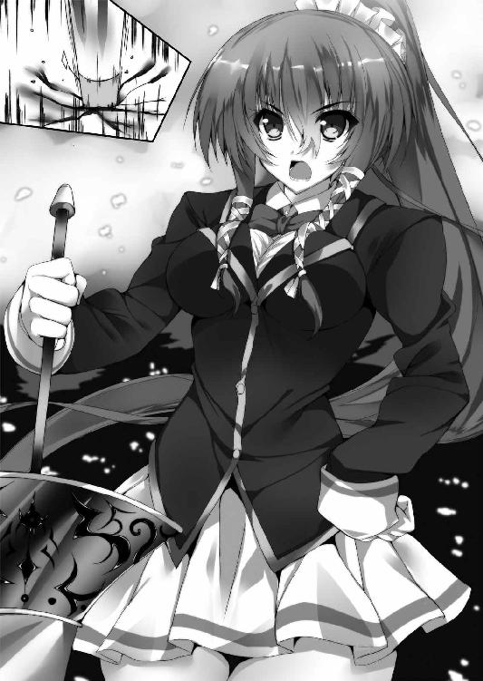
「織絵共々、世話になった。いつかお前の求める超人が現れることを妾も祈っておるぞ」
「是非もない。さらばです、我が友よ！」
二束の長い髪を風に舞わせて、会長が大地に突き刺した突撃槍を一息に引き抜く。
「あ、あのっ、会長さんはこれから一体......!?」
「決まっている──竜退治ですよ！」
その瞬間、怒りに駆られた茨の竜が巨大な顎を開けてこちらへ迫った。だが会長はそのタイミングを読み切っていたように、振り向きざまに竜の顔面へと突撃槍を突き立てる。
「さあ、朗々と奏でましょう。二式解放──」
そしてとうに偽訳解放が成されているはずの身に、さらに重ねられる力ある言葉。
「──ニーチェ・『ツァラトゥストラはかく語りき』！」
＊ ＊ ＊
それはもはや直輝には手の出しようがないほど超越的な戦いだった。
キルケゴールが放つものはすでに茨というより一つ一つが大樹の様相を呈していて、それらが竜の全身から無尽蔵に飛び出しては会長へと襲いかかっていく。
対して天上寺会長は突撃槍を起点として夜空に巨大な七つの歯車を顕現させた。その一角へ仁王立ちに陣取り、歯車同士が噛み合って連動する度、流星のような巨大な光の矢が天空から舞い降りて、竜の茨を爆散させる。
その戦況は互角に見えたが、時を経るほどに会長の勢いが増してきた。よくよく見れば、キルケゴールの茨は徐々にその数を減らしているが、会長の光の矢はその勢いが衰える気配すらない。
「あれは紋芽の能力の一つ、『永劫回帰』だ。『ツァラトゥストラ』によれば、人は永遠に終わることのない苦しみを受け入れた時、初めて次の段階へ昇る兆しを見出すことが出来ると言う。それを体現する紋芽の攻撃は、受ける者にとって苦痛であればあるほど永劫に止むことがない、無限の連撃となるのだ」
「それって......」
「そうだ、『絶望』を糧とするキルケゴールにはまさしく天敵であろう？ それでも絶望を受け入れる『死に至る病』の記述に準拠していれば、光明はあったかもしれぬ。だが奴は事もあろうに自らが絶望と化すことを願った。なれば、もはや結果は見えている」
そして光の矢を受け続けた茨の竜がとうとう苦悶の悲鳴を挙げた。
『待ちなさい！ この街のすべての人々の想念は私の絶望と一つとなって、青紫の茨と化している！ 私を倒してももはや誰一人として眠り病から目覚めることはないのですよ！』
「......っ!?」
自暴自棄とも言えるその叫びに直輝は言葉を失った。メフィさんも同様に目を見開いている。だがただ一人、天上寺会長だけは眉一つ動かすことなく、天空からの矢を強めた。
「それがどうしたと言うのだ？」
『な......っ!? 動揺する間もないと言うのですか、貴女は!?』
その容赦の無さにキルケゴールは元より直輝も驚きを隠せない。
「想念を奪われた人間たちがもはや助からないと言ったのは貴様であろうに。遠人愛という言葉を知っていますか？ 私は人間の愛よりもそのさらに先へと昇華していく事象への愛こそがさらに高みだと思う者です。過ぎ去った過去に意味はない。ならばそこに心を割く意味もなし。貴様も、想念を奪われた人間たちも、いずれくる遠き未来の糧となりましょう！ 万人はみな没落せよ！ 我らが成すべきは遠き未来に生まれる超人のため、今この時の夜を滅ぼすことにある──ッ！」
すべての歯車が一斉に唸りを挙げ、降り注ぐ流星の勢いが怒濤の如く増していく。直輝は自分の背に冷たいものが流れるのを感じた。おそらく、あの人のなかで人間は完全に平等なのだ。言葉の意味がすべて分かるわけではないが、おそらく敵であるキルケゴールも助けるべき想念を奪われた人々も、同じ一個の命としか見ていない。その是非を問うつもりはない。直輝が今、強く思うのはただ一つだけだ。
（......いいのか？ まだ終わったわけじゃないのに、助ける方法だってまだ探すことは出来るかもしれないのに、すべてを切り捨てるなんてそんなの......っ）
だが、どれほど強く思ったとしても、
「俺にはもうどうすることも出来ない......っ」
夜空を塗り潰さんばかりの光の矢の群れを目の当たりにして俯いた、その時だ。
──リィン、という鈴の音が聞こえた。
＊ ＊ ＊
同時刻、リセリア学園普通科女子寮のある一室。
時を止めたように眠り続ける少女の枕元には、一冊の手作りの絵本がある。
その絵本が今、ボォとひとりでに輝き始めた。その光には色がない。何物にも染まらない透明な光を持って、思い出の絵本が輝き出す──。
＊ ＊ ＊
鈴の音に気を取られた瞬間、書庫から大聖堂に入った時と同じ酩酊感に襲われた。そして、世界が一瞬で白い空間へと様変わりする。目の前にいたメフィさんや腕に抱いていた先輩も消え、直輝はたった一人で白の空間に投げ出された。そして──。
「兄さん」
目の前に一人の少女が立っていた。その姿を見た瞬間、直輝の両目が大きく見開かれる。
「ゆき、の......？ 雪乃!? お前、なんで、どうして......!?」
ふいに幻のように目の前に現れたのは、ずっと眠り続けて、今もベッドのなかで昏睡しているはずの妹──雪乃だった。
愕然としている直輝の前で雪乃がにっこりと笑う。夢かそれとも幻なのか......ひょっとしたら無力感のあまり白昼夢でもみてるのかもしれない。ワケも分からないまま、けれどずっと取り戻したかった妹の笑顔を前にして、直輝の目じりに涙が浮かぶ。そんな兄の前で妹は大きくその手を振り上げて、
「兄さんのばかーっ！」
「あいたっ!?」
スパンっと頭をはたかれた。
「え!? ちょ、ゆ、雪乃さん？」
「あー、もう！ ホント兄さんはあたしがいないとダメダメなんだからっ。ちょっとそばにいないとすぐこれだよ、まったくもーっ！」
それはまったくいつもの雪乃だった。白昼夢にしてはやけにリアルで、夢や幻のような儚さなんて微塵も感じさせない、直輝の知ってるいつもの妹がここにいる。
「い、一体何がどうなってるんだ？ 雪乃は今は眠り病でベッドにいるはずじゃ......」
「そんな細かーいことはどうでもいいの！ それより！」
ビシッと妹の指先が兄の鼻先に突きつけられる。
「何悩んでるか知らないけど、どうすることも出来ない、なんて何情けないこと言ってるの！ しっかりしなさい、兄さんにはまだ出来ることがあるはずなんだから！」
「......っ」
真っ直ぐな言葉を突きつけられて、胸が詰まった。
「でも雪乃、俺一人じゃもうどうにもならないんだ......」
思わず漏れたのは偽らざる本音だった。そして同時に、助けるべきと心に誓った雪乃が目の前にいるからこそ、こぼれた弱音だった。自分に出来るのは偽典から剣を引き抜くことくらいだ。そしてその程度の力ではもう会長やキルケゴールの戦いにはついていけない。
「何言ってんの、それでいいんだよ」
「え？」
一転して柔らかな口調でもたらされた言葉に思わず顔を上げる。直輝に世話を焼く時のいつもの顔で妹は眉じりを下げていた。
「それでいいんだよ。一人で無理に頑張ろうとしなくていいの。兄さんは一人じゃ何やったって上手くいかないでしょ？ だって元から一人じゃ何にも出来ない人なんだから」
「ひ、ひどいな......」
だが、事実ここまでそうだった。そしてそれはリードマンにも言われたことだ。日比野直輝は一人では何も出来ない、つまり一人では常に片翼なのだと。
「でも、そんな兄さんだから気づけることがきっとあるはずだよ？」
「俺だから、気づけること......？」
「そう。子供の頃、お父さんとお母さんが離婚しちゃった時さ、あたしの不安や苦しさに気づいて兄さんは手を引いて連れ出してくれた。だからあたしは色んなことをひっくるめて受け入れることが出来たんだ。昔からそうだよ。あの時みたいに、兄さんだけが気づけたことがきっとあるはず。そうでしょ？」
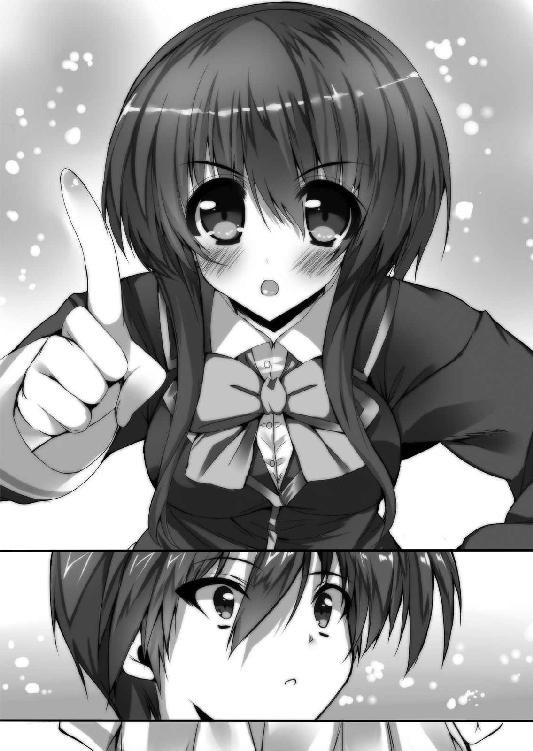
「それは......」
確かに、一つだけあった。まだ誰も気づいていない、本人さえ忘れたままの......あの人の本当の願い。それを直輝は知っている。
「願い......？ ......っ！ まさか......っ」
その瞬間、一つの閃きが全身を駆け巡った。バラバラだったピースがはめ込まれていき、そこに描かれた意味が初めて直輝の表層へとすくい取られる。
そう、自分は一人では何も出来ない片翼で、でもあの人の願いには気づいていて、たった一つ出来ることがあるとすれば、それは偽典から剣を引き抜くこと。
そして、幻想偽典は願いを指針に現界するのだ。
「そうか、俺は、俺の本当の能力っていうのは......っ」
「ほら、やっぱり何かあったでしょ？ 兄さんだから出来ること」
「ああ、あった、あったよ。俺にもまだ一つだけ出来ることが。──って、え？ 雪乃？」
妹の目じりになぜか涙がにじんでいた。顔は笑っているけど、その瞳には大粒の涙が浮かんでいる。雪乃が一番辛い時に見せる、泣くのを必死に我慢した表情。
それを目にした瞬間、直輝は呼吸すら忘れて立ち尽くす。──なぜなら、キルケゴールの茨にさらされた者は絶望の想念を奪われる。ゆえにその被害者は哀しみや苦しみを持ち得ない。そう、もしも雪乃がキルケゴールによる眠り病だとするなら涙など流すはずがないのだ。
（いや、待て、落ち着けっ。ここにいる雪乃は俺の白昼夢かもしれなくて、だから......）
「兄さん」
ふいに、雪乃の両手が直輝の手を包み込んだ。幼い頃からずっと慣れ親しんだ妹の体温が伝わってくる。理屈なんて通り越して心が先に確信する。ここにいる雪乃は白昼夢なんかじゃない。
「──忘れないで。白い本はみんなの願いを集めて、本当の世界を呼び寄せるためのものだから」
それは目覚めなくなる前の晩に雪乃が口にした言葉。呪いの白い本──幻想偽典を指して言ったものだ。そして不可思議なその一言と共に、まるで桜吹雪が風にさらわれるように、一瞬にして雪乃の姿が消え去った。
「雪乃──!?」
反射的に伸ばした手は届かず、虚しく空を切る。そして、想いの残滓のように最後に呟かれた声だけが耳へと残った。
──待ってるからね、お兄ちゃん、と。
一人きりになった白の空間で、直輝は呆然と雪乃が一瞬前までいた場所を見つめる。
「雪乃......」
妹は確かに今、目の前にいた。どんな理屈かは分からない。だが確かに雪乃はこの瞬間、手の届く場所にいたのだ。
「俺は......」
自分の両手を見つめる。
結局、いまだ誰一人守れていない両手。結局、何一つ成せていない弱い自分。自信なんてない。やれるかどうかも分からない。それでも......。
織絵先輩は、その先へ行けると言ってくれた。
雪乃は、待ってると言ってくれた。
そして自分は、恥ずかしいくらい諦め知らずの理想主義者、プラトンだ。
だったら──。
空っぽの両手を握りしめ、少年は決意を込めて宙に叫んだ。
「諦めるのはまだ早い──ッ！」
その瞬間、空間を満たしていた白が光となって爆ぜた。
＊ ＊ ＊
はっと目を覚ますと、目の前にメフィさんがいた。会長とキルケゴールの戦いは街の奥でまだ続いていて、成長した織絵先輩の顔をしたメフィさんが気遣わしげにこちらの顔を覗き込んでいる。
夢をみていたのか、と一瞬湧いた思いを胸中で否定する。夢なんかじゃない。その証拠に、折れかけていたはずの意志が今は確かにこの胸の真ん中で息づいている。
「......小僧、気を落とすな。紋芽ですら何も出来ぬなら、これはもう仕方のないことだ」
そうして肩に掛けられた手を直輝はぐっと握り返した。
「仕方なくなんてありません」
「何？」
「まだ、俺たちには出来ることがあります！」
顔を上げたその瞳にはすでに強い意志がある。同時、直輝の周囲を舞うように七色の輝きが出現した。思った通りだ。あの白の空間で気づいたことは間違いじゃない──。
「......っ!? なんだ、偽典もなく光が生まれただと......？」
「偽典ならあります、俺の目の前に。メフィさん、あなたです。俺に力を貸して下さい！」
直輝の放つ七色の光のうち赤の色がメフィさんの体に重なり、プラズマのような放電を起こした。それに呼応するようにメフィさんの姿が元の鳥のものに戻り、同時に幻想偽典『ファウスト』が現れる。
「何が起こっている......!? 小僧、何をする気だ!?」
「織絵先輩を助けるんです！」
「織絵を......？ だが、織絵はもう......」
「いえ、原典の『ファウスト』では老学者の魂を奪うのは悪魔の役目。そしてメフィさんと織絵先輩は想念で繋がっている。メフィさんが現界している今ならまだ先輩の命は終わってないはずなんだ......っ」
直輝は引き寄せられるように目の前にきた『ファウスト』に手を乗せる。
「きっと悪魔は老学者の魂なんて奪いたくなかった。そして老学者もそんな悪魔の気持ちを知っていた。原典では違う、でもこの偽典の記述ではそうなってる、違いますか!?」
「た、確かにそうだ。だが小僧、なぜお前がそれを......っ」
「だったら奪わなければいい！ 俺、分かったんです。織絵先輩が幻想偽典『ファウスト』を引き当てた意味、そして俺の本当の能力がなんなのかを！」
キルケゴールに振り払われてすでに手元に文庫本はない。だが、それでいい。元にする本はちゃんとある。それは、目の前にある幻想偽典。
「俺が織絵先輩を連れ戻します！ そのために幻想偽典『ファウスト』を元として『イデアの片翼』を現界させる......！」
「幻想偽典の重ね掛けだと!? やめろ、危険すぎる！ そんなことをすれば一体どうなるか......！」
メフィさんの制止を振り切って、直輝は瞼を閉じた。もう諦めない、そう誓って力ある言葉を叫ぶ。
「──偽訳再現！」
＊ ＊ ＊
波の音が心地よかった。鼻孔をくすぐる潮の香りと焼けた砂の匂い。織絵は古いロッキングチェアーに腰かけて、静かに両目を閉じている。ここは海辺に建つ屋敷の一角。大きく開いた窓からは風がさわさわと流れ込み、レースのカーテンが時折膝をくすぐって揺れている。
これは老学者ファウストをめぐる物語の最終幕。原典でも偽典でも変わらない、最後の光景。窓の向こうからは波の音と一緒に外の世界の喧騒も響いている。あれが完全に聞こえなくなった時、つまりはいまだ現界しているはずのメフィが消滅した時、織絵の命も共に消えるのだ。
「こんな半端な猶予時間いらないんだけどなぁ......」
やるべきことは全部出来たと思っている。駆け抜けるような慌ただしい人生だったけど、決して無駄な一生ではなかったはずだ。キルケゴールはメフィが退治してくれたはずだし。
──最後に告白とかも出来ちゃったしね。
ちょっとくすぐったい気持ちになって一人で頬を赤らめた、その時だ。
「おお──ッ！」
窓をぶち破って誰かが飛び込んできた。カーテンフォールを待つばかりのささやかな終幕に突如喧騒が訪れる。目を見開く織絵の瞳に映ったのは、直輝の姿。キラキラと輝くガラス片と結晶の剣を従えて、少年が終わりゆく世界に飛び込んできた。
「直輝、クン......？」
「織絵先輩......っ」
ぜえぜえと肩で息をする彼は傷だらけの血まみれで、しかしその立ち姿には傍目にも分かるほどの強い芯がある。その姿はまるで敵陣の包囲を斬り開いてきた騎士のようだ。
「一体、どうして......それに、その傷は......」
「なんか外の浜辺に敵っぽいのが山ほどいて、先輩の墓穴を掘ってるとか言って邪魔するんで全部ぶった斬ってきました！ たぶん『ファウスト』の登場人物だと思うんですけど、問題ないですよね......っ」
「レムールの死霊たちを打ち倒してきたっていうの!? 無尽蔵の悪霊だからそりゃ問題はないけど......って、ちょ、ちょっと待って！ その前になんで直輝クンがここに!? ここはわたしの『ファウスト』の心象世界だよ!?」
「『ファウスト』を元にして『イデアの片翼』を現界させたんです。アリストテレスの大元の力が共通していて、幻想偽典が想念で創られるものならそれで先輩に会えるはず、と思って」
「ぎ、偽典の重ね掛けをしたって言うの!? なんて危ないことするの！ それに『ファウスト』が構築したこの世界はもう終わるのよ、下手をしたらキミまで消滅に巻き込まれかねない！」
「だって......」
そこで彼は場違いに照れた笑みを浮かべて頬をかいた。
「先輩のティラミス、まだご馳走になってないですから。だから、迎えにきました」
「......っ、ばかっ」
命を懸けるにはあまりに小さ過ぎるその理由に愕然とした。
「とにかく早く戻りなさい！ わたしの命が終わる前に早くここから出ていくの！」
「それは出来ません」
肩を掴んで必死に言う織絵へと、彼はきっぱりと告げた。そしてやっぱりどこか照れたように言う。
「俺は片翼だから一人じゃ何にも出来ないんです。だから、先輩の翼を貸して下さい。俺、先輩がいてくれないとダメなんです」
「......っ、お願いだからわたしを困らせないで......っ。わたしはもう満足したの、それに『ファウスト』の契約は履行してしまった。願いが叶えられた以上、もうこの終幕は避けられないの......っ」
「それは違います。先輩の本当の願いは叶えられてなんてない」
「え......？」
必死に泣くのを我慢して俯いた織絵の手を、直輝がそっと両肩から下ろさせた。
「先輩が口にしたのは『恋がしたかった』ですよね。でも恋をして、それだけで満足なんて淋しすぎます。だってそれじゃあ、先輩の願いも片翼じゃないですか。相手にしてほしいことはないですか？ 先輩が恋をしたその相手に求めるものは......？」
「わたしが、求めるもの......？」
「俺、分かったんです。織絵先輩が幻想偽典『ファウスト』を引き当てた、その理由」
直輝がちらりと目を移したのはロッキングチェアーの横、テーブルの上の一枚のお皿。最期の最期にまで登場した、彼女の好きなもの。
「ティラミスの語源ってなんだか知ってますか？」
織絵は知らない。保持者の願いを指針にする幻想偽典が、不自然な改変をさせてまで事あるごとにその記述に登場させたそのお菓子の語源を、織絵はこの時、直輝の口から初めて知る。
「ティラミスの語源は祈るようなたった一言、それは──〝わたしを引っ張り上げて〟」
「────っ」
開かれた瞳が大きく揺れる。その言葉は織絵の心の中心へと真っ直ぐに突き刺さった。
......ああ、それは、きっと真実だ。
脳裏に浮かぶのは幼い頃に病室の窓から見上げた淋しい夕暮れ。そうだ、あの時幼い自分は沈んでいく夕日に我が身を重ねて、泣きながらその手を伸ばしていた。
「そっか、だから......」
原典である『ファウスト』という戯曲のラストはこうだ。
老学者ファウストは契約によって魂を地獄の底へと引きずり堕とされる。しかしその寸前で天から伸びた救済の手によって天へと召され、再びかつて愛した人に巡り合うのだ。
弓川織絵がその心の底で真に望んでいたものは、万能の悪魔による永劫の命ではない、老学者が流浪の旅路で知った一時の恋ではない、──彼女が本当に願ったのは、沈みゆくその身に差し出される優しい手のひら。
その願いが偽典の結末と呼応して、幻想偽典『ファウスト』は引き出されたのだ。
「だから俺は来たんです。先輩のその手を掴むため、二人で願いのその先へいくために！」
真っ直ぐに彼の手のひらが差し出される。誰も守れないと嘆いていた、傷だらけの手のひら。彼のその手は一人で拳を握るためではなく、織絵の手を取ることを自ら選んだ。
──これは......負けた、と織絵は胸中で呟く。
自分ですら気づかなかった心の底を丸裸にされちゃって、その上正真正銘の命懸けで世界の果てまで迎えにこられて......ここまでされてまだ意地を張る方法なんて自分は知らない。
「まったく、最初に出会った時はただの可愛い後輩だと思ってたのに、キミってやつは......」
愚痴るようにそう呟いた次の瞬間、瞳に大粒の涙を浮かべて織絵は笑った。
「うん、行こう！ どんな無茶な現実だって、キミとならきっと越えていける！ お願い──わたしを一緒に連れてって！」
織絵の手が直輝の手を取って、ぎゅっと握る。二つの片翼が一つになる。
そして、終わりをやめた世界は外へと向けて新たな輝きを解き放つ。
＊ ＊ ＊
メフィさんが見守る前で直輝の目がかっと開く。「偽訳再現」の言葉を紡いでからまだほとんど時は経っていない。
「小僧......っ」
「大丈夫です、むしろ勝負はここからだ！」
その手元では『ファウスト』と『イデアの片翼』が重ね合わせのような状態になっている。互いに共鳴し、赤の色彩を強めている七色の光。そこへ直輝は感覚を研ぎ澄ます。
かつて哲学者プラトンはイデア界に万物の本質たるイデアを求め、同様に哲学者アリストテレスは人が歩む経験の道にこそその本質を見出した。
では翻って、日比野直輝は何にイデアを想起するのか。その答えはすでに出ている。
イデアとは、たとえば概念だけの完全なる三角形。つまりは『この世界には存在せず、けれど人々が必ずあると確信するもの』を指す。
必死に学んで考えるまでもなかった。その定義に沿うものを直輝は最初から知っていた。
それは、人の〝願い〟だ。
この世に形は存在せず、けれど誰もがその胸に確かに〝願い〟を抱いている。
片翼の自分だからそれに気づけるというのなら、自分は片翼で在り続けよう。日比野直輝は今も昔も変わらない。
けれど変わらない自分に向き合うことで、描く未来が今、変わり始める──。
「我は命じ、汝は顕現する──！」
重ね合わせの幻想偽典へと直輝はバンッと手を叩きつけた。自分に出来るのは偽典から剣を引き抜くことだけ。そしてその偽典は保持者の〝願い〟から出来ている。
ならば、日比野直輝は人の描くその〝願い〟こそをイデアと呼ぼう──。
「刻まれしその名は『ファウスト』、汝は『救済の剣』なり──ッ！」
明星のような爆発的な光を伴って、偽典から剣が引き抜かれる。それは真紅に輝く結晶の剣。無数の光を乱反射させるその刀身に古代ギリシャの言語で『ファウスト』と輝く文字列が走る。
「こ、これは......っ」
メフィさんの挙げた声に直輝は真紅の剣を天高くかざす。
「幻想偽典が生まれる過程で、保持者の願いは歪んだり無意識の海へ沈んで見えなくなってしまいます。そして偽典自体もその間違った願いに改変されて歪んだ力を生んでしまう。それは先輩の『死にたくない』という願いで『ファウスト』に不死身の力が生まれたように。けどそれは真実の形じゃない。俺の『イデアの片翼』の能力は、俺が保持者の正しい願いを見つけることで、偽典に本来あるべき力と輝きを取り戻させるものだったんです！」
「その剣が本来の『ファウスト』の顕現だというのか......!?」
その問いに対して直輝は天に掲げた剣を袈裟斬りに大きく振り下ろすことで答えとした。
真紅の光が軌跡となって宙を走る。その一端に触れた途端、メフィさんから真っ白な羽が吹雪のように舞い散った。そして赤の強い七色の光に導かれるように、小さなヒヨコだったメフィさんの姿は人を乗せられるほどの背丈を持つ白翼の大鳥になる。
「わ、妾の姿が......っ」
「......たぶん、それがメフィの本来の姿なのよ」
「お、織絵......っ!?」
真紅の軌跡はメフィさんだけでなく、織絵先輩の身にも届いていた。白翼の大鳥同様、七色の光に包まれた先輩の目がゆっくりと開いていく。
「メフィの存在は『ファウスト』から移譲された力そのもの。『ファウスト』の力の発現が不死身という能力だから、メフィはメフィストフェレスという存在になった。でも、今はそうじゃない。たぶんその姿は......最期に老学者を救ってくれる『永遠の女性』と呼ばれた天使のものじゃないかな？」
「わ、妾が天使だと......？ 妾はもう織絵を死なせる悪魔ではないというのか......？」
「メフィさん、それが二人のあるべき形だったんです」
やっと胸のつかえが取れた思いで直輝はメフィさんに笑みを向ける。悪魔は老学者の魂なんて奪いたくなくて、老学者もそんな悪魔の気持ちを知っていた。だから、これでいいのだ。
「......なんということだ、まったく。落涙を禁じ得ぬではないか......っ」
「あらあら......メフィの目にも涙、だね」
「うるさい、馬鹿者っ。しかし妾を変え、織絵を目覚めさせたその剣......歪まなかった『ファウスト』の本来の力とは何なのだ？」
「その説明はあとにしましょう。それより今はキルケゴールです。早くしないと手遅れになるかもしれない。メフィさん、俺と先輩を乗せて飛んでくれますか？」
「直輝クンってば、会長とキルケゴールの戦いに横槍入れるんだって」
「正気か!? ......いや、よかろう。ここまでくれば小僧、いや直輝。妾もお前に尽くす」
直輝と先輩が背に乗ると、メフィさんが大きく羽ばたいて浮力を得る。
「よーし、じゃあ全力でかっ飛ばすよ！」
真紅の剣を握る直輝の手に先輩が手を添える。すると先輩の髪が偽訳解放時の黄金の色を取り戻した。同時、メフィさんの周囲に炎が旋回して加速を強化する。
「はい、行きましょう！ 俺たちみんなですべての人を守るんだ──ッ！」
その決意に応じるように大鳥は空へと飛び立つ。燃え盛る炎をその両翼に従えて──。
＊ ＊ ＊
キルケゴールにさらなる猛追を加えようと突撃槍を掲げた紋芽の腕がぴたりと止まる。辺り一帯を覆うほどに降り注ぐ光の矢を紙一重で避けながら、一条の炎が流星の如くこちらへ迫って来ていた。
「この想念は......我が部下ファウストですか？ いや、彼女はすでにその身命を賭したはず」
流星のように思われたそれは紅蓮の炎をまとった一羽の大鳥だった。地面すれすれを飛行してきた大鳥は突如直角にその軌道を変え、こちらの歯車とすれ違う。
「天上寺会長、キルケゴールは俺たちに任せて下さい！」
「一年生......？ なりません。夜明けへの侮蔑者はこの手で裁くが遍く道理です」
「わたしたちが眠り病に堕ちたみんなを救ってみせます！ 会長、どうか信じて！」
「ファウスト？ 命を拾ったのですか？ ならば退いていなさい。私という存在は敵を前に緩める槍を持たない」
「やっぱり退いてはくれないですか......っ、ならここは──力ずくでも譲ってもらう！」
中天まで飛翔した大鳥が大きくターンして再びこちらを向く。その瞬間、走ったのは光の軌跡。それは強い真紅の光を伴う七色の輝きを持っていた。意表を突かれ、紋芽の歯車の一つがその斬撃によって斬り裂かれる。
「七色の輝き......っ!? 一年生、貴方は......っ」
複雑に絡まり合った歯車は一つが欠けただけで制御を失う。ゆっくりと自重で落ち始める歯車の上で、あえて再制御を行わずに紋芽は火の粉を散らして飛んでいく大鳥へ視線を強めた。
「今の一瞬の隙を作るためにあえて私への伝達を怠りましたね、リードマン。『最果ての七柱』に連なることなき禁忌の八人目......いいでしょう、一年生。その力、我が前に示してみせなさい」
＊ ＊ ＊
会長が戦線を離脱して光の矢が消えた戦場を大鳥は滑空する。目の前に現れるのは街中のあらゆる建築物を見下ろす威容なる茨の竜。だがそれに怯むことなく、直輝は織絵先輩と共に握る真紅の剣を突きつける。
「決着をつけにきたぞ、キルケゴールッ！」
「長かった宴もここで終幕よ、覚悟しなさい！」
『日比野君、そしてファウストのお嬢さん......？ はは、まったくもっておぞましい！ どうやって生き返ってきたかは知りませんが真に蒙昧な方々ですね、貴方たちは！ あのまま会長閣下に任せておけば良いものをよもや私に活路を開いてくれるとは！』
巨大な咆哮を挙げて、竜の身から無数の茨が放たれる。一つ一つが大樹ほどもあろうかという圧倒的な暴力がこちらに迫る。
「メフィさんッ！」
「任せろ──っ！」
眼前に迫った茨を大鳥は急旋回で紙一重に捌き、上空からさらに降り注いだ茨の大樹を両翼に灯った炎の加速で振り切っていく。そうしてすれ違う茨へと直輝と先輩の振るう真紅の剣が刃を立てて弧を描いた。
斬り裂かれた茨は直輝の七色の光の青へと呼応し、飛ぶように弾けてこの夜のいずこかへ消えていく。その現象に絶句したのは茨を放っているキルケゴールだ。
『なんだ、これは......っ。斬られた先から想念が漏れる......いや、還っているのですか!? ありえない、これは赤錆とも黒鋼とも違う、私自身の絶望に他者の絶望を練り込んだ青紫の茨だ！ たとえ物理的に斬り裂こうとも混じり合った想念を還すなど不可能だ！』
「いいや、それがこの真紅の剣の力だ！」
『信じません、私は信じない、そんな馬鹿なことがあってたまるか──ッ！』
目の前の現実を押し潰すように一斉に茨が殺到してきた。そのすべてを斬り裂きながら、目を細めるようにして口を開いたのは織絵先輩。
「そう、老学者ファウストは本来、生前から神に見染められた善なる人だった。それが悪魔の姦計によって天へと昇る運命を捻じ曲げられた。でも、最期は差し伸べられた手によってファウストは辿るべきはずだった道を取り戻したの」
「なれば、『ファウスト』という戯曲の本質は『歪曲させられた運命の返還とその再生』と言えるじゃろう。ゆえに直輝の手によって生まれた、本来の『ファウスト』の力を顕現せし、この剣の能力は──」
直輝と織絵先輩、二人で握り合った真紅の剣が天を貫くほどの光を放つ。
「「捻じれた因果を断ち切り、在るべき形へと繋ぐ救済の剣──ッ！」」
迸った赤を芯とする七色の輝きが一条の閃光と化して、周囲に迫ったすべての茨を消し飛ばす。『死に至る病』によって搾取されていた想念はその強要された因果を断ち切られ、眠り病に堕ちた本来の主の元、在るべき場所へと還っていく。
これが直輝と織絵先輩の両翼の力、一人では届かなくとも二人でなら形作れる、すべての人を守れる力だ。
『救済の剣だと!? 認めない、私は断じて認めません！ 人を救うべきは絶望、絶望こそが唯一の救済者なのだから──ッ！』
まるで咽ぶようなその声と同時に竜の体を形成する茨が一斉に解け、そのすべてが空へと昇り出した。それはまるで神を目指して創られた古の塔のように天へと到達し、かつて放たれたどの茨の天蓋よりも広大に空一面を浸蝕する。
「これは、まさか『教会の庭』か......っ!?」
『終止符の地平』に到達した力で展開されたその禍々しさは今までの比ではない。かつて二度、この技の前に手も足も出なかった記憶が直輝の脳裏を過ぎる。その心の隙を突くようにキルケゴールの声が響いた。
『日比野君、君は決して私には敵わない！ あの時もそうだったでしょう!? ──こんな辛くて苦しいこと誰か代わってくれ、と！ 君が心の底に押し殺した嘆きの声が私には今でも聞こえてくるようですよ！ 心に絶望がある限り、何者も私に抗することは出来ないのだ！』
暴力的なまでの圧力を持って、絶望に彩られた青紫の空が再び直輝へと落ちてくる。それらは真紅の剣で斬り裂けるはずのものだ。だが、
「く......っ！」
直輝の心の弱い部分が足枷となって落下してくる空を押し返せない。その圧力に徐々に押し負けるように大鳥の高度が下がっていく。物理的な侵攻が焦りを生み、あわや剣の制御すら失いそうになったその時──。
「大丈夫よ、直輝クン」
穏やかな声と共にぎゅっと握られたその手が直輝の心を引き戻した。
焦りを見せていたこちらとは対照的に、織絵先輩が浮かべていたのは直輝を信頼しきった柔らかい笑みだった。
「直輝クンが戦いに向かない人だなんて、わたしはとっくに知ってるもん。それでも、キミはわたしのところに来てくれた。沈んでいくわたしに手を差し伸べて、強くこの手を掴んでくれた。だから、大丈夫。キミはキミのままで、ありのままのその姿で、どんな理想にだって辿りつける」
「織絵先輩......」
サアと波が引くように、心に凪が訪れる。
──ああ、そうだ。あの夜に憧れた黄金の光景を持つ人は、今、こうして隣りで肩を寄り添わせていてくれる。自分は自分のままでいつの間にか憧れたその場所に届いていたんだ。
ならば、恐れるものなんて何もない。この人と一緒にどこまでもいこう。恥ずかしいぐらいの理想主義者の自分と共に歩んでくれる人が、今ここにいるのだから──！
「はいっ、俺はあんな根暗の仮面野郎には負けません！」
「その通りっ、さっすがわたしの後輩クン！」
『戯れ言をォォ──ッ！』
天と地の狭間を押し潰すように青紫の天蓋が一気に押し寄せた。だが、
「おお──ッ！」
振り上げられた真紅の軌跡がその空を一刀のもとに引き裂いた。莫大な破砕音と共に空が真っ二つに割れていく。その合間から降り注ぐのは一条の月明かり。
その光の帯のなかを泳ぐように白翼の大鳥が一直線に下降する。目指す先にいるのは茨という鎧を自ら剥ぎ棄てた仮面の男。
「馬鹿な!? 私の絶望をも打ち破るほどの意志を君は手にしたというのですか!? そんなことはありえない！ 人は弱い生き物だ、ただの人間が絶望を越えるほどの覚悟を持つことなど出来るはずがないのだ！」
最後の力を振り絞るようにして、赤錆色の茨──キルケゴール自身の絶望と呼ばれた茨がこちらへ向かって放たれる。
「それは──違う！」
凄まじい速度でキルケゴールとの距離が狭まっていく。もはやその茨を避ける必要もなかった。頬に、腕に、指に、こそぎ取られるような傷を受けながら直輝は織絵先輩と共に真紅の剣を振り上げる。
「一人では弱くて脆い片翼でも、手を取り合えば人は強く羽ばたく両翼になるんだ！」
「馬鹿な、馬鹿な、馬鹿な、そんな馬鹿なッ！ 人は弱いと、ゆえに救済が必要なのだと、そう信じた私の人間像が間違いだったというのか!?」
「聞け、緒方成一──っ」
掲げた剣を振り下ろし、その赤い軌跡を走らせながら──ファウストと、キルケゴールと、プラトンと、三者の想いが交差したこの戦いの帰結を直輝は叫んだ。
「たとえ死に瀕しても、どんな絶望が立ち塞がろうと、諦めないのが人間だ──ッ！」
そして、赤い光の軌跡が男の身を一刀両断に駆け抜けた──。
＊ ＊ ＊
光が全身を駆け抜けた一瞬のなかで緒方成一は夢をみた。それはまだ、彼の友が健在だった頃の淡い幻。煌めく日々のなかには今の彼が願った絶望なんてどこにもなかった。
「......なるほど、この私自身も幻想偽典によって因果を捻じ曲げられた被害者だと......そう解釈するのですか、救済の剣というやつは。はは、そんなものは......クソ食らえ、だ」
最後に、自らを破った者たちの口汚さを真似てそう呟き、彼の白の仮面は──真っ二つに砕けて消えた。
そして、少年と少女を乗せた大鳥が弧を描いて空へと飛翔していく。
その両翼から降り注ぐ七色の光が、この街すべての茨を断つように美しく空へと舞い上がる──。
＊ ＊ ＊
生徒会執行部会長たる紋芽は風に髪をなびかせながら、その光景を見つめていた。
青紫の空はゆっくりと純粋な青の光へと変わり、夜空を舞いながら元の想念としてそれぞれの主のもとへ還っていく。
空を解体しながら飛翔する一条の光は、おそらく彼女の部下であるファウストとメフィ、そしてあの八人目たる一年生だろう。
「ん......雪、でしょうか？」
舞い降りてきたのは青色とは違ういくつかの光の粒だった。手のひらで受け止めるとそれはふわりと溶けて消えていく。少しして、『ファウスト』から漏れた救済の光の残滓だろう、と彼女は気づいた。
見上げた先、青紫から解放された空がきらきらとした淡い輝きで満ちていく。
「なるほど、これは美しい......」
流麗な瞳をわずかに細め、紋芽は大鳥が舞う東の空へと目を向ける。
「......終焉を司ると言われた禁忌の八人目の到来、どうやら忙しくなりそうです」
もう四月も終わる春の夜空に光の雪が淡く降る。それらは風に揺れるように街と学園へはらはらと降り注ぐ。
そして長い長い夜が明け、朝日が昇り始める頃──深い眠りに就いていた人々は皆、ゆっくりとその目を覚ましていった。
エピローグ
銀杏並木通りを直輝は西門側に向かって走っている。
目まぐるしかった四月も過ぎ去り、五月の大型連休もちょうど昨日終わった。そんなある日の昼休み、目指しているのは織絵先輩の待つ温室だ。
連休中は織絵先輩にはほとんど会う機会がなかった。キルケゴールの事件や天上寺会長たちが出向していた事件について事後処理が山のようにあったらしい。
昏睡状態に陥っていた人々はキルケゴールの敗北と共にみな目を覚ましていった。替え玉にされていた夏生も後からきた生徒会の人達の偽典によって回復して、今では以前のように直輝と馬鹿話をしては無言の殴り合いをしている。ただ操られていた時のことは何も覚えていないようだった。おそらくリードマンや特保が尻拭いとやらをしたのだと思う。
会長と茨の竜の戦闘で街並みも相当傷ついていたのだが、会長の偽典が引き出す共鳴結界の力は凄まじく、戦いが終わった後、瞬く間に街は以前の姿を取り戻した。また、特保やその協力者の保持者たちも裏で色々と動いたらしく、街中の人たちが昏睡していたこともあって、その後も大きな騒ぎにはならなかった。
「あ、開いてる」
相変わらずジャングルのような温室に着いてノブを回すと、鍵は開いていた。なかに入る前に一呼吸。少し......いや実はかなり緊張している。先輩とちゃんと会うのは街での戦い以来なので、どういう感じでいったらいいのか、正直迷いまくっていた。
「告白された......ってことになるんだよな、たぶん」
織絵先輩がメフィさんの力を解放した時、口にしていた願いは『恋がしたかった』だ。そして、『それを直輝クンが叶えてくれた』とも先輩は言っていた。
「それに対して俺は何と返事をするべきなのか......いや、でも直接的に言われたわけではないし、いやいやそれは言い訳だ、男らしくないぞ、日比野直輝。ああ、でも......」
結局、どうしたらいいか答えが出ないまま、今日を迎えたわけだ。だがもう迷ってる暇もない。とにかく今は先輩に会おう。話はそれからだ、と頷いてドアを開ける。
......一見威勢のいいスタンスだが、実際のところは織絵先輩の顔色を窺ってから考えよう、という極めてヘタレな発想であることは心に蓋をして見ないことにしておいた。
「お邪魔します......」
そうしてなかに入ると、草木の生い茂った温室の真ん中、白いテーブルの上にメフィさんがいた。
「おう、直輝、きたか。待ちわびたぞ」
その姿はもう織絵先輩に似た美貌でも大鳥でもなく、元の小さくて丸っこいヒヨコだ。
「どもです、メフィさん。あれ？ 織絵先輩は......？」
決して広くはない温室を見回してみるが、待っているはずの人の姿はない。生徒会の事後処理が終わったとのことで、今日は早めに来ているという話だったのだが......。
「ふふふ～♪」
そんな直輝の背後からイタズラ心を隠しきれないといった声が聞こえた。振り向くより早く、その人は背後から抱きついてきた。
「こーら、直輝クンっ。この温室にきた時に『お邪魔します』なんて他人行儀な言い方もうしないのっ。ここはわたしとキミだけの秘密の場所なんだから、もっと当たり前に入ってきてほしいなっ」
「お、織絵先輩っ!? ち、近っ、距離がすこぶる近すぎですっ」
遠慮なんかなしでめいっぱい抱きついてくる先輩。ブレザー越しにもはっきりと分かる二つの大きな弾力に直輝の耳が一瞬で赤くなる。
「えー、どうして？ 距離が近かったらダメ？」
「い、いえ、そうは申しませんけどもっ」
「ふふ、顔真っ赤にして......可愛い♪」
密着した状態で織絵先輩が頬をすり寄せてくる。吸いつくような瑞々しい肌の感触と、ふわりと舞う柔らかな匂い。先輩、最初から全開だった。
「こらこら、織絵。そうからかってやるな。まずはキルケゴールのその後について直輝に報告してやらねばならんだろ」
「別にからかってるわけじゃないんだけどなぁ」
メフィさんに言われて先輩が名残惜しそうに直輝を解放する。こっちがいっぱいいっぱいでまともに口もきけずにいると、こほん、と咳払いして先輩が、じゃあ座って、と促した。椅子に座るまでのわずかな時間でなんとか気持ちを立て直して、直輝は尋ねる。
「えっと......それで、奴はどうなったんでしょうか？」
「うん、キルケゴールはやっぱり特保の身柄引き受けになったよ。地下大聖堂から送られてもうこの国にはいないから、大丈夫。キルケゴールと『死に至る病』による事件はこれにておしまい」
先輩が言うには、幻想偽典の運用に関するあらゆる事態に対してフォローを行う特殊環境保持委員会だが、その特保でも隠ぺいが危ぶまれるほどの重大な事態を引き起こした保持者に対しては『身柄引き受け』という名目で拘束措置を行うらしい。
世界中の姉妹校と繋がっている地下大聖堂にはその拘束場所へと繋がる扉もあって、今回、街一つを壊滅させかけたキルケゴールは、そうして世界のどこかにある拘束場所へと送られたとのこと。
そこがどんな場所なのかは先輩も知らないらしい。それこそ警察の収監所のようなところなのか、はたまた何かの実験施設のようなところなのか。どちらにしろ、一度『身柄引き受け』措置をとられて再び学園に戻ってきた保持者はいないそうだ。
「そうですか......」
不憫に思うつもりはない。徹頭徹尾、最初から最後まであの男は直輝にとって敵だった。ただキルケゴールの掲げた『人を救う』という題目だけはたぶん間違いではなかったと思う。だからもしも違う出会い方をしていたり、奴が違うやり方をしていたなら......と一瞬だけあり得ないイフを想像した。
「はい、そういうわけでつまんない話はおしまい！ お茶淹れてあげるから、お昼にしようっ」
空気を変えるようにぽんっと両手を合わせて、先輩が言う。
（あ......）
その手を見て、直輝は昼食とは別の事柄を改めて意識した。時間が立てば消える程度のものであるが、先輩の手にはあの戦いの名残を示すような擦り傷がいくつかある。
キルケゴールとの最後の戦い以降、織絵先輩は不死身ではなくなった。正確には偽訳解放しても不死身という『ファウスト』の付加能力が発動しなくなったのだ。メフィさんは合一するし、炎も使役出来るが、そこにはもう映像を逆再生するような超常的な復元能力は現れない。
おそらく『ファウスト』が歪んで叶えていた願いを直輝が『イデアの片翼』で正しい形に引っ張り上げたため、その発露であった不死身が消えたのだろう、とメフィさんは言っていた。そしてその正しい形の力──『歪んだ因果を断ち切り、在るべき形へ繋ぐ救済の力』は直輝がまた『ファウスト』から真紅の剣を出さない限り、発動することはない。そう考えると、まるで先輩の能力を奪ってしまったみたいでどこか申し訳なさがあった。
「直輝クン、まーた私が失くした能力のこと考えてるでしょ？ わたしの指、じぃっと見て考え込んでるからすぐに分かるよ」
「あ、いえ、その......っ」
「むしろ感謝してるっていっぱい言ったでしょう？ だからね、お願いだからそんなこと気にしないの」
「そうだぞ。お前が『ファウスト』の願いを正しく昇華したおかげで、織絵の病は消え去ったのだ。最高の結末だろうが」
「は、はい」
メフィさんの言う通り、元から強力な偽典だった『ファウスト』が正しく機能したおかげで、先輩は長年の病から解放された。それは偽典が『終止符の地平』で先輩の『引っ張り上げて』という願いを履行した結果なので、直輝からしてみればそれは『ファウスト』そのものであるメフィさんの手柄のような気がするのだが、とにかくそこだけは一切の憂いなくよかったと言える事柄だった。
「わたしのことはともかく......その、雪乃ちゃんの方はどう？」
「......はい、いまだに眠り続けてます」
そう、事件が終わり、眠り病に堕とされた人々が目覚めてからも、なおも雪乃だけは昏睡したまま意識が戻っていない。
分かったことと言えば、どうやら雪乃はキルケゴールによる眠り病の被害者ではなかったらしい、ということだけだ。今にして思えば、確かにキルケゴール本人も雪乃の名に覚えがないと言っていて、特保が作成したという織絵先輩の持っていた被害者のリストにも初めから雪乃の名前はなかった。
「となると手掛かりは、やはり幻想偽典か」
「ええ、そうなります」
あの時、『イデアの片翼』の能力に気づくきっかけとなった雪乃との対話が幻だったとは到底思えない。そうなると手掛かりになりそうなのは雪乃自身が言っていた『白い本はみんなの願いを集めて、本当の世界を呼び寄せるためのものだから』という言葉だ。
白い本、つまり幻想偽典。
そして雪乃の残した言葉は意外なところへと繋がった。それは夏生が手帳にまとめた最新の『呪いの白い本』の噂だ。手帳にはこうある。『呪いの白い本は影の裏側を呼び寄せる。ゆえに手に入れたとしても決してそれを開いてはならない』。
呪いというフィルターのせいかやや怪しげなものになっているが、最近になって流れ出した噂と雪乃の話には共通項のようなものが見て取れる。やはり鍵は幻想偽典なのだ。
「うん、そうだ、やっぱりそうなる。......織絵先輩」
しばし思案してからテーブルの前で直輝は居住まいを正し、改めて先輩に向かい合った。
「こないだ頂いた生徒会執行部の話、俺、受けさせてもらってもいいですか？」
「え、本当？」
キルケゴールの事件後、直輝は織絵先輩と、そして天上寺会長から直々に生徒会執行部への誘いをかけられていた。一応、色々と落ち着くまで......ということで今日まで返事を待ってもらっていたのだが、とうとう心を決めることにした。
「はい。雪乃を目覚めさせるために俺はこれからも幻想偽典に関わっていくことになると思うんです。だからその上で、キルケゴールみたいに偽典を悪用する人間から生徒たちを守れるなら......俺も先輩と一緒に戦いたいです」
「今さら最初の頃のように否とは言わんよな？ 頑固者の織絵よ」
「まさか。直輝クンは立派に戦力になる、頼りになる男の子だよ」
椅子から立ち上がり、テーブルを回って直輝の正面にきた先輩はこちらに向かって右手を差し出した。
「歓迎するよ、直輝クン。おねーさんがビシビシ鍛えてあげるからね。雪乃ちゃんっていう可愛い恋人が待ってるんだから、根を上げちゃダメだぞ？」
「え、恋人......ですか？」
先輩の握手に応えようと伸ばした手が途中で止まる。なんとなくもしかしたら、と思っていたのだがひょっとして......。
「先輩......あの、勘違いしてませんか？」
「ん？ 何を？」
「雪乃は、俺の恋人じゃないです」
「へっ？」
「雪乃は俺の妹です。同じ両親から生まれて血も繋がってる、正真正銘の実妹ですよ」
「──え？ え？ ええっ!?」
何やら先輩の頭のなかがすごい勢いで真っ白になっていくのが見ていて分かった。
「だ、だって苗字が......っ」
「青柳っていうのは離婚した母方の苗字なんです」
「が、学年だって一緒だし......！」
「俺が四月生まれで、雪乃が次の年の三月生まれなので。だから兄妹で同じ学年なんです」
「え？ うそ？ そんな、え？ え？」
びっくりするくらい先輩がオロオロしている。こんなオロオロしている先輩初めてだった。
「え、だ、だってわたし、雪乃ちゃんは直輝クンの恋人だから、わたしはこれから直輝クンを導く本当におねーさん的な立場で頑張っていこうって......っ」
「あー、直輝が温室に入ってきてから今日はやたらと大胆にいくと思っておったら、心の中でそういう予防線を張っておったのか」
「メフィは知ってたの!?」
「キルケゴールとサシで戦ってる時に直輝がそう叫んでいたからな。言ってなかったか？」
「い、言ってないわよーぅっ!?」
真っ赤な顔で先輩が絶叫。そのまま糸が切れたようにカクンと首が下がる。恐るべきことに、織絵先輩、本当に勘違いをしていたらしい。前髪で表情は見えないが、肩がぷるぷると小刻みに震えている。ついでに口元から乾いた笑いが漏れてきた。
「ふ、ふふ......」
「あ、あの......織絵先輩？」
この状況一体どうすればいいんだ......っ、そう思いながら恐る恐る声を掛けると、突如、ギンッと先輩の目がこっちを向いた。思わず直輝は、ひっ、と仰け反る。
「ふーん、そうかそうか、そうだったのかー。わたしとしたことがまんまと年下の後輩クンに空回りさせられちゃってたワケだ？」
「えっ!? ご、誤解ですっ。これは不幸な行き違いと言うか、俺ももしかしてとは思ってたけど確証なんて全然なくて......っ」
ずずいっと迫ってきた先輩の指先が直輝のあご先をくいっと持ち上げた。それだけでこっちは「......っ」と言葉も出なくなる。
「いいのいいの、もう過ぎたことは。それよりも直輝クンがフリーだっていうなら、年上の先輩なわたしとしては、今回頑張ってくれた後輩クンにご褒美をあげなきゃだよね？」
「ご、ご褒美、ですか？」
ティラミスのティータイムのことだろうか、と思ったところで......「年上の先輩のご褒美!?」と半ばトラウマになっている記憶が呼び起こされて脳内がスパークした。
そしてふと見れば、眉を立てた表情の先輩の頬にほんのり朱が差している。あご先を持ち上げていた指が降りて、こちらのシャツをキュッと小さく掴む。そして先輩はいつもの余裕な様子など微塵もない、潤んだ瞳の窺うような上目遣いで──。
「──初えっち、する？」
「......っ!?」
血圧がかつてないほどの速度で急上昇。一瞬で耳まで真っ赤になり、うろたえ過ぎて「えっ、あ、う......っ」と言語中枢までおかしくなる。
そこにキツネの形で再び伸びてきた先輩の指がぺちんっと鼻先を打った。
「いたっ!? せ、先輩!?」
「なーんてね、ウ・ソ♪」
ぺろっと可愛く舌を出した先輩はもういつもの余裕っぷりを取り戻していた。ついでに表情が若干意地悪な感じにもなっている。
「こうなったらもう簡単には振り向いてなんてあげないんだから！ 捕まえ損ねた魚は大きいんだって、直輝クンにはたっぷり後悔してもらうよっ」
先輩の目まぐるしい変化に置いてけぼりにされ、直輝は鼻を押さえながら言葉も出ない。
（か、簡単にはって......先輩を振り向かせる技量とかそもそも俺には一ミリもないですっ）
「こ、ここまできていらん意地を張るのかお前は......っ。なんという難儀な女よ」
直輝の横で愕然としているメフィさんへ、先輩がふいに笑みを向ける。
「いいのっ。だって、この先もずっとわたしたちの時間は続いていくんだから！」
「あ......」
その一言にふいに胸がすくような想いがした。
先輩はもう自分の死に場所なんて求めていない。その瞳はずっと先の未来を見つめている。そのことに気づいて、目頭が熱くなった。
ずっと、大切な人を守れる人間になりたかった。その守りたかった人は今、目の前にいて、そしてこれからもそばにいてくれる。
「そう、ですよね」
「うん、そうだよっ」
そして、こんなやり取りこそが輝かしい日常だと言うように、織絵先輩が目を細める。
青々とした空から差し込む陽射しが彼女の姿を刹那の黄金に彩った。直輝は絵画のようなその光景に束の間、目を奪われる。
こうして魔女は不死を終え、在るべき少女の生を取り戻した。彼女は両手を広げ、今ここにあるすべてを祝福するように、透明な笑みで言葉を紡ぐ。
「──時よ止まるな、世界はこんなに美しい」
目頭を押さえながら直輝は頷いた。
それはきっと、この世で最も優しく美しい祝福の言葉だ──。
《It is a period here."Goethe's Faust"》
あとがき
皆様はじめまして、永菜葉一と申します。
自前のパソコンでも誤変換する上、口に出してみると実に発音しづらいという良いとこ無しのペンネームなのですが、皆様の記憶にほんのちょっとでも留めて頂けましたら幸いです。その時はもう小躍りして喜びます。趣味は植栽、主食はモヤシ、好きな熱帯雨林はカリマンタン！ そんな新人です。よろしくお願いします。
さて本作には実在の大著がいくつも登場するのですが、実はキャラクターによっては（とくにまだ未熟な主人公などは）それをエキセントリックに自己解釈したりしています。
ですので、そこからお知り合いの方などに「あの本はこういう意味なんだぜ！」とご説明されますと、もれなく黒歴史という大著に新たな一ページが刻まれたりしますので、本作の解釈はどうぞ用法・要領（誤字にアラズ）を守って楽しくお使いください。
ちなみに実在の大著の中ですと、私のオススメは本作でもちょろっと登場したニーチェの『ツァラトゥストラ』です。
哲学的な意味合いを考え出すと難解になりますが『グレイトな爺さんの熱血珍道中！』として読むと実は大変痛快なお話だったりします。
私はツァラトゥストラさんが少女のくるぶしを絶賛したシーンで彼を心の師匠と呼ぶことに決めました。半分ぐらい本当です。
最後になりましたが、謝辞を。
知人にもらった炭酸飲料で空腹を凌ぐという人としてギリギリアウトな生活を送っていた私を拾ってくださった、編集長Ｎ様、担当編集Ｓ様。作者の脳内イメージを遥かに凌ぐ美麗なイラストを描いてくださった能都くるみ様。この本の出版に関わってくださったすべての皆様。
そして、今このあとがきを読んでくださっている、あなた様。
皆様のおかげでこの本は世に出ることが出来ました。心より御礼申し上げます。本当にありがとうございます。
おかげさまで永菜は明日もお米が食べられます！
それでは、また皆様に会える日がくることを願っております。
永菜葉一
〇参考文献一覧
・『死に至る病』キェルケゴール著、斎藤信治訳、岩波書店、２００８年
・『ファウスト 第一部』ゲーテ著、相良守峯訳、岩波書店、１９９１年
・『ファウスト 第二部』ゲーテ著、相良守峯訳、岩波書店、２０１１年
・『ツァラトゥストラはこう言った（上）』ニーチェ著、氷上英廣訳、岩波書店、１９８９年
・『饗宴』プラトン著、久保勉訳、岩波書店、１９９３年
アリストテレスの幻想偽典
１．禁忌の八番目
永菜葉一
平成24年11月25日 発行
発行者 山下直久
発行所 株式会社富士見書房
〒102-8144 東京都千代田区富士見1-12-14
http://www.fujimishobo.co.jp/
(C)2012 Youichi Nagana, Kurumi Noto/Fujimishobo